أساسيات الهندسة الصناعية
2026
مقدمة الكتاب
ورشة تتأخر طلباتها، وعيادة يطول انتظارها، وشحنة لم تصل: تتباعد المشاهد ويجمعها سؤال واحد. كيف ننظم العمل والموارد والقرارات ليقل الهدر وتتحسن الخدمة؟ من هذا السؤال تبدأ الهندسة الصناعية.
كُتب هذا الكتاب لطلبة البداية والمهتمين بالممارسة، ليبنوا قرارًا هندسيًا يمكن تفسيره واختباره. تبدأ الرحلة من فهم النظام والإنسان، ثم صدق القياس ووصف التباين، فمقارنة البدائل، وأخيرًا تنفيذ التحسين ومتابعته. ترافق المفاهيم حكايات تعليمية من المصانع والخدمات، وترد المصطلحات الإنجليزية إلى جانب العربية لتيسير الرجوع إلى المراجع المتخصصة.
تبدأ فصول الكتاب بمواقف من المصانع والخدمات، ثم تفكك السؤال إلى بيانات وعلاقات وقرار. الحالات غير المنسوبة إلى مصدر أمثلة تعليمية، وأرقامها لتوضيح طريقة الحساب. تُعرض مبالغ الأمثلة بالدينار.
يسترشد الكتاب بمرجعين متكاملين: «الإطار المعرفي للهندسة الصناعية وهندسة النظم» (Industrial and Systems Engineering Body of Knowledge، واختصاره ISE BoK) لتنظيم مجالات التخصص، وكتاب «مقدمة في الهندسة الصناعية وهندسة النظم» للقراءة التمهيدية المساندة. يشير ISE إلى التخصص، وBoK إلى مجموعة معارفه الأساسية. وتدعم الشرح مراجع موضوعية ودراسات موثقة ترد في نهاية كل فصل بإحالات رقمية.
أرجو أن يتعلم الطالب من هذه الصفحات طرح سؤال أدق، واحترام خبرة العاملين، واستخدام المعرفة لتحسين العمل بمسؤولية.
المحتويات
1 مدخل إلى الهندسة الصناعية وفهم النظم
2 العوامل البشرية والسلامة المهنية
9 التحسين والاستدامة واستمرارية العمل
قائمة الأشكال
- شكل 1: المؤسسة بوصفها نظامًا متكاملًا، رسم توضيحي من إعداد الكتاب
- شكل 2: أمثلة على مجالات تطبيق الهندسة الصناعية
- شكل 3: النظام وحدوده ودورة التغذية الراجعة، مخطط تعليمي
- شكل 4: مصفوفة مبسطة لترتيب المخاطر، مثال تعليمي وليست معيارًا نظاميًا
- شكل 5: تسلسل إجراءات السيطرة على الأخطار
- شكل 6: مصفوفة تعليمية لتقدير أولوية الخطر؛ ليست بديلًا عن معايير السلامة المهنية
- شكل 7: لوحة متابعة تشغيلية لمصنع تعليمي
- شكل 8: إنتاجية ساعة العمل في مثال تعليمي قبل التحسين وبعده
- شكل 9: الأنواع الثمانية الشائعة للهدر
- شكل 10: توزيع زمن إنجاز القطعة بين التشغيل والانتظار
- شكل 11: أنواع تكاليف الجودة الأربعة
- شكل 12: مخطط باريتو لعيوب افتراضية، العدد والتراكم
- شكل 13: مخطط سبب ونتيجة لعدم دقة الأبعاد، أسباب افتراضية
- شكل 14: مراحل منهجية DMAIC للتحسين
- شكل 15: مخطط p التعليمي ونقطة تتجاوز حد الضبط
- شكل 16: شبكة سلسلة توريد مبسطة، رسم تعليمي
- شكل 17: مفهوم نقطة إعادة الطلب ومخزون الأمان وفق مثال توضيحي
- شكل 18: من مشكلة واقعية إلى قرار واختبار النتائج
- شكل 19: منطقة الحل الممكن للنموذج التعليمي ذي المتغيرين
- شكل 20: نقطة التعادل بين الإيرادات والتكاليف في مثال توضيحي
- شكل 21: خط زمني لتدفقات استثمارية سنوية بالدينار
- شكل 22: حساسية القيمة الحالية الصافية بالدينار للتوفير السنوي
- شكل 23: رسم توضيحي لنقطة التعادل عند إنتاج 8,000 وحدة في نموذج مبسط
- شكل 24: خطوات 5S بصورة دورية
- شكل 25: دورة PDCA للتحسين المستمر
- شكل 26: الأبعاد الثلاثة للاستدامة الصناعية
- شكل 27: التدفق الخطي والتدفق الدائري للمواد
- شكل 28: خيارات التعامل مع المخلفات وفق منطق تقليل الفاقد
- شكل 29: تسلسل مبسط للتعامل مع الاضطرابات
قائمة الجداول
- جدول 1: تطبيق SIPOC في مركز للرعاية الطارئة
- جدول 2: مقارنة قدرات مراحل الإنتاج
- جدول 3: مؤشرات أداء النظام وتعريفاتها
- جدول 4: فئات الأخطار في مكان العمل
- جدول 5: مصفوفة تقدير أولويات المخاطر
- جدول 6: اختيار مؤشر يخدم قرارًا
- جدول 7: المقاييس التشغيلية والأسئلة التي تجيب عنها
- جدول 8: أنواع الهدر وأمثلتها التشغيلية
- جدول 9: أزمنة التشغيل والانتظار
- جدول 10: مقارنة الوضعين في حالة VSM المنشورة
- جدول 11: مقارنة بديلين لتخطيط تدفق المنشأة
- جدول 12: مكونات تكلفة الجودة
- جدول 13: بيانات العيوب لبناء مخطط باريتو
- جدول 14: مقارنة الموردين بمعايير متعددة
- جدول 15: مصفوفة تكاليف نقل افتراضية بالدينار لموردين وثلاثة أسواق
- جدول 16: بيانات نموذج الخزائن والطاولات
- جدول 17: قيم الهدف عند زوايا المنطقة الممكنة
- جدول 18: المعايير والأوزان في مفاضلة المواقع
- جدول 19: حساب المسار الحرج لمشروع تعليمي
- جدول 20: تكاليف تخصيص الأفراد للمهام
- جدول 21: أنواع التكاليف وأمثلتها
- جدول 22: سيناريوهات القيمة الحالية الصافية
- جدول 23: خطوات تنظيم مكان العمل 5S
- جدول 24: معايير مقارنة بدائل التحسين والاستدامة
- جدول 25: بيانات المشروع التطبيقي الختامي
- جدول 26: مصفوفة تقييم المشروع التطبيقي
- جدول 27: المسرد العربي الإنجليزي
مسار القراءة
ينقسم الكتاب إلى أربع مراحل. تبني المرحلة الأولى (الفصلان الأول والثاني) فهم المؤسسة والنظام والإنسان. وتبني المرحلة الثانية (الفصول الثالث إلى الخامس) القياس وتطبقه على العمليات والجودة. وتبني المرحلة الثالثة (الفصول السادس إلى الثامن) القرار في التوريد وبحوث العمليات والاقتصاد الهندسي. وتصل المرحلة الرابعة (الفصل التاسع) هذه المعرفة بالتحسين والاستدامة واستمرارية العمل. يضم ملحق أ حلول المسائل، ويجمع ملحق ب المعادلات والرموز للرجوع السريع.
الفصل الأول
مدخل إلى الهندسة الصناعية وفهم النظم
المرحلة الأولى فهم النظام والإنسان
بنهاية الفصل، يميّز القارئ بين الإنتاجية والكفاءة والفاعلية، ويحدد حدود المؤسسة وروابط أقسامها وقيدها، ويصوغ مشكلة قابلة للقياس في نظام صناعي أو خدمي.
عند السابعة صباحًا علّق المشرف بطاقة حمراء على طلب خزانة تأخر تسليمها. كانت المناشير تعمل والقطع تتراكم، لكن الشاحنة بقيت نصف فارغة. اجتمع مهندس صناعي ومهندسة صناعية مع الفريق، وتتبعا الطلب من البيع إلى التغليف. عند كل محطة وجداه ينتظر شيئًا مختلفًا: معلومة، أو فحصًا، أو مفصلة.
رسم الفريق الرحلة على ورقة واحدة. ظهرت أمامه مؤسسة مترابطة، لا مجموعة آلات منفصلة، واتفق على هدف واضح: وصول الخزانة مطابقة وفي موعدها. سترافقنا هذه البطاقة بين الفصول؛ فكل أداة جديدة ستجيب عن سؤال تركته الحكاية مفتوحًا، بدءًا من فهم النظام وانتهاءً بتحسينه والتحقق من قدرته على الاستمرار.
1.1 ما الهندسة الصناعية؟
الهندسة الصناعية (Industrial Engineering) تصميم وتحليل وتحسين أنظمة متكاملة تضم الإنسان والمواد والمعلومات والمعدات والطاقة. تُقيّم النتائج بالجودة والكفاءة والسلامة والاستدامة، مع مراعاة أثر تفاعل الأجزاء [1].
في مصنع الأثاث ترتبط المشتريات والقص والتجميع والفحص والتسليم. يوقف تأخر الخشب الخط كله، ويؤدي تسريع القص إلى تراكم القطع أمام التجميع.
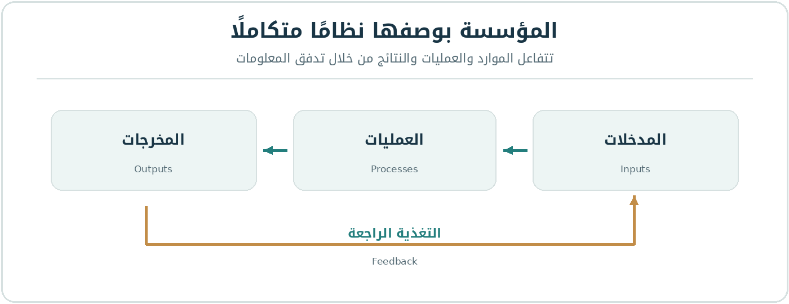
شكل 1: المؤسسة بوصفها نظامًا متكاملًا، رسم توضيحي من إعداد الكتاب
1.2 كيف يفكر المهندس الصناعي؟
يبحث التفكير النظمي في العلاقات قبل تفسير المشكلة بقسم واحد. فالطابور ينتج عن إجراءات مترابطة، وتأخر التسليم يرتبط بالجدولة والنقل والمواد بقدر ارتباطه بسرعة التشغيل.
يسأل المهندس عن توافر المدخلات وقدرة المرحلة التالية على استيعاب المخرجات، ثم يختبر أثر التغيير على نتيجة المؤسسة كلها.
1.2.1 مجالات التطبيق والتخصصات
تطبق الهندسة الصناعية في المصانع والمستشفيات والنقل والجامعات؛ فكلها تستخدم موارد وتدفقات لتحقيق غرض، مع اختلاف متطلبات الخدمة والسلامة.
شكل 2: أمثلة على مجالات تطبيق الهندسة الصناعية
إدارة العمليات والإنتاج (Operations and Production Management): تهتم بتخطيط الأنشطة اللازمة لإنتاج السلع والخدمات وتنظيمها ومراقبتها: كم ننتج، ومتى، وكيف نوزع العمل بين المعدات والعاملين، وكيف نلتزم بمواعيد الطلبات؟
هندسة الجودة (Quality Engineering): تبحث في قدرة المنتج أو الخدمة على تحقيق المتطلبات مع تقليل الأخطاء. ولا تقتصر على فحص المنتج في النهاية، بل تشمل اكتشاف أسباب العيوب ومنع تكرارها.
بحوث العمليات (Operations Research): تستخدم النماذج الرياضية والتحليل الكمي للمساعدة في اتخاذ القرارات، مثل توزيع الموارد المحدودة بين منتجات متعددة أو اختيار خطة نقل مناسبة.
هندسة العوامل البشرية (Human Factors Engineering): تهتم بتصميم العمل والأدوات والبيئة بما يلائم قدرات الإنسان واحتياجاته وحدوده. ومن مجالاتها بيئة العمل (Ergonomics)، التي تهدف إلى تحقيق أداء جيد مع تقليل الإجهاد والمخاطر.
إدارة سلاسل التوريد (Supply Chain Management): تنسق تدفق المواد والمنتجات والمعلومات بين الموردين والمنشآت والزبائن، وتتزايد أهميتها عند اضطراب الإمدادات.
تحليل البيانات واتخاذ القرار (Data Analytics and Decision-Making): تدعم بيانات المبيعات والأعطال والجودة قرارات الطلب والصيانة والتحسين. وتحتاج ترجمة التحليل إلى عمل إلى التواصل وفهم العملية، لا المهارات البرمجية وحدها.
1.3 الإنتاجية: هل يعني العمل أكثر إنتاجًا أفضل؟
تربط الإنتاجية (Productivity) المخرجات بالموارد المستخدمة. لا يثبت ارتفاعها وحده جودة الإدارة؛ إذ تتأثر بالمعدات والمواد وتصميم العمل وطبيعة المنتج.
P الإنتاجية، وQ كمية المخرجات، وI كمية المدخلات. إذا أنتج فريق من ستة عاملين 1,200 وحدة في يوم، تكون النتيجة بوحدات لكل عامل في اليوم.
من أمثلتها وحدات لكل عامل في اليوم، أو وحدات جيدة لكل كيلوغرام من المادة.
مثال 1.1
يتابع مهندس صناعي خط الإنتاج في هذه الحالة.
ينتج مصنع 1,200 وحدة يوميًا باستخدام 6 عمال، فتبلغ إنتاجية العامل الواحد 200 وحدة/عامل/يوم. وبعد إعادة تنظيم العمل، أصبح ينتج 1,050 وحدة باستخدام 5 عمال، فتبلغ الإنتاجية 210 وحدات/عامل/يوم. لذلك تحسنت الإنتاجية لكل عامل بنسبة 5% رغم انخفاض إجمالي الإنتاج. تُراجع كفاية الإنتاج لتلبية الطلب وعبء العمل قبل الحكم على النتيجة.
الكفاءة (Efficiency) هي حسن استخدام الموارد، والفاعلية (Effectiveness) هي تحقيق الهدف. فالخط الذي ينتج بأقل تكلفة منتجًا لا يطلبه الزبون كفء وغير فعّال. والخط الذي يسلّم الطلب في موعده بساعات إضافية مكلفة فعّال وغير كفء. الهدف أن يجتمع الاثنان.
1.4 المهندس الصناعي والبيانات
البيانات (Data) مشاهدات أو قياسات موثقة بوحداتها وفترتها ومصدرها. يبدأ التحليل بتعريف ما سنقيسه وطريقة جمعه.
مثال 1.2: زمن الانتظار
ترصد مهندسة صناعية زمن انتظار المستفيدين في نقطة خدمة.
راقبت المهندسة خمسة أشخاص أثناء انتظار خدمة، وسجل الأوقات بالدقائق: 8، 12، 10، 15، 5. المتوسط = دقائق. لكن لا يمكن الحكم على هذا المتوسط قبل معرفة طبيعة الخدمة، والهدف المستهدف، واختلاف حالات الانتظار بين الأشخاص. فالمتوسط يصف جزءًا من الواقع لا جميع أسبابه.
تبدأ معالجة المشكلة بتعريفها وجمع بياناتها واختبار أسبابها وبدائلها، بمشاركة العاملين وحماية سلامتهم وخصوصية معلوماتهم. تخدم التقنية هذا العمل بعد وضوح السؤال وطريقة القياس.
1.5 مؤسسة واحدة وأهداف متعارضة
اختلفت أولويات المبيعات والإنتاج والمخزن: تسليم سريع، ودفعات كبيرة، ورفوف أقل ازدحامًا. أعاد الفريق المقارنة إلى هدف مشترك: تسليم طلب مطابق في موعده ضمن الموارد المتاحة.
ترتبط القرارات بالمواد والمعلومات والناس والمال. تخفض الدفعة الكبيرة مرات إعداد الآلة، لكنها تؤخر الطلب العاجل وتربط السيولة؛ لذلك نقرأ مؤشر القسم ضمن نتيجة المؤسسة.
1.6 الصناعة والخدمة وسلسلة القيمة
تشمل الصناعة الاستخراج والتحويل، وتشمل الخدمات معالجة الطلب وتقديم المنفعة. يشترك المجالان في أسئلة التدفق والجودة والطاقة والانتظار، وتختلف وحداتهما واشتراطاتهما.
يسمح مخزون السلعة بفصل إنتاجها عن استخدامها، بينما يتزامن تقديم خدمات كثيرة مع حضور المستفيد. وتنتظر في الخدمات ملفات أو أجهزة أو أشخاص؛ لذا نعرّف وحدة المعالجة قبل مقارنة المعدلات.
تمتد سلسلة القيمة من المورد إلى التسليم والخدمة اللاحقة. نميز تغييرًا يطلبه الزبون من إجراء لازم للفحص والامتثال ومن هدر قابل للمنع. لا يُلغى فحص ضروري لأنه لا يغير شكل المنتج.
1.6.1 مثال تعليمي على رحلة الطلب
طلب صيانة احتاج إلى 12 دقيقة تشخيص و 18 دقيقة إصلاح، وانتظر 45 دقيقة قبل الإصلاح و 15 دقيقة قبل التسليم. زمن الإنجاز 90 دقيقة، ووقت المعالجة 30؛ أي ثلث الرحلة. خفض الانتظار 20 دقيقة يجعل الإنجاز 70 دقيقة دون تغيير سرعة الإصلاح. يبدأ القرار من معرفة أين يضيع وقت الطلب.
1.7 حجم المنشأة والملكية وتنظيم القرار
يُحدد حجم المنشأة بمعيار معلن، كالعاملين أو المبيعات أو الأصول. تجمع الورشة الصغيرة سرعة التعلم والاعتماد على أشخاص قلائل، وتحتاج المنشأة الكبيرة إلى تنسيق أوسع.
الملكية العائلية نمط ملكية وإدارة، وليست فئة حجم. يحمي توثيق الصلاحيات وفصل الحسابات ومعرفة تكلفة القرار استمرارية العمل ونقل الخبرة، دون إلغاء الثقة داخل الأسرة.
1.8 من المشكلة العامة إلى سؤال قابل للقياس
نحوّل «العمل غير منظم» إلى سؤال محدد: لماذا يتجاوز تسليم نوع من الطلبات أربعة أيام؟ نعرّف بداية الزمن ونهايته والفترة، ثم نفصل التشغيل عن الانتظار والإرجاع.
نفرق بين ما تغيّره المؤسسة مباشرة وما تحسنه بالتنسيق وما تتعامل معه قيدًا خارجيًا. يحدد ذلك مسؤولية القرار وحدود البدائل الممكنة.
مفاضلة قبل شراء آلة. إذا تأخرت المواد والموافقة على الفحص، فإن تسريع الآلة وحده لا يكمل الطلب. نقارن تنسيق التوريد وتفويض الفحص بالاستثمار في قدرة إضافية، ثم نختبر أثر التدخل.
1.9 من التفكير في الأجزاء إلى التفكير في الكل
التفكير النظمي (Systems Thinking) تفسير سلوك النظام من عناصره وعلاقاتها وتغيرها مع الزمن، مع دراسة الأجزاء ضمن أثرها في الكل [2].
النظام مجموعة عناصر مترابطة تعمل لتحقيق غرض. ويُعرّف بتحليل هدفه ومدخلاته وعملياته ومخرجاته وتغذيته الراجعة وبيئته.
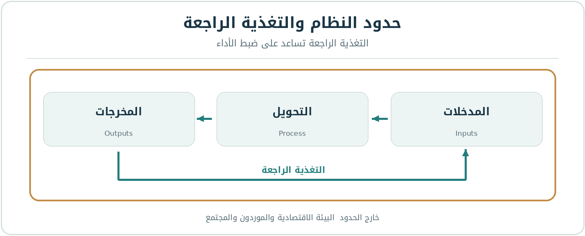
شكل 3: النظام وحدوده ودورة التغذية الراجعة، مخطط تعليمي
المؤسسة نظام مفتوح (Open System) يتبادل المواد والطاقة والمعلومات مع بيئته. ويستخدم النظام المغلق (Closed System) تبسيطًا نظريًا وفق حدود معلنة، لا وصفًا معتادًا لمنشأة حقيقية.
تحدد حدود النظام نطاق الدراسة: شباك خدمة، أو مقصف كامل، أو علاقته بمواعيد المحاضرات. يتبع الاختيار سؤال القرار.
الأنظمة الفرعية (Subsystems)، كالمشتريات والإنتاج والجودة، مترابطة حتى إن ركز النموذج على بعضها.
الأطراف المعنية (Stakeholders) تشمل الإدارة والعاملين والموردين والزبائن والجهات الرقابية والمجتمع؛ ونفحص اختلاف مصالحها عند تقييم البديل.
يعرض مخطط تدفق العمليات (Process Flowchart) ترتيب الأنشطة والقرارات والانتقالات وإعادة العمل، ويُرسم من الملاحظة والتحقق مع منفذي العملية.
أداة SIPOC. تلخص SIPOC الموردين والمدخلات والعملية والمخرجات والعملاء، وتُستخدم لعرض نطاق العملية قبل رسم تفاصيلها.
1.9.1 تطبيق موثق لمخطط العملية في الرعاية الطارئة
استخدمت دراسة لشبكة رعاية عامة في كولومبيا مخطط SIPOC لتحديد نطاق الخدمة وتداخلها مع الأقسام المساندة. يلخص الجدول عناصر المخطط المنشور للمركز POC3، دون نقل جميع تفاصيله [3، شكل 3].
مر المسار بالتسجيل والانتظار والفرز الطبي، ثم انتظار آخر والتشخيص والعلاج. كشف المخطط موضعين للانتظار وجّه إليهما القياس؛ أما SIPOC فيحدد النطاق والعلاقات قبل تفاصيل التدفق.
جدول 1: تطبيق SIPOC في مركز للرعاية الطارئة
|
العنصر |
التطبيق في الحالة المنشورة |
|---|---|
|
الموردون S |
الإحصاء، الصيدلية، الموارد البشرية، المشتريات، نظم المعلومات، المختبر والتصوير |
|
المدخلات I |
السجلات الطبية، الأدوية، الكوادر، الأسِرّة والمعدات وغرف الفرز والانتظار |
|
العملية P |
تقديم الرعاية الطارئة، من القبول إلى التشخيص والعلاج |
|
المخرجات O |
مرضى تلقوا الرعاية، وسجلات محدثة، ووثائق الخدمة |
|
العملاء C |
من وجهات الخدمة: أقسام التنويم والجراحة والعناية المركزة والرعاية المنزلية |
المصدر: تلخيص عربي لعناصر المخطط في [3، شكل 3]. ليست الفئات ترتيبًا لأولوية المرضى؛ إذ تخضع الأولوية للفرز الطبي.
1.10 نقطة الاختناق: لماذا لا تنفع زيادة السرعة دائمًا؟
نقطة الاختناق (Bottleneck) مورد يحد من التدفق ضمن شروط محددة. في خط متسلسل بسيط تقيده المرحلة الأقل قدرة؛ وقد يتغير الاختناق بالأعطال وتنوع المنتجات.
مثال 1.3: مصنع عبوات
يتتبع مهندس صناعي حركة العبوات عبر المصنع.
جدول 2: مقارنة قدرات مراحل الإنتاج
|
المرحلة |
الطاقة القصوى (عبوة/ساعة) |
|---|---|
|
التشكيل |
45 |
|
الفحص |
30 |
|
التغليف |
40 |
نفترض توفر المواد وتشغيل المراحل معًا دون أعطال أو إعادة عمل. بما أن كل عبوة تمر بالمراحل الثلاث، فإن قدرة الخط القصوى = عبوة/ساعة، ومرحلة الفحص هي القيد. إذا رفعنا قدرة التشكيل إلى 60 فلن ترتفع قدرة الخط لأن الفحص بقي عند 30. أما إذا رفعنا قدرة الفحص إلى 38، فتصبح القدرة 38 عبوة/ساعة، أي تحسن نظري 26.7%. خلال ست ساعات تشغيل فعلية يزيد الإنتاج النظري من 180 إلى 228 عبوة. وإذا وصل الفحص إلى 50، تصبح مرحلة التغليف عند 40 قيدًا جديدًا.
يتغير القيد بعد التحسين أو تغير المنتجات والأعطال؛ لذلك نعيد القياس بدل افتراض اختناق ثابت.
1.11 التحسين المحلي: حين يربح القسم ويخسر المصنع
يحسن القرار المحلي مؤشر قسم، بينما يقوّم القرار الشامل أثره على النظام. يوضح المثال التالي الفرق.
مثال 1.4
تراجع مهندسة صناعية أثر قرار شراء على المصنع كله.
خفّض قسم المشتريات سعر مادة من 50 إلى 47 دينارًا للوحدة، واشترى 1,000 وحدة، فوفر 3,000 دينار. لكن المادة الأقل جودة تسببت في عيوب وإعادة عمل بتكلفة إضافية 4,500 دينار. إذن الأثر الصافي == خسارة 1,500 دينار مقارنة بالوضع السابق. تُقاس النتيجة بالتكلفة الكلية، لا بسعر الشراء وحده.
1.12 كيف نقيس أداء النظام؟
مؤشرات الأداء الرئيسية (KPIs) مقاييس مختارة لأهداف النظام. يُعرّف لكل مؤشر البسط والمقام والوحدة والفترة وحدود العملية.
جدول 3: مؤشرات أداء النظام وتعريفاتها
|
المؤشر |
English Term |
ما يقيسه |
|---|---|---|
|
معدل الإنتاج الفعلي |
Throughput |
الوحدات المنجزة في وحدة زمن |
|
زمن الإنجاز |
Lead Time |
الوقت من بداية محددة إلى نهاية محددة |
|
زمن الدورة |
Cycle Time |
زمن دورة عملية أو الفاصل بين مخرجاتها |
|
معدل العيوب |
Defect Rate |
نسبة المنتجات غير المطابقة |
|
استغلال الطاقة |
Utilization |
نسبة الاستخدام إلى الوقت/القدرة المتاحة |
|
زمن الانتظار |
Waiting Time |
الوقت قبل بدء الخدمة |
|
العمل تحت التشغيل |
Work in Process |
وحدات دخلت العملية ولم تكتمل |
|
الالتزام بالتسليم |
On-Time Delivery |
نسبة الطلبات المسلّمة في موعدها |
المخرجات (Outputs) ما أُنجز، والنتائج (Outcomes) أثره؛ فزيادة عدد المحاضرات لا تثبت زيادة التعلم.
إلى الفصل التالي: احتفظ بخريطة النظام والاختناق؛ ثم افحص تصميم العمل وسلامة الإنسان في الفصل الثاني.
1.13 خلاصة الفصل
تبدأ الهندسة الصناعية بتحديد غرض النظام وحدوده، ثم فهم علاقات الإنسان والمواد والمعلومات. نقرأ الإنتاجية مع الجودة والزمن والتكلفة والسلامة، ونختبر أثر القرار في الخدمة التي تصل إلى المستفيد.
1.14 أسئلة المراجعة
1. ما الفرق بين الإنتاجية والكفاءة والفاعلية؟ وضّح بموقف تشغيلي.
2. كيف يمكن لتحسين أداء قسم أن يخفض أداء المؤسسة كلها؟
3. كيف يختلف حجم المنشأة عن نمط ملكيتها، وما أثر ذلك في اتخاذ القرار؟
4. ارسم حدود نظام تختاره، وحدد مدخلاته ومخرجاته وقيده ومؤشر نجاحه.
1.15 مسائل حسابية مختارة
حل المسائل مع توضيح الوحدات والفروض، ثم قارن خطواتك بحلول ملحق أ.
ح 1.1: أنتج فريق من 5 عاملين 900 وحدة في وردية 6 ساعات، منها 45 غير مطابقة. احسب الإنتاجية الإجمالية وإنتاجية المنتج الجيد، وفسّر سبب اختلاف المؤشرين.
ح 1.2: زاد الإنتاج الجيد من 480 إلى 552 وحدة، بينما زادت ساعات العمل من 80 إلى 88. احسب تغير إنتاجية العمل؛ وهل تساوي نسبة زيادة الإنتاج؟
ح 1.3: تحتاج خدمة طلب إلى إدخال 8 دقائق، ومراجعة 12، وانتظار 35، وانتقال 5. احسب زمن الإنجاز ونسبة وقت المعالجة؛ ثم احسبهما إذا انخفض الانتظار إلى 15 دقيقة.
ح 1.4: طاقات ثلاث مراحل متسلسلة 55 و 40 و 48 وحدة/ساعة، ووقت التشغيل 7 ساعات. احسب حد الإنتاج اليومي، ثم حدّه إذا ارتفعت المرحلة الثانية إلى 50، دون أعطال أو خسائر جودة.
1.16 مراجع الفصل 1
[1] Institute of Industrial and Systems Engineers, Industrial and Systems Engineering Body of Knowledge (ISE BoK), rev. ed., 2026. [Online]. Available: https://www.iise.org/uploadedFiles/IIE/Technical_Resources/Publications/ISE-BoK-Full-v1.pdf. Introduction; areas 1, 9, 14.
[2] R. D. Arnold and J. Wade, “A definition of systems thinking: A systems approach,” Procedia Computer Science, vol. 44, pp. 669–678, 2015, doi: 10.1016/j.procs.2015.03.050.
[3] M. Ortiz-Barrios and J.-J. Alfaro-Saiz, “An integrated approach for designing in-time and economically sustainable emergency care networks: A case study in the public sector,” PLoS ONE, vol. 15, no. 6, Art. no. e0234984, 2020, doi: 10.1371/journal.pone.0234984.
[4] W. C. Turner, J. H. Mize, K. E. Case, and J. W. Nazemetz, Introduction to Industrial and Systems Engineering, 3rd ed. Englewood Cliffs, NJ, USA: Prentice Hall, 1993. Further reading: 2, 18.
الفصل الثاني
العوامل البشرية والسلامة المهنية
بنهاية الفصل، يميز القارئ بين الخطر والمخاطرة، ويقارن إجراءات السيطرة، ويقرأ أثر تصميم العمل والحركة على السلامة والجهد البشري.
بقيت بطاقة الطلب الحمراء معلقة حين نزل الفريق إلى الممر الذي تسلكه الخزانة. أوضحت خريطة الفصل السابق أين تتوقف، لكن المهندسة الصناعية لاحظت أمرًا آخر: العامل يلتف حول رزم جاهزة ثم يرفع آخر عبوة فوق كتفه. بدا اختصار الطريق نجاحًا على الورق، بينما زاد الجهد في الحركة الأخيرة.
طلبت المهندسة تجربة المسار مع العامل قبل تثبيت الترتيب. اتضح أن تحسين النظام يبدأ من ملاءمة المهمة للإنسان الذي يؤديها. وقبل أن يضع الفريق هدفًا أسرع للتسليم، احتاج إلى تحديد الأخطار وتصميم حركة آمنة؛ ثم سيحتاج إلى قياس يثبت أن التعديل حسّن العمل فعلًا.
2.1 هندسة العوامل البشرية
تهتم هندسة العوامل البشرية بدراسة التفاعل بين الإنسان وعناصر النظام الأخرى، مثل المعدات والمهام والبيئة والإجراءات والبرامج. وتستخدم المعرفة عن قدرات الإنسان وحدوده للمساعدة في تصميم أنظمة تحقق السلامة والأداء المناسبين.
أما بيئة العمل (Ergonomics) فتبحث في ملاءمة المهام والأدوات والمكان لخصائص الإنسان. فارتفاع طاولة العمل، ووزن الصندوق، ومدى وصول اليد إلى زر الإيقاف، ووضوح الشاشة، كلها قرارات تصميم تؤثر في الراحة والأخطاء واحتمالات الإصابة.
لا يوجد «عامل نموذجي» يصلح له تصميم واحد دائمًا. فالناس يختلفون في أطوالهم وقدراتهم وخبراتهم، وفي متطلبات العمل وحالتهم أثناء الوردية. ولهذا يحتاج التصميم إلى مراعاة التنوع البشري وإلى تقييم فعلي للمهمة.
2.1.1 الجوانب الثلاثة للعوامل البشرية
الجوانب البدنية (Physical Ergonomics): الوضعيات والحركة والرفع والجهد المتكرر. الجوانب المعرفية (Cognitive Ergonomics): الانتباه والذاكرة وعبء المعلومات ووضوح الإشارات. الجوانب التنظيمية (Organizational Ergonomics): توزيع العمل والمناوبات والتواصل والمشاركة والتدريب.
فيمكن أن تكون آلة آمنة ميكانيكيًا، لكن تعليمات تشغيلها معقدة، أو ربما تكون التعليمات واضحة بينما يفرض جدول العمل إجهادًا غير مناسب. لذلك نفكر في الإنسان والمهمة والمنظمة معًا.
2.2 من الخطر إلى الإصابة
الخطر (Hazard) مصدر محتمل للأذى، مثل نصل دوّار غير محمي. المخاطرة (Risk) ترتبط باحتمال التعرض للأذى وشدة عواقبه وفق طريقة التقييم. الحادث (Incident) واقعة غير مرغوب فيها، وقد تنتج عنها إصابة أو لا تنتج. الإصابة المهنية (Occupational Injury) أذى جسدي مرتبط بالعمل.
أما الحادث الوشيك (Near Miss) فهو حدث كان يمكن أن يتسبب في أذى لكنه لم يفعل في تلك الواقعة؛ وربما يقدم معلومات قيّمة للوقاية إذا أبلغ عنه العاملون دون خوف غير مبرر من اللوم.
2.2.1 مثال: صندوق يسقط بجانب العامل
إذا وضع صندوق ثقيل على رف غير ثابت، فعدم الاستقرار يمثل خطرًا. وإذا كان العمال يمرون تحت الرف باستمرار، فيمكن أن يرتفع احتمال التعرض. وإذا سقط الصندوق ولم يصب أحدًا، فهذا حادث وشيك يستحق التحقيق. وإذا تسبب في إصابة، فوقع ضرر مهني بالفعل.
من الخطأ أن ننتظر الإصابة حتى نعترف بوجود المشكلة. إن التعلم من الحوادث الوشيكة جزء من منع الأذى قبل وقوعه.
2.3 أين تختبئ الأخطار في مكان العمل؟
يمكن تصنيف الأخطار مبدئيًا إلى فئات تساعد على الملاحظة والتحليل، مع إدراك أن بعضها يتداخل مع بعض.
جدول 4: فئات الأخطار في مكان العمل
|
الفئة |
English Term |
مثال في منشأة صناعية |
|---|---|---|
|
ميكانيكية |
Mechanical Hazards |
آلة قص أو أجزاء متحركة مكشوفة |
|
فيزيائية |
Physical Hazards |
ضجيج وحرارة واهتزاز |
|
كيميائية |
Chemical Hazards |
أبخرة مواد تنظيف أو دهان |
|
كهربائية |
Electrical Hazards |
وصلات أو كابلات غير آمنة |
|
بيئة عمل |
Ergonomic Hazards |
انحناء متكرر أو رفع غير مناسب |
|
تنظيمية ونفسية اجتماعية |
Psychosocial Hazards |
إجهاد وضغط مفرط أو تعليمات متضاربة |
|
حريق وطوارئ |
Fire and Emergency Hazards |
ممرات إخلاء مسدودة أو مواد قابلة للاشتعال |
لا تكفي معرفة نوع الخطر لاختيار إجراء مناسب. يجب معرفة من يتعرض له، ومدة التعرض، وطبيعة العملية، ومدى فاعلية الإجراءات الحالية.
2.3.1 السلامة ليست مسؤولية العامل وحده
يسمع العامل أحيانًا عبارة «انتبه أكثر» بعد كل حادث. لكن الانتباه البشري محدود، ولا يجوز جعله خط الدفاع الوحيد أمام آلة خطرة. فتصميم الحماية والتدريب والرقابة والصيانة وتنظيم العمل مسؤوليات مؤسسية متداخلة.
2.4 كيف نقيم المخاطر؟
يمكن لطلبة السنة الأولى استخدام مصفوفة تعليمية مبسطة تجمع احتمال الحدوث (Likelihood) وشدة العاقبة (Severity). يخصص لكل بعد تقييم من 1 إلى 3، ثم يحسب حاصل الضرب لتحديد أولويات أولية للمناقشة.
جدول 5: مصفوفة تقدير أولويات المخاطر
|
الدرجة |
الاحتمال |
الشدة |
|---|---|---|
|
1 |
غير مرجح في الظروف المدروسة |
أثر محدود |
|
2 |
ممكن الحدوث |
أثر متوسط |
|
3 |
مرجح أو متكرر |
أثر شديد |
R درجة أولوية المخاطرة التعليمية، وL درجة احتمال الحدوث، وS درجة الشدة. تستخدم الدرجات السلم نفسه في المقارنة.
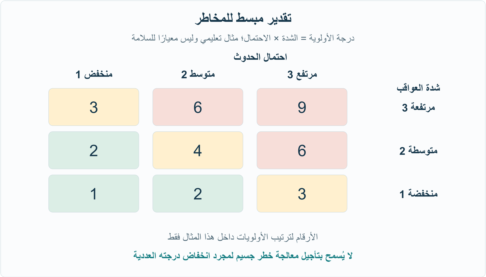
شكل 4: مصفوفة مبسطة لترتيب المخاطر، مثال تعليمي وليست معيارًا نظاميًا
مثال 2.1
يقدّر مهندس صناعي أولوية خطرين في ورشة.
في ورشة افتراضية، جرى تقدير خطر التعثر بسبب كابل في ممر مشاة باحتمال 3 وشدة 2. إذن المؤشر =. وقدّر خطر تعرض العامل لجزء متحرك مكشوف باحتمال 2 وشدة 3، فيكون المؤشر 6 أيضًا.
هل يعني تساوي الرقمين أن الحالتين متماثلتان؟ لا. فطريقة الحساب تقريبية ولا تعبر عن جميع فروق النتائج وطبيعة التعرض. والقرار المهني، خصوصًا مع الأخطار الجسيمة، يحتاج إلى تقييم متخصص ومعايير وإجراءات ملائمة، لا إلى جدول بسيط وحده.
2.5 كيف نسيطر على الأخطار؟
ترتب الأدبيات المهنية إجراءات السيطرة على الأخطار من الأكثر فاعلية إلى الأقل فاعلية عندما تُستخدم منفردة. يتضمن التسلسل خمسة مستويات [3]:
1. الإزالة (Elimination): حذف العملية الخطرة حيثما أمكن.
2. الاستبدال (Substitution): استخدام مادة أو طريقة أقل خطورة.
3. الضوابط الهندسية (Engineering Controls): عزل الأجزاء المتحركة والتهوية والحواجز المادية.
4. الضوابط الإدارية (Administrative Controls): إجراءات عمل وتدريب ومناوبات ولافتات ومراقبة.
5. معدات الوقاية الشخصية (Personal Protective Equipment – PPE): مثل النظارات والقفازات المناسبة ووسائل حماية السمع عند الحاجة.
شكل 5: تسلسل إجراءات السيطرة على الأخطار
تعد معدات الوقاية الشخصية مهمة في مواضعها، لكنها قد تفشل إذا لم تكن ملائمة أو لم تُستخدم بصورة صحيحة، ولا ينبغي أن تكون بديلًا تلقائيًا عن الحماية الهندسية الممكنة. كذلك لا تكفي لوحة تحذير عند آلة تفتقر إلى حاجز ضروري.
2.5.1 مثال: الضجيج الصناعي
يمكن أن يتطلب تقليل التعرض للضجيج دراسة المصدر نفسه، وصيانة المعدات، وعزل مناطق الضوضاء، وتنظيم مدة التعرض، واختيار وسائل حماية مناسبة. ولا يمكن تحديد مستويات التعرض المسموح بها أو تصميم حماية كافية اعتمادًا على تخمين الطالب؛ بل يستلزم الأمر قياسًا متخصصًا والرجوع إلى المعايير النافذة.
2.6 بيئة العمل: تصميم المكان ليلائم الإنسان
عندما توضع الأدوات الثقيلة على رف مرتفع جدًا، أو تتطلب المهمة التواء متكررًا للجذع، أو يصعب الوصول إلى مفتاح إيقاف الآلة، يصبح تصميم المكان جزءًا من المشكلة. وربما يكون الحل في تغيير ارتفاع سطح العمل أو موقع المواد أو طريقة المناولة، لا في مطالبة العامل «بالحذر» فقط.
مبادئ عملية أولية. ينبغي تقليل الرفع اليدوي غير الضروري، ووضع الأدوات المتكررة في متناول مناسب، وتجنب الوضعيات الثابتة الطويلة عند الإمكان، وضمان وضوح التعليمات والإشارات، وتوفير معدات ملائمة للمهمة. لكن ليس هناك ارتفاع واحد أو وزن واحد يناسب جميع العمال؛ فالتصميم النهائي يحتاج إلى بيانات بشرية ومهنية وسياقية.
2.7 مثال تطبيقي: زمن المناولة ومسافة الحركة
ينقل عاملٌ في المثال التالي صندوقًا خفيفًا في عملية آمنة بمسافة 12 مترًا في كل رحلة، ويكرر ذلك 25 مرة في اليوم. إذا أعيد تصميم موقع التخزين وأصبحت المسافة 5 أمتار لكل رحلة، فإن المسافة قبل التحسين = متر، وبعده = مترًا. مقدار الانخفاض = مترًا، ونسبته = تقريبًا.
قد يسهم تقليل الحركة في خفض الوقت والإجهاد، لكن لا يصح تحويل المسافة مباشرة إلى مؤشر طبي للإصابة أو افتراض تحسن السلامة بنسبة 58.3%. يجب تقييم وزن الحمل ووتيرة المناولة ووضعيات الجسم ومخاطر الموقع.
الثقافة المهنية والإبلاغ عن الأخطار. تدعم ثقافة السلامة الإبلاغ عن الحوادث الوشيكة والتعلم منها دون لوم مسبق. تُراجع الأسباب ويحدد مسؤول للإجراء وموعد للتحقق من أثره.
ويحتاج بناء تلك الثقافة إلى مشاركة العاملين وإجراءات واضحة للاستجابة للبلاغات وتدريب ملائم وقيادة تقدم السلامة في القرارات اليومية. وليس الهدف زيادة الأوراق التي تملأ بعد الحوادث، بل منع تكرار العوامل التي يمكن التحكم فيها.
2.7.1 بطاقة تقييم خطر: قبل أن نختار الحل
يحمل عامل صندوقًا من مستوى الأرض إلى طاولة مرتفعة مرارًا. ربما يطلب منه المشرف أن «يتوخى الحذر»، لكن التفكير الهندسي يبدأ بقياس ارتفاع الرفع وتكراره وكتلة الحمولة ومسار الحركة وتوافر معدات المناولة.
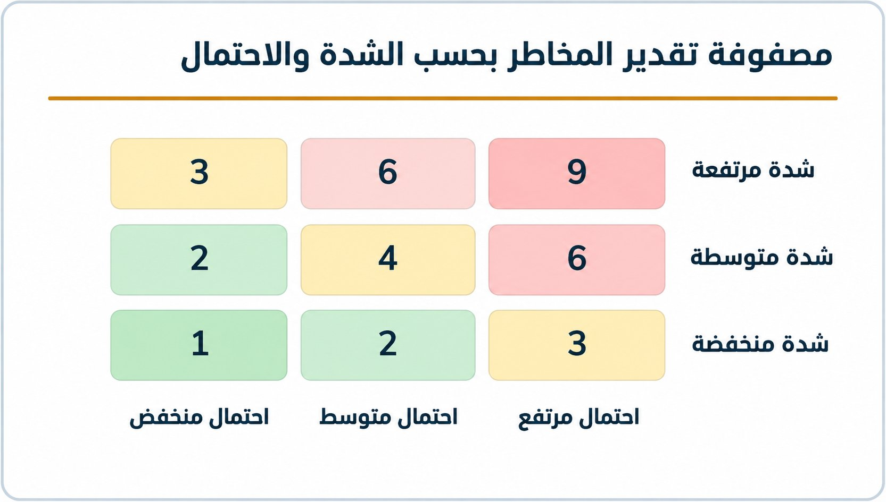
شكل 6: مصفوفة تعليمية لتقدير أولوية الخطر؛ ليست بديلًا عن معايير السلامة المهنية
أعطى فريقٌ في تقييم أولي احتمال وقوع حدث غير مرغوب فيه درجة 2 من 3، وشدته درجة 3 من 3؛ فتكون درجة الفرز الأولي من 9. هذه الدرجة للمقارنة الداخلية فقط، ولا تُعد حدًا قانونيًا أو معيارًا معتمدًا. ومن الأفضل إزالة الخطر أو تقليله من المصدر قبل الاكتفاء بمعدات الوقاية الشخصية.
إلى الفصل التالي: احمل تقييم الأخطار وتصميم الحركة إلى الفصل الثالث؛ فكل تعديل يحتاج قياسًا يثبت أثره.
2.8 خلاصة الفصل
تبدأ السلامة بإزالة مصدر الخطر أو التحكم فيه، مع تصميم العمل ليلائم الإنسان. مصفوفة الأولوية أداة تعليمية، ولا تعوض التقييم المتخصص أو المتطلبات الإلزامية.
2.9 أسئلة المراجعة
1. ما الفرق بين مصدر الخطر ومستوى المخاطرة؟
2. لماذا يُفضّل تعديل تصميم العمل على الاكتفاء بطلب الحذر؟
3. ما الذي لا تخبرنا به درجة مصفوفة المخاطر عن إصابة شديدة محتملة؟
4. كيف تتحقق من أن تقليل الحركة حسّن السلامة ولم ينقل الخطر إلى عامل آخر؟
2.10 مسائل حسابية مختارة
حل المسائل مع توضيح الوحدات والفروض، ثم قارن خطواتك بحلول ملحق أ.
ح 2.1: ينقل عامل عبوات كتلتها 8 كغ،25 مرة/ساعة،لمدة 6 ساعات. بعد إعادة التصميم أصبحت المناولة 10 مرات/ساعة. احسب الكتلة المناولة في الحالتين ونسبة الخفض، دون اعتبار ذلك تقييمًا صحيًا كاملًا.
ح 2.2: تُقيّم ثلاثة أخطار بمصفوفة ترتيب أولي: أ احتمال 3 وشدة 2، ب احتمال 1 وشدة 3، ج احتمال 2 وشدة 2. احسب الدرجات ورتبها، ثم فسّر لماذا لا يجوز قبول الخطر ب تلقائيًا.
2.11 مراجع الفصل 2
[1] Institute of Industrial and Systems Engineers, Industrial and Systems Engineering Body of Knowledge (ISE BoK), rev. ed., 2026. [Online]. Available: https://www.iise.org/uploadedFiles/IIE/Technical_Resources/Publications/ISE-BoK-Full-v1.pdf. areas 6, 10.
[2] W. C. Turner, J. H. Mize, K. E. Case, and J. W. Nazemetz, Introduction to Industrial and Systems Engineering, 3rd ed. Englewood Cliffs, NJ, USA: Prentice Hall, 1993. Further reading: 6, 11.
[3] National Institute for Occupational Safety and Health (NIOSH), “Hierarchy of Controls,” Centers for Disease Control and Prevention. [Online]. Available: https://www.cdc.gov/niosh/hierarchy-of-controls/about/. Accessed: Nov. 22, 2026.
الفصل الثالث
القياس والبيانات
المرحلة الثانية القياس وتحسين التدفق والجودة
بنهاية الفصل، يعرّف القارئ المؤشر وطريقة جمع بياناته، ويفسّر التصحيح وعدم اليقين، ويحسب مقاييس وصفية وتقديرات عينة مع بيان حدودها.
بعد تعديل الممر، أراد الفريق قياس أثره على الطلب ذي البطاقة الحمراء. قال سجل الإنتاج إنه اكتمل، وقال المخزن إنه لم يتسلم مفصلاته، بينما بدأت ساعة التسليم في برنامج المبيعات من وقت مختلف. وضع المهندس الصناعي التقارير متجاورة: الأرقام صحيحة في سجلاتها، لكنها تصف أحداثًا مختلفة.
اتفق الفريق أولًا على معنى الطلب المكتمل وبداية الزمن ونهايته. ثم ظهرت قراءتان مختلفتان لبُعد في الخزانة نفسها، ففحص أداة القياس وموضع استخدامها قبل قبول القطعة أو رفضها. هكذا ينتقل العمل من خريطة النظام إلى بيانات نستطيع الوثوق بها؛ وبهذه البيانات سنبحث عن القيد في الفصل التالي.
3.1 من البيانات إلى القرار
البيانات (Data) قيم ومشاهدات خام: 18 دقيقة، 42 عبوة، أو توقف آلة ثلاث مرات. أما المعلومات (Information) فهي بيانات نظمت ووضعت في سياق مفهوم: متوسط زمن انتظار الزبون 18 دقيقة خلال الأسبوع. وتتحول المعلومات إلى معرفة عملية (Actionable Insight) عندما تساعدنا على تحديد إجراء قابل للاختبار، مثل إعادة تنظيم تسليم الطلبات في ساعات الذروة.
تستطيع مؤسسة صغيرة جمع بيانات مفيدة باستخدام ورقة منظمة أو ملف جداول إلكترونية (Spreadsheet). لا تحتاج البداية إلى أجهزة استشعار أو اشتراك مكلف. لكن عليها الاتفاق على تعريف موحد للمؤشرات: متى يبدأ وقت الطلب؟ ومتى ينتهي؟ وهل تعد القطعة المعادة للإصلاح وحدة منجزة؟
3.1.1 أربعة أسئلة قبل فتح أي برنامج
عند قراءة تقرير إنتاج، يسأل المهندس: ما المشكلة؟ وما البيانات اللازمة؟ ومن سجلها؟ وكيف نتحقق من دقتها؟
إذا جمعنا وقت توقف الآلات دون تسجيل السبب، عرفنا حجم التوقف لكننا لا نعرف العلاج. وإذا سجلنا المبيعات دون المرتجعات، فيمكن أن نبالغ في تقدير النتائج. وإذا قارنّا مصنعين مختلفين دون حساب ساعات العمل وتنوع المنتجات، فقد نصل إلى حكم غير منصف.
تسمى خصائص صلاحية البيانات للتحليل جودة البيانات (Data Quality)، وتشمل الدقة (Accuracy)، والاكتمال (Completeness)، والاتساق (Consistency)، والتوقيت المناسب (Timeliness). ليست هذه خصائص شكلية؛ فيمكن أن يقود الخطأ في وحدة القياس إلى طلب مخزون لا يحتاج إليه المصنع.
3.2 القياس والمعايرة والتتبع المترولوجي
حدد الكمية والوحدة والإجراء والظروف. دقة العرض لا تساوي صحة النتيجة؛ والانحياز فرق منهجي عن مرجع، والتكرارية تقارب النتائج تحت الشروط نفسها.
تربط المعايرة القراءة بمرجع وعدم يقين، ويغير الضبط استجابة الأداة، بينما يفحص التحقق استيفاء المتطلبات. التتبع المترولوجي خاصية للنتيجة تربطها بمرجع عبر سلسلة معايرات موثقة غير منقطعة، تسهم كل معايرة فيها في عدم اليقين [2].
3.2.1 مثال تطبيقي في معايرة مقياس أبعاد
c التصحيح المضاف، وxref القيمة المرجعية، وxind قراءة الأداة، وxcorr النتيجة المصححة. يقيس مهندس صناعي قالبًا مرجعيًا طوله 50.000 مم فتقرأ الأداة 50.080 مم، ثم يسجل للقطعة قراءة 50.120 مم.
نفترض ثبات التصحيح في هذا النطاق. تكشف المعايرة عند نقطة واحدة الانحياز عندها، وتحتاج دراسة خطية الأداة إلى قياسات عند نقاط أخرى.
U عدم اليقين الموسع، وuc عدم اليقين المعياري المركب، وk معامل التغطية بلا وحدة. للنتيجة المصححة 50.040 مم، نستخدم عدم يقين معياريًا مقداره 0.015 مم ومعامل تغطية يساوي 2.
إذا كانت المواصفة من 49.950 إلى 50.050 مم، تجاوز مجال التغطية الحد الأعلى. بقاعدة قبول تشترط احتواء المجال كاملًا، لا تكفي القيمة المركزية لإعلان المطابقة. يتفق فريق القياس على قاعدة القرار قبل الفحص.
كيف نفحص نظام القياس قبل الحكم على العملية. في Gauge R&R يقيس ثلاثة فاحصين عشر قطع مرتين بترتيب عشوائي وقراءات معماة. نفصل تباين القطع والفاحصين والتكرار، ونفحص التثبيت والحرارة والأداة والتدريب [3].
3.3 الإحصاء الوصفي من القيم إلى التباين
لخمسة أزمنة خدمة بالدقائق 4، 5، 5، 6، 10: المجموع 30، والمتوسط 6، والوسيط بعد الترتيب 5، والمدى 6. المتوسط حساس للقيمة الكبيرة؛ والوسيط يصف مركزًا أكثر مقاومة لها. نبقي القيمة 10 ما لم يثبت خطأ تسجيلها، لأنها قد تكشف سببًا تشغيليًا.
x̄ متوسط العينة، وxi المشاهدة رقم i، وn عدد المشاهدات، وs² تباين العينة، وs انحرافها المعياري؛ ويشترط n أكبر من واحد.
لقياس تشتت عينة نحسب الفروق عن المتوسط: −2، −1، −1، 0، 4؛ ومربعاتها مجموعها 22. فيكون التباين 5.5 دقيقة² والانحراف المعياري 2.345 دقيقة، كما في الحساب أعلاه. القسمة على تخص تقدير تباين المجتمع من عينة؛ أما وصف مجتمع كامل فيستخدم مقام n. يوصف التشتت بوحدة الزمن، لا بالنسبة المئوية إلا إذا عرّفنا مؤشرًا نسبيًا [4].
3.3.1 المعاينة والاحتمال وحدود الاستنتاج
المجتمع هو كل الحالات التي نريد الاستنتاج عنها، والعينة هي الحالات المرصودة. اختيار عشر طلبات متتالية في وقت هادئ لا يمثل وردية كاملة. يمكن اختيار فترات عشوائية موزعة على الورديات أو عينة طبقية بحسب نوع الخدمة، مع تسجيل حالات الرفض والفقد. زيادة حجم عينة متحيزة لا تصلح طريقة اختيارها.
الاحتمال عدد بين صفر وواحد يصف عدم يقين وفق نموذج. في نموذج برنولي تكون النتيجة مطابقة أو غير مطابقة، واحتمال عدم المطابقة p. إذا كانت الوحدات مستقلة وثبت p، فعدد غير المطابق في n وحدة له متوسط np وتباين . تمهد هذه الفكرة لمخطط p في فصل الجودة؛ وتتغير ملاءمة النموذج إذا كانت العيوب متكتلة داخل دفعات.
p̂ نسبة العينة، وn حجمها، وSE الخطأ المعياري، وCI₉₅% فترة الثقة التقريبية. في عينة عشوائية مستقلة من 400 وحدة كانت النسبة المشاهدة 10%.
يناسب التقريب هذا المثال لأن عددي الوحدات المطابقة وغير المطابقة كبيران. وقد تُفضّل طريقة ويلسون في التطبيق. عند تكرار المعاينة بالشروط نفسها، تغطي طريقة بناء الفترات نسبة المجتمع في نحو 95% من التكرارات. وقد يؤثر التحيز أو الاعتماد بين الوحدات في هذه التغطية [5].
مخرج مرحلة القياس. أنشئ قاموسًا للمتغيرات والوحدات والفترات، وسجل القياسات الخام وطريقة المعاينة وفحص الأداة والتباين؛ فالقرار يعتمد على هذا الملف.
3.4 لوحة مؤشرات صغيرة أفضل من شاشة مزدحمة
تعرض لوحة المؤشرات (Dashboard) عددًا محدودًا من المقاييس المرتبطة بقرار: المنتج الجيد، وعدم المطابقة، والتوقف، والتسليم والطاقة. تُظهر الاتجاه والهدف دون إخفاء تعريف المؤشر.
جدول 6: اختيار مؤشر يخدم قرارًا
|
المؤشر |
ما الذي يجيب عنه؟ |
تنبيه يجب عدم نسيانه |
|---|---|---|
|
الإنتاج الجيد (Good Output) |
كم وحدة صالحة أنتجنا؟ |
لا تخلطه بإجمالي التشغيل |
|
نسبة العيوب (Defect Rate) |
ما حصة الوحدات غير المطابقة؟ |
حدد معيار المطابقة |
|
زمن التوقف (Downtime) |
كم وقتًا فقدنا؟ |
سجل الأسباب لا الرقم وحده |
|
الالتزام بالتسليم (On-Time Delivery) |
هل وصل الطلب في موعده؟ |
حدد «الموعد» من منظور الزبون |
|
الطاقة النوعية (Specific Energy Use) |
كم طاقة استهلكت كل وحدة؟ |
لا تقارن منتجات غير متشابهة |
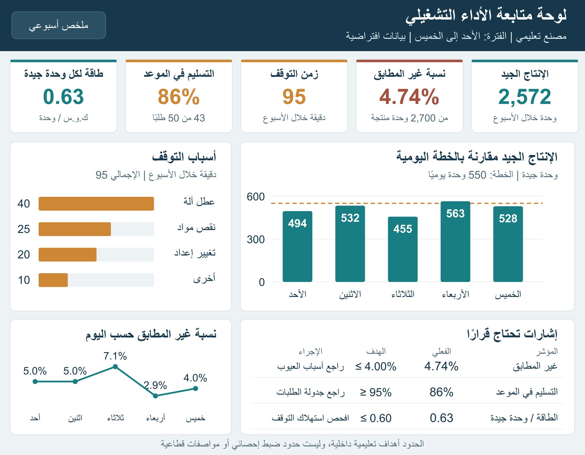
شكل 7: لوحة متابعة تشغيلية لمصنع تعليمي
3.5 مثال تطبيقي: رقم يتغير مع تعريفه
في يوم واحد، سجل المصنع 400 قطعة عند نهاية التجميع، منها 20 قطعة أعيدت إلى القسم لإصلاح عيوب. خرج من التغليف 350 قطعة سليمة، بينما انتظرت 30 قطعة الفحص النهائي.
إذا عرّفنا «المنجز» بأنه الخارج من التجميع قبل المعالجة، فالعدد 400. وإذا عرّفناه بأنه المنتج الجيد الخارج من التغليف، فالعدد 350. يظهر كلا الرقمين في تقارير صحيحة من حيث العد، لكنهما يجيبان عن سؤالين مختلفين.
إذا كان هدف المؤسسة تسليم منتجات نهائية، فالمؤشر المناسب في هذه الحالة هو 350، لا 400. لا نحتاج إلى ذكاء اصطناعي كي نكتشف الفرق؛ نحتاج أولًا إلى تعريف واضح للعملية.
الصناعة 4.0: أداة تتطلب استعدادًا. تربط الصناعة 4.0 البيانات والحساسات والأتمتة لدعم القرار. يشمل ذلك إنترنت الأشياء الصناعي والتحليل والصيانة التنبؤية، بعد ضبط العملية وتعريف البيانات.
يتطلب التحول الرقمي بنية قابلة للصيانة وأمن معلومات ومهارات واضحة؛ فلا يبدأ بشراء شاشة.
تُراجع التقنية بحسب جاهزية المنشأة ومواردها وخريطة تنفيذ مرحلية [6].
متى يكون الذكاء الاصطناعي مفيدًا؟ إذا كانت المؤسسة تملك سجلًا منتظمًا للأعطال وقراءات الآلات، فيمكن أن تساعدها نماذج الصيانة التنبؤية (Predictive Maintenance) على تقدير احتمالات الأعطال. وإذا كانت تملك بيانات مبيعات متسقة، فقد تستفيد من التنبؤ بالطلب (Demand Forecasting). لكن النموذج لا يعوض غياب البيانات أو سوء تعريف المشكلة.
قارن التنبؤ بالمشاهدات واحسب خطأه، وحدّث النموذج عند تغير الظروف. الاحتمال ليس موعدًا مؤكدًا للطلب أو العطل.
خصوصية البيانات وأمانها. حدد صلاحيات الوصول والنسخ الاحتياطي والبيانات الضرورية فقط. تُحمى بيانات الأفراد، ويُعلن أي فقد أو تعديل يؤثر في التحليل.
في مشروع تحسين رقمي تعليمي، يسجل مخبزٌ عدد الأرغفة الجيدة والمرفوضة واستهلاك الكهرباء يوميًا. في الأسبوع الأول أنتج 7,000 رغيف جيد باستخدام 1,400 كيلوواط-ساعة؛ وفي الأسبوع الثاني أنتج 7,500 رغيف جيد باستخدام 1,425 كيلوواط-ساعة.
الطاقة لكل رغيف جيد في الأسبوع الأول = كيلوواط-ساعة/رغيف. وفي الأسبوع الثاني = كيلوواط-ساعة/رغيف. الانخفاض النسبي =.
3.5.1 أخلاقيات البيانات
لا تُستبعد قيمة لأنها لا توافق التوقع. يُصحح خطأ التسجيل مع الاحتفاظ بأثر التعديل، وتُذكر القيم المفقودة وحدود الاستنتاج.
إلى الفصل التالي: احمل قاموس البيانات وسجل المعايرة والعينة إلى فصل العمليات الرابع؛ فلا نقارن أزمنة لم نتفق على تعريفها.
3.6 خلاصة الفصل
تسبق جودة القياس والعينة اختيار البرنامج. تُعرض النتائج بوحداتها وتباينها وعدم يقينها، وتُختبر التقنية بما تضيفه إلى القرار.
3.7 أسئلة المراجعة
1. ما الفرق بين خطأ القياس والتصحيح وعدم اليقين؟
2. متى يكون المتوسط وحده مضللًا في وصف عملية؟
3. كيف تختار مؤشرًا وتعريفًا تشغيليًا يدعمان قرارًا محددًا؟
4. ما حدود الاستنتاج من عينة غير عشوائية أو نظام قياس غير موثوق؟
3.8 مسائل حسابية مختارة
حل المسائل مع توضيح الوحدات والفروض، ثم قارن خطواتك بحلول ملحق أ.
ح 3.1: قياسات زمن عملية بالثواني:10،12،11،13،14. احسب المتوسط وتباين العينة وانحرافها المعياري، واكتب وحدة كل نتيجة.
ح 3.2: مرجع طوله 20.000 مم أعطى قراءة 20.120 مم. احسب التصحيح والنتيجة المصححة لقطعة قراءتها 19.850 مم. إذا كان عدم اليقين الموسع 0.040 مم فما مجال التعبير عن النتيجة؟ افترض ثبات التصحيح محليًا.
ح 3.3: في عينة عشوائية من 400 وحدة، كانت 32 غير مطابقة. احسب نسبة العينة والخطأ المعياري وفترة ثقة تقريبية 95% بالطريقة الطبيعية، مع ذكر أنها تقريبية.
ح 3.4: قدّر تحليل نظام القياس تباين التكرار بـ 0.09 وتباين الفاحصين بـ 0.16 وتباين القطع بـ 2.25، كلها مم². احسب انحراف القياس المجمع ونسبته إلى الانحراف الكلي؛ ولا تستخدم النسبة حد قبول عام. افترض استقلال مكونات التباين.
3.9 مراجع الفصل 3
[1] Institute of Industrial and Systems Engineers, Industrial and Systems Engineering Body of Knowledge (ISE BoK), rev. ed., 2026. [Online]. Available: https://www.iise.org/uploadedFiles/IIE/Technical_Resources/Publications/ISE-BoK-Full-v1.pdf. areas 5, 11.
[2] JCGM, International Vocabulary of Metrology, Basic and General Concepts and Associated Terms (VIM), JCGM 200:2012, 3rd ed., 2012, secs. 2.39 and 2.41. [Online]. Available: https://jcgm.bipm.org/vim/en/. Accessed: Nov. 5, 2026.
[3] C. M. Croarkin, “Measurement Process Characterization,” in NIST/SEMATECH e-Handbook of Statistical Methods, ch. 2, 2003. [Online]. Available: https://www.itl.nist.gov/div898/handbook/mpc/mpc.htm. Accessed: Nov. 5, 2026.
[4] NIST/SEMATECH, “Measures of Scale,” e-Handbook of Statistical Methods, sec. 1.3.5.6. [Online]. Available: https://www.itl.nist.gov/div898/handbook/eda/section3/eda356.htm. Accessed: Nov. 5, 2026.
[5] NIST, “Proportion Confidence Interval,” Dataplot Reference Manual. [Online]. Available: https://www.itl.nist.gov/div898/software/dataplot/refman1/auxillar/propconf.htm. Accessed: Nov. 5, 2026.
[6] M. Ghobakhloo, M. Iranmanesh, M. Vilkas, and A. Grybauskas, “Drivers and barriers of Industry 4.0 technology adoption among manufacturing SMEs: A systematic review and transformation roadmap,” Journal of Manufacturing Technology Management, vol. 33, no. 6, pp. 1029–1058, 2022, doi: 10.1108/JMTM-12-2021-0505.
[7] W. C. Turner, J. H. Mize, K. E. Case, and J. W. Nazemetz, Introduction to Industrial and Systems Engineering, 3rd ed. Englewood Cliffs, NJ, USA: Prentice Hall, 1993. Further reading: appendix A.
الفصل الرابع
العمليات والإنتاجية
بنهاية الفصل، يتتبع القارئ تدفق العمل وأزمنته، ويحسب الإنتاجية والتكت والتوافر، ويوازن خطًا بسيطًا ويقارن بدائل التخطيط وطريقة العمل.
حمل الفريق تعريفات القياس المتفق عليها إلى الورشة. لم تعد بطاقة الطلب الحمراء تختفي من الشاشة بمجرد انتهاء القص؛ صار اكتمالها يعني خروج خزانة مطابقة جاهزة للتسليم. جمعت المهندسة الصناعية أزمنة المراحل، فرأت أن زيادة سرعة التحضير تملأ المساحة أمام التعبئة بدل أن تسرّع الشاحنة.
تغيّر السؤال من عدد القطع التي تنتجها كل آلة إلى معدل خروج المنتج الجيد من الخط. اختبر الفريق إطلاق العمل وموازنة المهام وتخطيط الحركة والصيانة. وعندما تحسن التدفق ظهر سؤال جديد: هل تصل القطع بالجودة نفسها في كل مرة؟ سيقودنا ذلك إلى الفصل الخامس.
4.1 ما العملية التشغيلية؟
العملية التشغيلية (Operation) نشاط أو مجموعة من الأنشطة تستخدم موارد لتحقيق نتيجة معينة. وعملية الإنتاج (Production Process) هي مجموعة أنشطة تحول المدخلات إلى منتجات أو خدمات. ففي مصنع أثاث يكون المسار مثلًا: استلام الطلب ← التصميم ← المشتريات ← القص ← التجميع ← التشطيب ← الفحص ← التغليف ← التسليم.
تعتمد كل مرحلة على نتائج سابقتها. قد تتأخر عملية القص بسبب التصميم، أو يتوقف التجميع بسبب نقص المفصلات، أو يتعطل التسليم رغم اكتمال التصنيع. تسمى هذه العلاقة الاعتماد المتبادل (Interdependence).
ولا تقتصر العمليات على المصانع؛ فالجامعة والمستشفى والمقصف تمتلك عمليات لاستقبال الطلبات والتعامل مع المعلومات وتقديم الخدمة. ويمكن تحليل الوقت والتكلفة والجودة والتكرار في جميعها، مع مراعاة خصوصية الخدمة وسلامة المستفيدين.
4.2 أنواع أنظمة الإنتاج
الإنتاج حسب الطلب (Job Production): يستخدم لمنتجات مخصصة، مثل مطبخ خشبي بتصميم معين. يوفر مرونة لكنه يتطلب تخطيطًا يتعامل مع اختلاف المواصفات.
الإنتاج بالدفعات (Batch Production): تُصنع كمية من صنف ثم تُجهز المعدات لصنف آخر، وربما تحتاج العملية إلى زمن تهيئة (Setup or Changeover Time) للتنظيف أو تعديل الإعدادات.
الإنتاج المتكرر (Repetitive Production): وحدات متشابهة عبر تسلسل عمليات منتظم، ما يسهل القياس والتخطيط لكنه يمكن أن يقلل المرونة إذا تغيرت المواصفات كثيرًا.
الإنتاج المستمر (Continuous Production): عمليات تستمر نسبيًا دون انقطاع، ويكون الإيقاف أو إعادة التشغيل فيها مكلفًا أو معقدًا في بعض الصناعات الكيميائية والمعالجة.
لا يوجد نظام أفضل دائمًا؛ فالاختيار يعتمد على حجم الطلب وتنوع المنتجات والتكلفة والموارد والتكنولوجيا المتاحة.
4.3 تدفق العمليات: الرحلة التي يقطعها المنتج
تدفق العمليات (Process Flow) حركة المواد والمعلومات والأعمال بين مراحل الإنتاج أو تقديم الخدمة. وقد يكون التدفق منتظمًا أو متقطعًا بفعل انتظار المواد أو تراكم المنتجات أو إعادة العمل بسبب العيوب.
في تصنيع باب خشبي يمكن أن تتتابع العمليات: استلام الخشب ← القص ← التشكيل ← التجميع ← الدهان ← التجفيف ← الفحص ← التغليف. وخلال هذه الرحلة نفرق بين زمن التشغيل (Processing Time)، وزمن الانتظار (Waiting Time)، وزمن النقل (Transportation Time).
الأنشطة المضيفة للقيمة (Value-Adding Activities) تغير المنتج بطريقة تحقق متطلبات الزبون. أما الأنشطة غير المضيفة للقيمة (Non-Value-Adding Activities) فلا تضيف قيمة مباشرة، لكنها يمكن أن تكون ضرورية للسلامة أو الامتثال؛ ومن الخطأ إلغاء فحص دوائي لازم لمجرد أنه لا يغير شكل المنتج. المطلوب هو فهم سبب كل خطوة ومدى ضرورتها.
4.4 الإنتاجية: هل ينتج المصنع كثيرًا أم يستخدم موارده جيدًا؟
قد ينتج مصنع ألف قطعة يوميًا، لكنه يستخدم موارد أكثر بكثير من مصنع ينتج سبعمئة. لذا نقيس الإنتاجية (Productivity) بوصفها نسبة المخرجات إلى المدخلات وفق وحدات قياس محددة.
نستخدم تعريف الإنتاجية في المعادلة (1.1)، مع تحديد حدود المخرجات والمدخلات ووحداتها.
يمكن قياس إنتاجية العمل (Labor Productivity) بالوحدات لكل ساعة عمل أو لكل عامل في الفترة نفسها. كما يمكن قياس إنتاجية المواد (Material Productivity) بالوحدات الجيدة لكل كيلوغرام، أو إنتاجية الطاقة (Energy Productivity) لكل كيلوواط-ساعة.
مثال 4.1: ورشة أثاث
تقارن مهندسة صناعية إنتاجية الورشة قبل إعادة تنظيم العمل وبعده.
تنتج ورشة 240 كرسيًا في يوم باستخدام 6 عمال يعمل كل منهم 8 ساعات. إجمالي ساعات العمل = ساعة عمل؛ وإنتاجية ساعة العمل = كراسٍ/ساعة عمل. بعد تحسين تنظيم العمل، أصبحت تنتج 270 كرسيًا في عدد الساعات نفسه، فتبلغ الإنتاجية ، أي تحسن 12.5%. لا يكفي الحساب للحكم على النجاح دون التأكد من ثبات الجودة والسلامة واستهلاك الموارد.
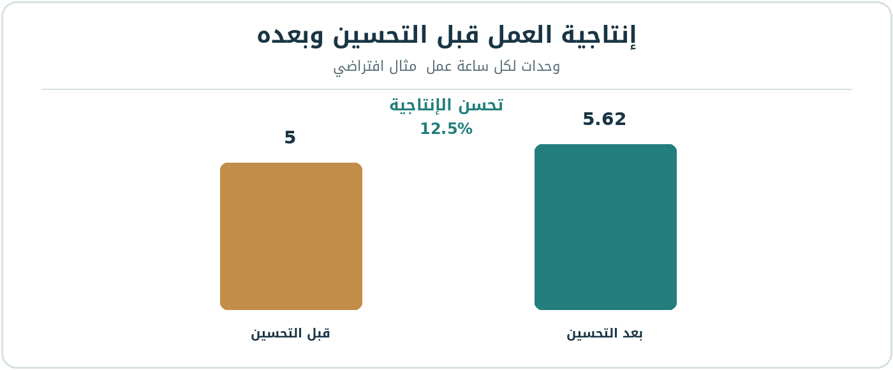
شكل 8: إنتاجية ساعة العمل في مثال تعليمي قبل التحسين وبعده
4.5 الكفاءة واستغلال الموارد
ليس من الضروري أن تعمل الآلة طوال الوقت حتى يكون المصنع جيد الإدارة؛ فقد لا يوجد طلب على إنتاج إضافي، وربما يسبب التشغيل غير الضروري مخزونًا وتكلفة. معدل الاستغلال (Utilization) هو نسبة استخدام المورد إلى وقته أو قدرته المتاحة وفق تعريف محدد.
مثال 4.2
يراجع مهندس صناعي سجل تشغيل الآلة.
آلة متاحة 8 ساعات وتعمل فعليًا 6 ساعات: الاستغلال =. يمكن أن يعني ذلك أعطالًا، أو قد يكون توقفًا مخططًا بسبب انخفاض الطلب. لذا لا يكفي المؤشر دون تفسير.
OEE الفاعلية الكلية للمعدات، وA التوافر، وP الأداء، وQ حصة المنتج الجيد. تدخل النسب كسورًا عشرية قبل تحويل الناتج إلى نسبة مئوية.
تحقق المعدة توافرًا قدره 90%، وأداءً قدره 80%، وحصة منتج جيد تبلغ 95%. تُفسر النتيجة وفق نوع المعدة وكيفية تعريف الوقت والكمية [2].
4.6 الوقت في المصنع
يقول المدير أحيانًا إن المنتج يصنع في خمس دقائق، ويقول الزبون إنه انتظره خمسة أيام؛ ويمكن أن يكون الاثنان محقين لأنهما يقيسان زمنين مختلفين.
زمن التشغيل (Processing Time): الوقت الذي ينفذ خلاله نشاط فعلي. زمن الدورة (Cycle Time): الزمن اللازم لدورة عملية معينة أو الفاصل بين وحدتين تامتين في حالة التشغيل المستقر، ويجب تحديد التعريف المستخدم. زمن الإنجاز (Lead Time): الزمن من بداية محددة إلى نهاية محددة، ويشمل التشغيل والانتظار والنقل ضمن حدود القياس. زمن التكت (Takt Time): الوقت الصافي المتاح للإنتاج مقسومًا على عدد الوحدات المطلوبة خلال الفترة نفسها.
مثال 4.3: زمن التكت
تحسب مهندسة صناعية الإيقاع اللازم لمواكبة الطلب.
Ctakt زمن التكت، وTavailable الوقت الصافي المتاح خلال الفترة، وD الطلب خلالها؛ ووحدته زمن لكل وحدة مطلوبة.
الوقت الصافي المتاح 420 دقيقة في اليوم، والطلب 140 عبوة في اليوم.
أي 3 دقائق لكل عبوة. يقيس زمن التكت الإيقاع المطلوب لمواكبة الطلب. ويتوقف توزيع هذا الإيقاع على الآلات على عدد المراحل وإمكان تشغيل آلات بالتوازي.
جدول 7: المقاييس التشغيلية والأسئلة التي تجيب عنها
|
المصطلح |
السؤال الذي يجيب عنه |
|---|---|
|
Processing Time |
كم تستغرق العملية الفعلية؟ |
|
Cycle Time |
ما زمن الدورة أو الفاصل بين المخرجات؟ |
|
Lead Time |
كم مر من بداية الطلب حتى اكتماله؟ |
|
Takt Time |
ما الإيقاع المطلوب لمواكبة الطلب؟ |
4.7 من أين يأتي الهدر؟
ليس الهدر دائمًا مادة تالفة في صندوق النفايات؛ فقد يكون وقت انتظار أو حركة زائدة أو منتجًا غير مطلوب أو خطأ يحتاج إلى إصلاح. تستخدم أدبيات التصنيع الرشيق (Lean Manufacturing) سبعة أشكال تقليدية للهدر، ويضاف إليها في كثير من التطبيقات الحديثة شكل ثامن متعلق بإهدار قدرات البشر.
جدول 8: أنواع الهدر وأمثلتها التشغيلية
|
نوع الهدر |
English Term |
مثال مبسط |
|---|---|---|
|
الإنتاج الزائد |
Overproduction |
إنتاج ما يفوق الطلب الملائم |
|
الانتظار |
Waiting |
توقف المواد قبل بدء العملية التالية |
|
النقل الزائد |
Transportation |
نقل المواد لمسافات غير لازمة |
|
المعالجة الزائدة |
Overprocessing |
خطوات تتجاوز متطلبات المنتج |
|
المخزون الزائد |
Excess Inventory |
مواد تتجاوز الحاجة الملائمة |
|
الحركة الزائدة |
Unnecessary Motion |
البحث المتكرر عن الأدوات |
|
العيوب |
Defects |
منتجات تتطلب إصلاحًا أو استبعادًا |
|
إهدار القدرات |
Underutilized Talent |
تجاهل معرفة العاملين ومقترحاتهم |
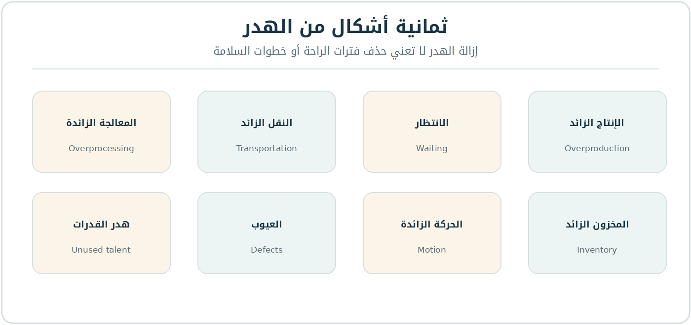
شكل 9: الأنواع الثمانية الشائعة للهدر
4.8 خريطة تدفق القيمة
تصور خريطة تدفق القيمة (VSM) حركة المواد والمعلومات والتشغيل والانتظار والمخزون، لتقليل زمن الإنجاز مع بقاء متطلبات الجودة والسلامة.
مثال 4.4: ورشة أثاث
يسجل مهندس صناعي زمن التشغيل والانتظار في الورشة.
جدول 9: أزمنة التشغيل والانتظار
|
المرحلة |
زمن التشغيل |
زمن الانتظار قبل المرحلة |
|---|---|---|
|
القص |
10 دقائق |
30 دقيقة |
|
التجميع |
15 دقيقة |
40 دقيقة |
|
التغليف |
5 دقائق |
20 دقيقة |
|
المجموع |
30 دقيقة |
90 دقيقة |
PCE كفاءة دورة العملية، وTvalue زمن الأنشطة المضيفة للقيمة، وTlead زمن الإنجاز الكلي؛ ويستخدم الزمنان الوحدة نفسها.
إذا استغرق التشغيل 30 دقيقة والانتظار 90 دقيقة، بلغ زمن الإنجاز 120 دقيقة. يفترض المثال أن زمن التشغيل كله مضيف للقيمة عند حساب كفاءة دورة العملية (Process Cycle Efficiency).
إذا خفّضت إعادة ترتيب العمل الانتظار إلى دقيقة، يصبح زمن الإنجاز الجديد = دقيقة؛ أي انخفاض 45.8% تقريبًا. وتصبح نسبة زمن إضافة القيمة = تقريبًا. لكن هذا لا يعني أن الإنتاج الفعلي سيزيد بالنسبة نفسها؛ إذ يتوقف على القدرة والطلب والموارد.
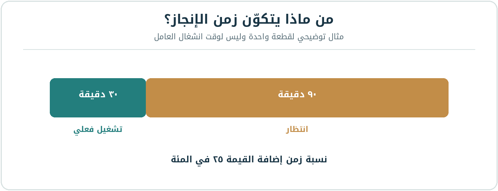
شكل 10: توزيع زمن إنجاز القطعة بين التشغيل والانتظار
نقطة الاختناق: عندما يحدد الأبطأ سرعة الجميع. في خط متسلسل طاقات تحضيره وتعبئته وتغليفه 60 و40 و50 وحدة/ساعة، تكون قدرته النظرية 40 دون أعطال. لا ترفع زيادة التحضير إلى 90 الإنتاج؛ وإذا ارتفعت التعبئة إلى 55 انتقل القيد إلى التغليف عند 50. يُعاد القياس بعد كل تغيير.
دراسة العمل: نراقب الطريقة قبل أن نطلب السرعة. دراسة العمل (Work Study) تجمع دراسة الطريقة (Method Study) وقياس العمل (Work Measurement) لفهم كيفية تنفيذ المهمة ووقتها ومواردها. وربما يكون بطء التنفيذ مرتبطًا بتوزيع الأدوات أو تكرار المناولة أو أوقات البحث لا باجتهاد العامل.
نقيس الطريقة والأزمنة في شروط معروفة، ونناقش تحسينها مع العاملين قبل تثبيت معيار للأداء.
4.8.1 تطبيق موثق لخريطة تدفق القيمة في تجميع محاور السيارات
في حالة صناعية منشورة، رُسم تدفق محاور السيارات من المورد إلى الزبون باستخدام بيانات ستة أشهر. شمل المسار التجميع الأولي، وتجميع LPH، والكابلات، وعمود الاتزان، والحامل المصبوب، والشد النهائي. أظهرت خريطة الوضع الحالي انتقالات وانتظارًا ومخزونًا يستحق المراجعة [4، الشكلان 2 و3].
جمع التصميم المحسّن تجميع LPH والكابلات في خطوة واحدة، وعدّل مناولة المواد. تلخص المقارنة أدناه القيم التي أوردتها الدراسة. ينبغي التحقق ميدانيًا من أثر التغيير في الجودة والسلامة قبل نقله إلى مصنع آخر؛ فالخريطة تربط القرار بتدفق محدد، ولا تقدم نسبة تحسن مضمونة.
جدول 10: مقارنة الوضعين في حالة VSM المنشورة
|
المؤشر |
الوضع الحالي |
الوضع المحسّن |
|---|---|---|
|
زمن الإنجاز من المورد إلى الزبون |
89.50 ساعة |
50.55 ساعة |
|
زمن تجميع LPH والكابلات |
572 دقيقة |
320 دقيقة بعد الدمج |
|
معالجة حركة المواد |
نقل بالرافعات الشوكية |
مركبات موجهة آليًا وعربات للمناولة |
المصدر: [4، ص. 851]. لا يُخلط زمن الإنجاز الكلي بزمن تشغيل خطوة واحدة، ولا يُحسب زمن إضافة القيمة من الفرق بينهما وحده.
4.9 موازنة خط الإنتاج
توزع موازنة الخط المهام على محطات بحيث لا يتجاوز حمل كل محطة زمن الدورة المستهدف وتُحترم علاقات الأسبقية. تقترح مهندسة صناعية تدير الإنتاج تلبية طلب 240 وحدة خلال 480 دقيقة صافية؛ فيكون زمن التكت دقيقتين للوحدة. سنستخدمه زمن دورة مستهدفًا، ثم نختبر إمكان التنفيذ [1، تصميم العمل والقياس].
Nmin الحد الأدنى النظري للمحطات، وti زمن المهمة i، وm عدد المهام، وC زمن الدورة المستهدف. يدل القوس على التقريب إلى أعلى.
تنفذ المهمة T1 في دقيقة، ثم تتاح T2 ومدتها 1.5 دقيقة وT3 ومدتها نصف دقيقة. بعدهما تُنفذ T4 في دقيقة ثم T5 في دقيقة. مجموع أزمنة المهام 5 دقائق. ينبغي اختبار توزيع يحترم الأسبقية.
η كفاءة موازنة الخط، وti زمن المهمة، وm عدد المهام، وN عدد المحطات الفعلي، وC زمن الدورة المستهدف.
تنفذ المحطة الأولى T1 في دقيقة، والثانية T2 ثم T3 في دقيقتين، والثالثة T4 ثم T5 في دقيقتين. يبقى في المحطة الأولى دقيقة خمول في كل دورة. يمكن مراجعة توزيع العمل أو تصميم أداة مع مراعاة فترات الراحة واشتراطات السلامة.
4.10 تخطيط المنشآت وتقليل المناولة
يحدد تخطيط المنشأة مواقع الأقسام ومسارات المواد والأشخاص. يناسب التخطيط الوظيفي تنوع العمليات، ويخدم التخطيط حسب المنتج تدفقًا متكررًا، وتجمع الخلية عائلة منتجات متقاربة. أما المنتج الكبير الثابت فتنقل الموارد إليه. لا يحسم الاختيار طول المسار وحده؛ فالفصل الصحي والتهوية ومخارج الطوارئ ومساحات الصيانة قيود تصميم.
LD مؤشر الحمولة والمسافة، وfij تدفق الحمولات من الموقع i إلى j، وdij مسافة المسار بينهما؛ وتحدد الفترة ووحدة المسافة.
تنتقل يوميًا 20 حمولة من الاستلام A إلى القص B، و15 من B إلى التجميع C، و10 من C إلى الشحن D. مسافات المسارات الآمنة 12 و10 و8 أمتار في التخطيط الحالي، و6 و8 و5 أمتار في البديل. وحدة المؤشر حمولة·متر/يوم.
ترسم المهندسة الصناعية البديل على مخطط بمقياس رسم وتختبر انعطاف العربة وتعارض الممرات ومناطق التخزين المؤقت. يمثل الشكل التسلسل المقترح، ولا يعوض مخططًا معماريًا أو موافقات السلامة. وتُقاس المسافات على المسار الممكن، لا بخط مستقيم يخترق المعدات.
جدول 11: مقارنة بديلين لتخطيط تدفق المنشأة
|
الترتيب |
تسلسل المحطات |
مسافات التدفقات (من A إلى B، ثم B إلى C، ثم C إلى D) |
|---|---|---|
|
الحالي |
A ثم C ثم B ثم D |
12، 10، 8 م على مسار التدفق |
|
المقترح |
A ثم B ثم C ثم D |
6، 8، 5 م على مسار التدفق |
4.11 الصيانة والتوافر
تستجيب الصيانة التصحيحية للعطل، وتنفذ الوقائية تدخلات مجدولة، وتستخدم الصيانة حسب الحالة قراءات مثل الاهتزاز والحرارة لتحديد التدخل. تختار مهندسة صناعية مسؤولة عن الصيانة السياسة بحسب أثر الفشل وإمكان اكتشافه والموارد، وتفصل وقت الإصلاح عن انتظار قطعة الغيار وعن توقف الكهرباء.
MTBF متوسط زمن التشغيل بين الأعطال، وMTTR متوسط الإصلاح، وTup مجموع التشغيل، وTrepair مجموع الإصلاح، وNf عدد الأعطال، وNr عدد الإصلاحات، وA التوافر.
رُصدت 120 ساعة تشغيل وأربعة أعطال أُصلحت جميعها في ست ساعات إجمالًا. نحسب التوافر بافتراض تناوب التشغيل والإصلاح فقط. تُستبعد من المقام التوقفات المخططة وتأخيرات الإمداد وفق هذا التعريف.
تسجل المهندسة الصناعية هوية المعدة والعطل وبداية التوقف ونهاية الإصلاح ووقت الاستعادة الفعلية، ثم تحدد قطعة حرجة وموعد تحقق. قياس الاعتمادية يحتاج إلى فترة وتعريف فشل واضحين؛ ومتوسط 30 ساعة من أربع حالات لا يضمن 30 ساعة تشغيل قبل كل عطل.
4.12 الوقت الضائع ليس دائمًا خطأ العامل
قد يعرف العامل متى تتأخر المواد، وأي الآلات تحتاج إلى ضبط متكرر، وأين تتكدس القطع؛ لكنه يمكن ألا يجد من يسأله. ولهذا تشمل مشاركة العاملين (Employee Involvement) الاستفادة من معرفتهم في وصف المشكلة واختيار البدائل. ولا ينبغي استخدام دراسة الزمن للضغط عليهم أو لإلغاء الراحة واحتياطات السلامة. وربما يكون تقليل الحركة والرفع غير الضروريين أكثر فائدة للإنسان والإنتاج من فرض سرعة أعلى. لا تكون العملية أفضل حقًا إذا أصبحت أسرع على حساب الإنسان الذي يؤديها.
4.13 مثال تعليمي في مخبز
يعمل في مخبز 4 عمال، يعمل كل منهم 7 ساعات فعلية يوميًا. خلال يوم أنتجوا 1,120 رغيفًا، منها 70 غير مطابقة.
إجمالي ساعات العمل = ساعة.
الإنتاجية الإجمالية = رغيفًا/ساعة عمل.
عدد الأرغفة الجيدة = رغيفًا.
إنتاجية المنتجات الجيدة = رغيفًا جيدًا/ساعة عمل.
نسبة المطابقة =.
إذا خفّض توحيد إعدادات مرحلة معينة العيوب إلى 28 رغيفًا مع ثبات إجمالي الإنتاج والعمل، يصبح الإنتاج الجيد 1,092 رغيفًا، وإنتاجيته 39 رغيفًا جيدًا/ساعة؛ أي تحسن 4%، ونسبة مطابقة جديدة 97.5%. لم تزد كمية الإنتاج الإجمالية، لكن زاد الإنتاج الجيد. ويجب تقييم تكلفة الإجراء الجديد واستمرار أثره قبل الحكم النهائي.
كيف يبدأ مشروع تحسين إنتاجية؟ ابدأ بخريطة تدفق وسجل زمن، وحدد القيد، ثم اختبر تغييرًا واحدًا وتابع المنتج الجيد والسلامة وزمن الإنجاز.
4.13.1 مختبر دراسة الزمن: خمس ملاحظات تكفي لتعلّم الطريقة، لا لاعتماد معيار نهائي
في ورشة تعبئة، قاس الطالب زمن عملية واحدة بالثواني: 44، 48، 46، 42، 45. المتوسط الحسابي = ثانية. إذا افترضنا لأغراض التدريب أن تقييم سرعة الأداء 100%، يصبح الزمن الطبيعي (Normal Time) = ثانية.
tstd الزمن المعياري، وtnormal الزمن الطبيعي، وa نسبة السماحات من الزمن المعياري الكلي، وتدخل كسرًا عشريًا.
تبلغ السماحات في المثال 10% من الزمن المعياري الكلي. هذا تمرين لحساب الزمن المعياري (Standard Time). اعتماد معيار للعمل يتطلب مشاهدات إضافية وشروط قياس متفقًا عليها وتقديرًا للسماحات.
4.13.2 معاينة العمل وقانون ليتل
في معاينة العمل نسجل حالة النشاط في أوقات عشوائية موزعة على الفترة. إذا سجلت 60 مشاهدة انتظار من 200 مشاهدة، فالنسبة المقدرة 30%، والخطأ المعياري التقريبي أي 3.24 نقاط مئوية. وتقريب 95% يعطي 23.65%–36.35% بافتراض استقلال المشاهدات. لا تقيس هذه النسبة سرعة العامل؛ وتُراجع الوردية وأسباب الانتظار قبل استخدامها.
L متوسط عدد الوحدات في النظام، وλ معدل التدفق، وW متوسط المكوث. تشير اللاحقة q إلى صف الانتظار؛ وتتسق وحدات المعدل والزمن.
في نظام مستقر يستقبل 12 طلبًا في الساعة ويمكث الطلب فيه ربع ساعة في المتوسط، يعطينا قانون ليتل متوسط عدد الطلبات الموجودة داخل حدود النظام [3].
إلى الفصل التالي: احتفظ بخط أساس التدفق والإنتاجية؛ ثم افحص في الفصل الخامس هل بقيت الجودة ثابتة.
4.14 خلاصة الفصل
تقارن الإنتاجية المخرجات بالمدخلات، بينما تكشف مؤشرات الوقت وOEE والموازنة والتوافر مصادر التحسين. تُربط النتائج بظروف التشغيل والطلب والجودة.
4.15 أسئلة المراجعة
1. كيف تميز زمن التشغيل عن زمن الإنجاز وزمن التكت؟
2. لماذا لا تعني زيادة استغلال كل آلة زيادة إنتاج النظام؟
3. كيف تراعي الأسبقية عند موازنة خط إنتاج؟
4. كيف تختار بين تغيير التخطيط وتحسين الصيانة أو طريقة العمل؟
4.16 مسائل حسابية مختارة
حل المسائل مع توضيح الوحدات والفروض، ثم قارن خطواتك بحلول ملحق أ.
ح 4.1: وقت التشغيل الصافي 420 دقيقة والطلب 140 وحدة/يوم. أزمنة خمس مهام متسلسلة 1،2،2،1،2 دقيقة. احسب التكت والحد الأدنى للمحطات، واقترح تجميعًا يحترم التسلسل واحسب كفاءته.
ح 4.2: التوافر 90% والأداء 95% وحصة المنتج الجيد 98%. احسب OEE. إذا تحسن الأداء إلى 98% وحده، فكم نقطة مئوية تتحسن النتيجة؟
ح 4.3: متوسط الزمن بين الأعطال 120 ساعة ومتوسط الإصلاح 8 ساعات. احسب التوافر طويل الأجل في النموذج المبسط. ثم احسبه إذا انخفض الإصلاح إلى 4 ساعات.
ح 4.4: خمس ملاحظات زمن بالثواني 40،42،38،41،39. تقييم الأداء 110% والسماحات 12% من الزمن المعياري الكلي. احسب الزمن الطبيعي والمعياري.
4.17 مراجع الفصل 4
[1] Institute of Industrial and Systems Engineers, Industrial and Systems Engineering Body of Knowledge (ISE BoK), rev. ed., 2026. [Online]. Available: https://www.iise.org/uploadedFiles/IIE/Technical_Resources/Publications/ISE-BoK-Full-v1.pdf. areas 1, 4, 7.
[2] Y.-H. Hung, L. Y. O. Li, and T. C. E. Cheng, “Uncovering hidden capacity in overall equipment effectiveness management,” International Journal of Production Economics, vol. 248, Art. no. 108494, 2022, doi: 10.1016/j.ijpe.2022.108494.
[3] J. D. C. Little, “A proof for the queuing formula: L = λW,” Operations Research, vol. 9, no. 3, pp. 383–387, 1961, doi: 10.1287/opre.9.3.383.
[4] Ü. Taş, “Improving lead time through lean manufacturing,” Black Sea Journal of Engineering and Science, vol. 7, no. 5, pp. 849–853, 2024, doi: 10.34248/bsengineering.1489166.
[5] W. C. Turner, J. H. Mize, K. E. Case, and J. W. Nazemetz, Introduction to Industrial and Systems Engineering, 3rd ed. Englewood Cliffs, NJ, USA: Prentice Hall, 1993. Further reading: 4–7.
الفصل الخامس
الجودة وضبط العمليات
بنهاية الفصل، يفرق القارئ بين المطابقة واستقرار العملية، ويقرأ مخطط ضبط، ويحسب مؤشرات جودة وقدرة، ويفسر تجربة عوامل دون تجاوز ما تسمح به بياناتها.
خرجت الخزانة صاحبة البطاقة الحمراء في وقت أقصر، ثم عاد باب منها لا ينغلق كما ينبغي. لم يكف تحسن زمن التدفق الذي قاسه الفريق في الفصل السابق. وضع المهندس الصناعي بطاقة العيب بجوار رقم الدفعة، وسأل عن أبعاد القطعة ودفعة المادة وإعداد الآلة بدل الاكتفاء بطلب مزيد من الانتباه.
بدأ الفريق يميز بين عيب عابر ونمط متكرر، وبين استقرار العملية ومطابقة منتجها. وعندما ربط العيوب ببيانات التوريد، اتضح أن جودة الخط لا تنتهي عند بابه: المادة الصحيحة يجب أن تصل في الوقت المناسب. من هنا يبدأ قرار المخزون وسلسلة التوريد.
5.1 ما الجودة؟
يمكن فهم الجودة، في مستوى تمهيدي، بأنها مدى قدرة المنتج أو الخدمة على تحقيق المتطلبات المناسبة للاستخدام المتوقع. وهي لا تعني بالضرورة الفخامة أو السعر الأعلى؛ فقد يكون منتج بسيط جيد الجودة إذا حقق المواصفات المطلوبة بصورة ثابتة وآمنة.
وربما تختلف متطلبات الجودة بين المجالات. ففي الأثاث يمكن أن تشمل الأبعاد والمتانة والتشطيب، وفي الأغذية السلامة والطعم والصلاحية، وفي المستشفى السلامة ودقة المعلومات وجودة الخدمة، وفي الجامعة صحة التسجيل ووضوح الإجراءات.
5.1.1 منظور الزبون ومنظور المواصفات
جودة التصميم (Design Quality) تعني اختيار الخصائص المناسبة لما يحتاجه المستفيد. أما جودة المطابقة (Conformance Quality) فتعني مدى مطابقة المنتج المنفذ للمواصفات المحددة.
فإذا صُمم كرسي لا يناسب الاستخدام المطلوب، فلن تصبح جودته عالية لمجرد أن المصنع أنتج جميع نسخه بالمقاسات نفسها. وإذا كان التصميم مناسبًا لكن معظم القطع لا تطابقه، فهناك مشكلة في جودة المطابقة.
ويجب كذلك التمييز بين رغبة الزبون وأي متطلبات إلزامية للسلامة أو القانون أو المواصفات الفنية؛ فلا يجوز إلغاء المتطلبات الضرورية لمجرد أن الزبون لا يطلبها صراحة.
5.2 ضبط الجودة وضمان الجودة وإدارتها
ضبط الجودة (Quality Control – QC) يركز على فحص ومراقبة خصائص المنتج أو العملية واكتشاف عدم المطابقة والتعامل معها. ضمان الجودة (Quality Assurance – QA) يركز على الثقة في أن النظام والإجراءات قادران على تحقيق متطلبات الجودة بصورة منتظمة. إدارة الجودة (Quality Management – QM) تشمل السياسات والأهداف والمسؤوليات والموارد والمراقبة والتحسين.
فالفحص النهائي لقياسات قطعة ألمنيوم مثال على ضبط الجودة، بينما توحيد إعدادات الآلة ومعايرة أدوات القياس وتدريب العاملين أمثلة على أنشطة تدعم ضمان الجودة. ولا يغني أحدهما عن الآخر في كل حالة.
5.2.1 عدم المطابقة والعيب
عدم المطابقة (Nonconformity) عدم استيفاء متطلب محدد. أما العيب (Defect) فهو مشكلة قد تؤثر في الاستخدام المقصود أو المقبول للمنتج. ولا ينبغي استخدامهما باعتبارهما مترادفين مطلقين في جميع التطبيقات الفنية.
يمكن أن توجد أكثر من فرصة لظهور عيب في الوحدة الواحدة، ولذلك تختلف «نسبة الوحدات غير المطابقة» عن «عدد العيوب لكل وحدة». يجب أن يحدد المهندس ماذا يقيس قبل إجراء الحساب.
5.3 مثال تطبيقي: ما نسبة المنتجات الجيدة؟
أنتج مصنعٌ في هذا المثال 800 عبوة خلال يوم، ووجد أن 32 عبوة غير مطابقة لمتطلبات الفحص المحددة. عدد العبوات المطابقة = عبوة.
Y نسبة المطابقة، وn إجمالي الوحدات المفحوصة، وd عدد الوحدات غير المطابقة؛ ومن ثم n−d عدد الوحدات المطابقة.
p نسبة عدم المطابقة ككسر عشري (0.04 تعني 4%)، وd عدد غير المطابق، وn إجمالي المفحوص. لا تُخلط هذه النسبة بعدد العيوب في الوحدة.
وإذا انخفضت العبوات غير المطابقة في يوم لاحق إلى 16 من أصل 800 عبوة، تصبح نسبة المطابقة =.
الفرق = نقطتان مئويتان، وليس «زيادة 2%» بالمعنى النسبي الدقيق. أما الزيادة النسبية في نسبة المطابقة فتعتمد على مقارنة 98 بنسبة 96 وتساوي نحو 2.08%.
هذه أرقام للتوضيح؛ ولا يمكن استنتاج سبب التحسن من مقارنة يومين دون بيانات عن ظروف الإنتاج.
5.4 إدارة الجودة الشاملة
تقوم إدارة الجودة الشاملة (TQM) على أن الجودة مسؤولية المؤسسة بأكملها، لا مسؤولية موظف الفحص وحده. فالمشتريات تؤثر في المواد، والصيانة تؤثر في الآلات، والإنتاج يؤثر في التنفيذ، والتسويق يؤثر في فهم متطلبات الزبون، والإدارة تؤثر في الموارد والأهداف والحوافز.
ومن المبادئ المرتبطة بإدارة الجودة الشاملة التركيز على الزبون (Customer Focus)، والتحسين المستمر (Continuous Improvement)، ومشاركة العاملين (Employee Involvement)، والقرارات المبنية على الأدلة (Evidence-Based Decisions)، والنظر إلى العمليات بوصفها نظامًا مترابطًا (Process Approach).
5.5 تكلفة الجودة: هل ندفع لمنع العيب أم لإصلاحه؟
يرى بعض المديرين أن تدريب العاملين أو فحص المواد أو معايرة الأجهزة «تكلفة إضافية». لكن تقليل هذه الأنشطة دون دراسة ينقل التكلفة غالبًا من الوقاية إلى الفشل وإعادة العمل وشكاوى الزبائن.
تُقسم تكاليف الجودة (Cost of Quality – COQ) تعليميًا إلى أربع فئات شائعة:
جدول 12: مكونات تكلفة الجودة
|
الفئة |
English Term |
مثال |
|---|---|---|
|
الوقاية |
Prevention Costs |
تدريب، تصميم إجراءات، صيانة وقائية مرتبطة بالجودة |
|
التقييم |
Appraisal Costs |
فحص واختبار ومعايرة أدوات قياس |
|
الفشل الداخلي |
Internal Failure Costs |
خردة وإعادة تصنيع قبل التسليم |
|
الفشل الخارجي |
External Failure Costs |
مرتجعات وضمان وشكاوى بعد التسليم |
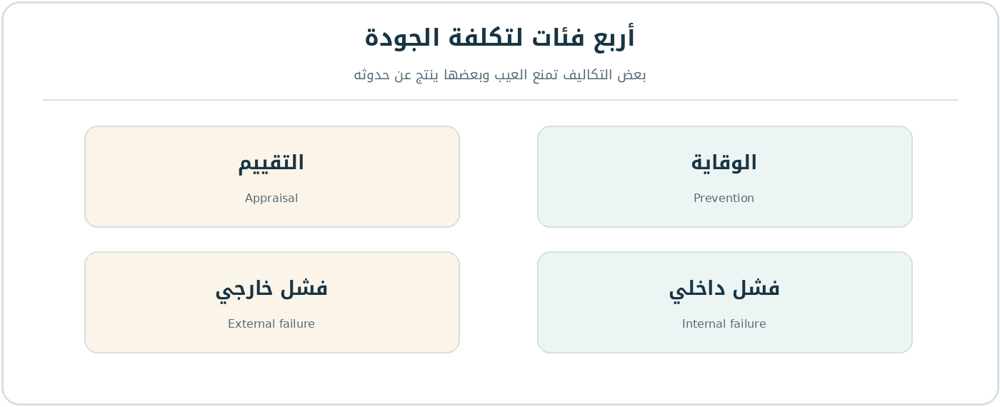
شكل 11: أنواع تكاليف الجودة الأربعة
مثال 5.1: تكلفة الجودة الشهرية
تصنّف مهندسة صناعية التكاليف الشهرية للجودة.
سجل مصنعٌ في المثال التالي في شهر معين: وقاية 2,000 دينار، تقييم 1,500 دينار، فشل داخلي 4,000 دينار، وفشل خارجي 2,500 دينار.
COQ إجمالي تكاليف الجودة؛ وCp الوقاية، وCa التقييم، وCif الفشل الداخلي، وCef الفشل الخارجي. تقاس جميعها بالدينار للفترة نفسها.
إجمالي تكلفة المطابقة (Cost of Conformance) = الوقاية + التقييم = دينار، وإجمالي تكلفة عدم المطابقة (Cost of Nonconformance) = الفشل الداخلي + الفشل الخارجي = دينار.
إذا اقترحت الإدارة تدريبًا إضافيًا بتكلفة 1,000 دينار، فلا يكفي أن نقول إنه «مفيد». يجب أن ندرس هل سيخفض تكاليف الفشل بدرجة أكبر، مع المحافظة على الجودة والسلامة والموارد.
5.6 مخطط باريتو: من أين نبدأ؟
عندما تظهر أنواع كثيرة من العيوب، قد تحاول الإدارة معالجة كل شيء في وقت واحد. لكن البيانات تشير غالبًا إلى أن عددًا محدودًا من الأسباب يمثل الجزء الأكبر من الحالات المسجلة.
يساعد مخطط باريتو (Pareto Chart) على ترتيب فئات المشكلات تنازليًا بحسب تكرارها أو تكلفتها، ثم عرض التراكم النسبي. ولا ينبغي فهم قاعدة 80/20 بوصفها قانونًا رياضيًا يجب أن يظهر بالنسبة نفسها في كل بيانات.
مثال 5.2
يتتبع مهندس صناعي حالات عدم المطابقة.
سجل مصنع في المثال 100 حالة عيب خلال أسبوع:
جدول 13: بيانات العيوب لبناء مخطط باريتو
|
نوع العيب |
العدد |
النسبة |
النسبة التراكمية |
|---|---|---|---|
|
تشطيب غير مناسب |
45 |
45% |
45% |
|
أبعاد غير دقيقة |
30 |
30% |
75% |
|
خدوش |
15 |
15% |
90% |
|
تغليف غير مناسب |
10 |
10% |
100% |
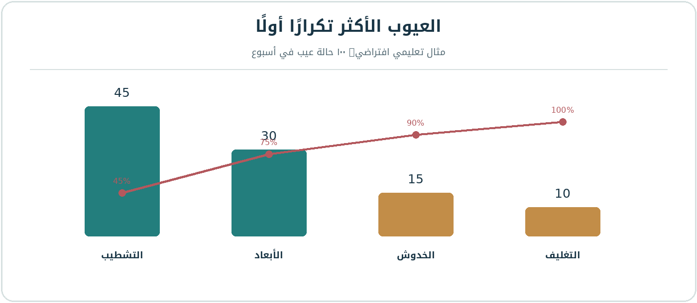
شكل 12: مخطط باريتو لعيوب افتراضية، العدد والتراكم
تُظهر البيانات أن الفئتين الأوليين تمثلان 75% من الحالات. لذلك يمكن أن يكون من المعقول البدء بتحليل أسبابهما، مع عدم إهمال عيوب أقل تكرارًا لكنها أخطر على سلامة المستخدم.
5.7 مخطط السبب والنتيجة
إذا اكتشفنا أن «الأبعاد غير الدقيقة» مشكلة متكررة، فهل تكون الآلة هي السبب بالتأكيد؟ ربما، لكن قد تكون المواد أو أداة القياس أو طريقة الضبط أو تغير ظروف التشغيل جزءًا من المشكلة.
يساعد مخطط السبب والنتيجة (Fishbone Diagram أو Ishikawa Diagram) على تنظيم الفرضيات في فئات مثل الإنسان (People)، والآلة (Machine)، والمواد (Materials)، والطريقة (Methods)، والقياس (Measurement)، والبيئة (Environment).
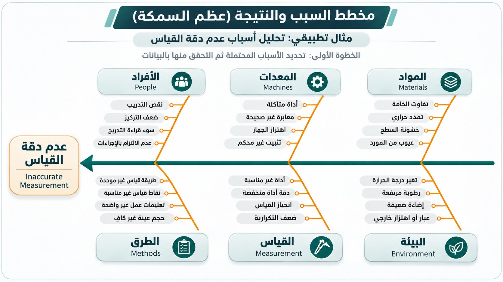
شكل 13: مخطط سبب ونتيجة لعدم دقة الأبعاد، أسباب افتراضية
هذا المخطط لا يثبت أن الأسباب المذكورة صحيحة. إنه وسيلة لإعداد قائمة فرضيات تُختبر بالبيانات والملاحظة. ومن الخطأ تحويل عصف ذهني إلى حكم نهائي على العاملين دون دليل.
5.8 سيجما ستة ومنهجية DMAIC: مدخل تمهيدي
منهجية التعريف والقياس والتحليل والتحسين والضبط (DMAIC) إطار منظم لمشروعات التحسين.
تستخدم سيجما ستة (Six Sigma) مجموعة من الأساليب الإحصائية والإدارية لتقليل التباين والعيوب وتحسين قدرة العمليات. ولا يُطلب من طالب السنة الأولى هنا حساب مستويات سيجما المتقدمة، وإنما فهم منطق التحسين المنظم.
تتكون منهجية DMAIC من خمس مراحل: التعريف بالمشكلة (Define)، والقياس (Measure)، والتحليل (Analyze)، والتحسين (Improve)، والضبط أو التحكم (Control).
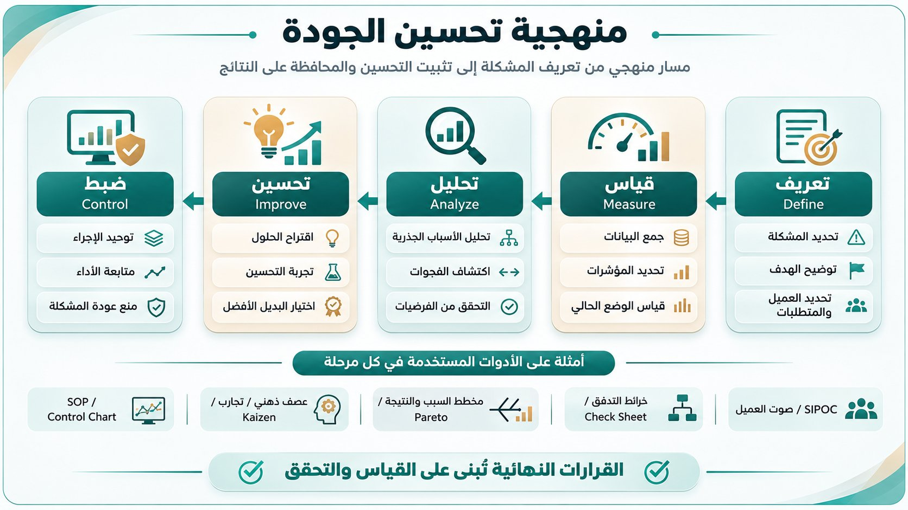
شكل 14: مراحل منهجية DMAIC للتحسين
في كل مرحلة نطرح سؤالًا: ما المشكلة؟ كيف نقيسها؟ لماذا تحدث؟ ما التعديل الذي نجربه؟ وكيف نحافظ على النتيجة ونكتشف عودة الانحراف؟
5.9 ضبط العملية إحصائيًا
ضبط العملية الإحصائي (SPC) يراقب العملية بالبيانات عبر الزمن.
يصف مخطط الضبط سلوك العملية عبر الزمن لتمييز التباين المعتاد من إشارات تستحق البحث. حدود الضبط مستخرجة من نموذج العملية، أما حدود المواصفة فيضعها التصميم أو الزبون؛ لذلك يمكن أن تكون العملية مستقرة لكنها تنتج نسبة غير مقبولة. لا نعدّل آلة بعد كل تغير عشوائي صغير.
pi نسبة غير المطابق في العينة i، وdi عددها غير المطابق، وni حجمها، وp̄ النسبة المجمعة. يمثل LCL وUCL حدي الضبط الأدنى والأعلى.
يفترض مخطط النسبة استقلال الوحدات وثبات احتمال عدم المطابقة في خط الأساس. في عينة من 100 وحدة، نستخدم نسبة مجمعة مقدارها 10% لحساب الحدين. يتغير الحدّان مع حجم العينة [2].
5.9.1 مثال تطبيقي ومخطط متابعة
من خط أساس مستقر مُفترض في التدريب قُدرت . نفحص 100 وحدة في كل فترة؛ فيكون الانحراف المعياري للنسبة 0.03، والحد الأدنى 0.01 والأعلى 0.19. في عشر فترات متتابعة كانت أعداد غير المطابق: 8، 12، 9، 11، 10، 7، 13، 9، 11، 22. تتجاوز النقطة الأخيرة 0.19، فيبحث مهندس الجودة عن تغيير في المادة أو الأداة أو طريقة القياس. لا تعيد حساب الحدود بإضافة هذه النقطة قبل التحقيق.
المخطط التعليمي يستخدم خط أساس مفترضًا لتوضيح الحساب؛ أما تأسيس حدود تشغيلية فيحتاج إلى عينات أولية كافية ومجموعات منطقية ومراجعة استقرار العملية. وجود النقاط داخل الحدود وحده لا يثبت غياب أنماط غير عشوائية. وثّق قاعدة الإشارة قبل المتابعة، ولا تستخدم مخطط p لعدد العيوب إذا كانت الوحدة الواحدة قد تحمل عدة عيوب.
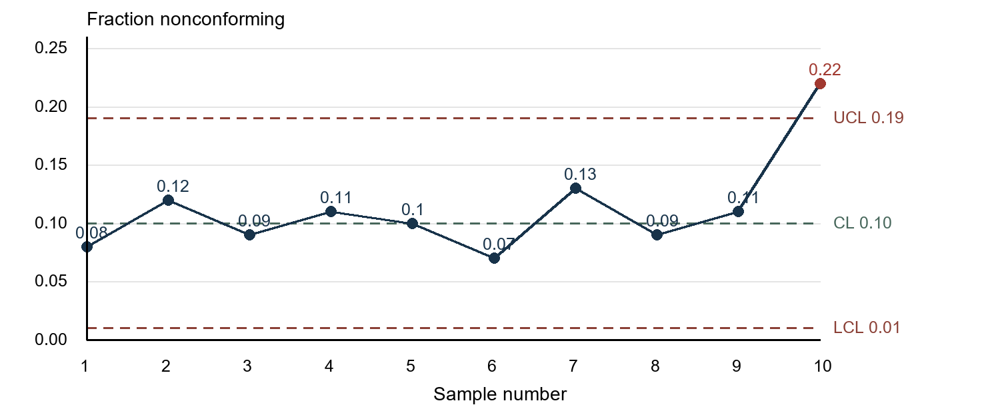
شكل 15: مخطط p التعليمي ونقطة تتجاوز حد الضبط
5.9.2 من المراقبة إلى تجربة بعاملين
بعد التحقق من القياس، تقارن مهندسة العمليات مستويين لحرارة عملية تدريبية ومستويين للسرعة، فتنتج أربع توليفات. تُجرى التجارب بترتيب عشوائي مع تكرارات مستقلة، وتثبت المادة أو تحجب آثار دفعاتها. إذا كانت متوسطات العيوب عند الحرارة المنخفضة 6 و10، وعند المرتفعة 5 و3، للسرعة المنخفضة ثم المرتفعة، فإن أثر رفع السرعة يختلف من +4 إلى −2؛ وهذه إشارة إلى تفاعل العاملين [3].
متوسط الحرارة المنخفضة 8 والمرتفعة 4، لكن المتوسط العام قد يخفي التفاعل. لا تكفي المتوسطات الأربع لتقدير خطأ التجربة أو الدلالة؛ نحتاج إلى التكرار وتحليل مناسب. تحصر التجربة ضمن حدود السلامة المعتمدة، ولا تُختبر إعدادات خطرة بحجة التعلم.
من نتائج الجودة إلى ثقافة المؤسسة. تستدام الجودة بتدريب وصلاحيات وإبلاغ واضح ومتابعة للإجراء التصحيحي؛ فلا تكفي الشعارات أو نتيجة اختبار منفردة.
5.10 نشاط حسابي شامل
تنتج ورشةٌ في هذا النشاط 1,000 قطعة شهريًا باستخدام 200 ساعة عمل، منها 80 قطعة لا تطابق المواصفات. إنتاجية الوحدات الجيدة = قطعة جيدة/ساعة.
بعد تعديل إجراءات الضبط، بقي الإنتاج الكلي وساعات العمل ثابتين، وانخفض عدد القطع غير المطابقة إلى 30. أصبحت الإنتاجية = قطعة جيدة/ساعة.
نسبة التحسن = تقريبًا. أما نسبة المطابقة فارتفعت من 92% إلى 97%، أي بمقدار 5 نقاط مئوية. لا نعرف الأثر المالي الكامل إلا بعد حساب تكلفة التحسين وتكلفة الفشل والأثر على الزبائن.
إلى الفصل التالي: احتفظ بخط أساس للجودة ومؤشر متابعة؛ ثم قارن سياسة المخزون والتوريد في الفصل السادس.
5.11 خلاصة الفصل
تربط إدارة الجودة متطلبات المنتج بمنع عدم المطابقة وقياس تكلفته. تحدد الأدوات أولويات التحقيق والتحسين، ويكشف الضبط الإحصائي إشارات تستدعي التحقق.
5.12 أسئلة المراجعة
1. ما الفرق بين ضمان الجودة وضبطها، وبين المطابقة والقدرة الإحصائية؟
2. لماذا لا تكفي حدود المواصفة بدل حدود الضبط؟
3. ماذا تفعل عند ظهور إشارة غير عشوائية في مخطط ضبط؟
4. كيف تميز أثر عامل في تجربة من أثر تغير الدفعة أو الزمن؟
5.13 مسائل حسابية مختارة
حل المسائل مع توضيح الوحدات والفروض، ثم قارن خطواتك بحلول ملحق أ.
ح 5.1: أنتجت عملية 1,000 وحدة، منها 40 غير مطابقة أول مرة. أُصلحت 25 منها بنجاح ولم يظهر رفض جديد. احسب مردود المرور الأول والمردود النهائي، وفسّر ما يخفيه المؤشر النهائي.
ح 5.2: خط أساس مستقر لنسبة غير المطابق 0.05 وحجم كل عينة 200. احسب حدود مخطط p بثلاثة انحرافات معيارية. اختبر عينتين فيهما 18 و 22 وحدة غير مطابقة، وفق تجاوز الحدود فقط.
ح 5.3: مسألة موجهة: حدا المواصفة مم، ومتوسط عملية مستقرة مم وانحرافها مم. استخدم و. احسب المؤشرين وفسّر الفرق؛ ولا تفترض معيار قبول عام.
ح 5.4: في تجربة عاملين بمستويين، كانت الاستجابات عند(أ منخفض،ب منخفض)=80،(أ مرتفع،ب منخفض)=88،(أ منخفض،ب مرتفع)=84،(أ مرتفع،ب مرتفع)=96. احسب أثري أ وب وأثر التفاعل وفق فرق متوسطي إشارات الضرب. عرّف أثر العامل بمتوسط المستوى المرتفع ناقص المنخفض؛ وللتفاعل اطرح متوسط الحالتين المختلفتين في المستوى من متوسط الحالتين المتشابهتين.
5.14 مراجع الفصل 5
[1] Institute of Industrial and Systems Engineers, Industrial and Systems Engineering Body of Knowledge (ISE BoK), rev. ed., 2026. [Online]. Available: https://www.iise.org/uploadedFiles/IIE/Technical_Resources/Publications/ISE-BoK-Full-v1.pdf. area 5.
[2] NIST/SEMATECH, “Proportions Control Charts,” e-Handbook of Statistical Methods, sec. 6.3.3.2. [Online]. Available: https://www.itl.nist.gov/div898/handbook/pmc/section3/pmc332.htm. Accessed: Nov. 5, 2026.
[3] NIST/SEMATECH, “Full Factorial Designs,” e-Handbook of Statistical Methods, sec. 5.3.3.3. [Online]. Available: https://www.itl.nist.gov/div898/handbook/pri/section3/pri333.htm. Accessed: Nov. 5, 2026.
[4] W. C. Turner, J. H. Mize, K. E. Case, and J. W. Nazemetz, Introduction to Industrial and Systems Engineering, 3rd ed. Englewood Cliffs, NJ, USA: Prentice Hall, 1993. Further reading: 8.
الفصل السادس
المخزون وسلاسل التوريد
المرحلة الثالثة بناء القرار
بنهاية الفصل، يحسب القارئ مؤشرات مخزون وكمية طلب ونقطة إعادة طلب، ويوازن بين السعر والموثوقية وخطر نفاد الصنف في سلسلة التوريد.
تتبع الفريق دفعة المادة التي ظهرت في تحليل الجودة، فوجد مفصلات مطابقة تصل متأخرة، وأخرى رخيصة تملأ رفًا ولا تصلح للطلب ذي البطاقة الحمراء. أخرج مسؤول المشتريات فاتورة تؤكد إصدار الطلب، بينما بقي عامل التجميع ينتظر. كانت جودة الصنف وموعده وكميته قرارات متداخلة.
جمعت المهندسة الصناعية الاستهلاك والمخزون والطلبات المفتوحة وموثوقية المورد في سجل واحد. لم يعد السؤال عن أرخص مفصلة، بل عن سياسة تحمي التدفق بتكلفة مقبولة. وبعد معرفة ما نطلبه ومتى، سيبقى اختيار توزيع الموارد بين الطلبات؛ وهو موضوع نماذج القرار في الفصل السابع.
6.1 ما سلسلة التوريد؟
سلسلة التوريد هي شبكة من المؤسسات والأشخاص والموارد والأنشطة التي تساهم في انتقال المواد والمعلومات والمنتجات من مصادرها إلى المستفيد النهائي. في أبسط صورها تشمل المورد (Supplier)، والمنشأة المنتجة (Manufacturer)، والموزع (Distributor)، والزبون (Customer). لكن السلسلة الحقيقية تضم عادة موردين متعددين، وناقلين، ومخازن، وجهات رقابية، ومؤسسات تمويل.
إدارة سلسلة التوريد (Supply Chain Management – SCM) هي التنسيق بين قرارات الشراء والتصنيع والنقل والمخزون وخدمة الزبائن على امتداد الشبكة. أما اللوجستيات (Logistics) فتتناول تنظيم حركة المواد والمنتجات وتخزينها وتدفق المعلومات المرتبط بها. والمشتريات (Procurement) تهتم بالحصول على المدخلات المناسبة بشروط محددة. لا تعمل هذه الوظائف منفصلة؛ فالشراء الأرخص يمكن أن يؤدي إلى تكلفة أعلى إذا كانت المواد كثيرة التأخر أو العيوب.
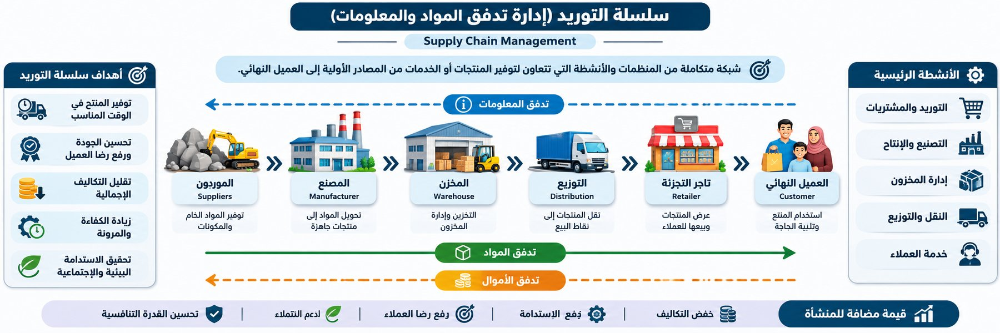
شكل 16: شبكة سلسلة توريد مبسطة، رسم تعليمي
في مصنع للأثاث، تبدأ السلسلة من مورد الأخشاب والمفصلات والدهانات، وتمر بالقص والتجميع والتغليف، وقد تنتهي في معرض أو منزل. وإذا تأخر مورد المفصلات، يمكن أن تبقى خزائن جاهزة تقريبًا دون أن تصل إلى الزبائن. هنا تتضح قيمة النظر إلى السلسلة كوحدة واحدة (End-to-End View).
6.2 ثلاث حركات في السلسلة
ليست الشاحنة وحدها ما يتحرك بين المؤسسات. هناك ثلاثة تدفقات متداخلة: تدفق المواد (Material Flow) من المورد إلى الزبون في الغالب، وتدفق المعلومات (Information Flow) في الاتجاهين، مثل الطلبات والمخزون والتوقعات، والتدفق المالي (Financial Flow) كالفواتير والمدفوعات والائتمان.
إذا غابت المعلومة الصحيحة عن الطلب، فيمكن أن يشتري المصنع أكثر مما يحتاج. وإذا تأخرت الدفعات، ربما يرفض المورد إرسال الشحنة التالية. وإذا وصلت المواد دون بيانات واضحة عن مواصفاتها، فقد تتوقف عملية الفحص. لذلك نحلل النقل مع الشراء والتمويل والجودة ضمن شبكة واحدة.
6.3 لماذا نحتفظ بالمخزون؟
المخزون هو كمية المواد أو المنتجات التي تحتفظ بها المؤسسة لاستخدامها أو بيعها مستقبلًا. يشمل مواد خام (Raw Materials)، أو منتجات تحت التشغيل (Work in Process – WIP)، أو منتجات تامة الصنع (Finished Goods)، أو قطع غيار (Spare Parts).
للمخزون منافع واضحة: تقليل توقف الإنتاج عند التأخر، وإتاحة تلبية طلب مفاجئ، والحفاظ على استمرار الخدمات. لكنه يستهلك رأس المال والمساحة، وربما يتعرض للتلف أو التقادم أو الفقد. وبذلك تواجه المؤسسة مفاضلة بين تكلفة الاحتفاظ بالمخزون (Holding Cost) وتكلفة نفاد المخزون (Stockout Cost).
6.3.1 دقة السجل وأولوية الرقابة
يبدأ ضبط المخزون بسجل صحيح لكل صنف: رمز ووحدة وموقع ورصيد وحركات استلام وصرف ومرتجع. إذا سُجل صندوق بدل قطعة، فسيفشل قرار إعادة الطلب مهما كانت معادلته دقيقة. يربط الجرد الدوري بين الرصيد المسجل والكمية الموجودة، ثم يحقق الفريق في سبب الفرق، مثل تأخر تسجيل الصرف أو خلط الوحدات أو الصنف التالف [3].
لا تتطلب جميع الأصناف مقدار الرقابة نفسه. يصنف تحليل ABC الأصناف بحسب قيمة استخدامها السنوية؛ فتحظى الفئة الأعلى قيمة بمتابعة أشد. وتراجع المنشأة أهمية الصنف للتشغيل أيضًا: مفصلة رخيصة توقف تجميع خزانة كاملة تستحق حماية خاصة، وإن لم تتصدر ترتيب القيمة. التصنيف وسيلة لتوجيه الجهد، وليس إذنًا بإهمال الأصناف منخفضة السعر [6].
6.3.2 مؤشر دوران المخزون
IT دوران المخزون السنوي، وCOGS تكلفة البضاعة المباعة خلال السنة، وĪ متوسط قيمة المخزون بالأساس المحاسبي نفسه؛ والنتيجة مرات في السنة.
تبلغ تكلفة البضاعة المباعة 600,000 دينار خلال سنة، ومتوسط قيمة المخزون 150,000 دينار. يساعد معدل الدوران في وصف سرعة تحول المخزون إلى مبيعات. ويُفسر مع متطلبات الاحتياطي وطبيعة النشاط.
6.4 نقطة إعادة الطلب
لا يستطيع صاحب المصنع انتظار نفاد المواد ليبدأ في طلبها. فالطلب يحتاج إلى زمن حتى يصل. يسمى ذلك زمن التوريد (Lead Time). وفي نموذج بسيط يفترض استهلاكًا يوميًا ثابتًا وزمن توريد معلومًا، تكون:
نقطة إعادة الطلب = الطلب اليومي × زمن التوريد.
مثال 6.1: عبوات مصنع ألبان
تراجع مهندسة صناعية توقيت شراء العبوات.
ROP نقطة إعادة الطلب، وd الطلب اليومي، وL زمن التوريد بالأيام، وSS مخزون الأمان؛ ووحدة الناتج هي وحدة الصنف.
يستهلك المصنع 80 عبوة يوميًا، وتصله الطلبية بعد ستة أيام. نفترض ثبات الاستهلاك وزمن التوريد وغياب مخزون الأمان والطلبيات المعلقة. عند بلوغ النقطة المحسوبة تُصدَر طلبية جديدة.
لكن ماذا لو تأخر المورد؟ إذا كان زمن التوريد يصل إلى 9 أيام، وأردنا في مثال تعليمي تغطية الأيام الثلاثة الإضافية، يكون مخزون الأمان (Safety Stock) = عبوة. وتصبح نقطة إعادة الطلب = عبوة. وفي التطبيق يُحسب مخزون الأمان عادة من تباين الطلب وزمن التوريد ومستوى الخدمة المطلوب، مثل SS = z × σ × √L عند ثبات زمن التوريد.
6.4.1 الرصيد الذي يطلق قرار الطلب
لا يكفي النظر إلى الموجود على الرف عندما توجد طلبيات في الطريق أو طلبات عملاء غير ملباة. يعتمد القرار على مركز المخزون: المتاح فعليًا مضافًا إليه ما طُلب ولم يصل، ومطروحًا منه ما التزمت المنشأة بتسليمه ولم تلبه. يجب تثبيت تعريف الرصيد حتى لا تُحسب الطلبية المفتوحة مرتين أو تُهمل التزامات سابقة [7].
للتوضيح، إذا كان الموجود 300 قطعة، وفي الطريق 250، والطلبات غير الملباة 100، فإن مركز المخزون 450 قطعة. عند نقطة إعادة طلب قدرها 480 يبدأ إجراء شراء جديد رغم أن موعد وصول الشحنة السابقة لم يحن. أما في المراجعة الدورية، فتُراجع الأصناف في مواعيد ثابتة وتُحدد كمية تعيد الرصيد إلى مستوى مستهدف. يختلف أفق الحماية بين السياستين؛ فلا ننقل نقطة الطلب من إحداهما إلى الأخرى بلا تعديل [4].
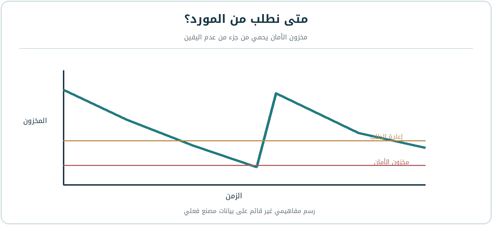
شكل 17: مفهوم نقطة إعادة الطلب ومخزون الأمان وفق مثال توضيحي
هذا حساب مبسط لا يقدر الاحتمالات؛ ففي التطبيق الحقيقي قد يتغير الطلب اليومي، وتتغير فترات التوريد، وتختلف تكلفة عدم توافر المواد. عندها نحتاج إلى بيانات عن التباين ومستوى الخدمة المطلوب.
6.5 متى يصبح الاحتياط عبئًا؟
في بعض المنشآت، يمكن أن يكون الاحتفاظ بمخزون مرتفع وسيلة لتجنب التوقف. لكنه يستهلك المال الذي تحتاجه المؤسسة للأجور والصيانة والكهرباء. ولذلك ينبغي ألا يكون السؤال «هل المخزون كثير؟» فحسب، بل «هل يغطي مخاطرة مبررة بتكلفة مقبولة؟».
مستوى الخدمة (Service Level) مفهوم يعبر عن قدرة المؤسسة على تلبية الطلب وفق تعريف محدد. أما معدل تلبية الطلب (Fill Rate) فيقيس نسبة الكمية المطلوبة التي جرى تلبيتها من المخزون المتاح، ويختلف عن احتمال عدم حدوث نفاد خلال دورة طلب. تحديد المؤشر مهم حتى لا تُستخدم الأرقام بالمعاني الخطأ.
FR معدل تلبية الطلب بالوحدات، وQimmediate الكمية المسلّمة فورًا من المخزون، وQrequested الكمية المطلوبة خلال الفترة نفسها.
طلب الزبائن 1,000 وحدة وتسلموا 930 وحدة فورًا من المخزون. ولتقييم الخدمة كاملة، نتابع أيضًا مواعيد تسليم الوحدات المتأخرة وأثرها في الزبائن.
6.6 المورد ليس السعر وحده
يمكن مقارنة الموردين وفق السعر والجودة وزمن التوريد وموثوقية المواعيد والقدرة على الاستجابة للمشكلات. قد يقدم المورد الأول سعرًا أقل، لكنه يتأخر كثيرًا؛ وربما يكون المورد الثاني أغلى لكنه أكثر انتظامًا. لا يعني ذلك أن الأغلى أفضل دائمًا؛ بل يجب جمع بيانات عن التكلفة الكلية للشراء (Total Cost of Procurement).
جدول 14: مقارنة الموردين بمعايير متعددة
|
المعيار |
المورد أ |
المورد ب |
|---|---|---|
|
سعر الوحدة بالدينار |
48 |
51 |
|
تكلفة نقل الدفعة بالدينار |
150 |
70 |
|
زمن التوريد المتوقع |
7 أيام |
4 أيام |
|
نسبة الدفعات المتأخرة |
10% |
5% |
لا يمكن إعلان الفائز اعتمادًا على الجدول وحده؛ إذ نحتاج إلى حجم الدفعة وبيانات التأخير والعيوب وتكلفة التوقف.
6.7 سلسلة التوريد في بيئة غير مستقرة
تُوثق أسباب تأخر التوريد وتكلفته وتكراره، ثم تُقارن بدائل الموردين والمخزون والنقل ضمن الموارد المتاحة.
6.7.1 تنسيق الطلبات ومنع تضخيم الإشارة
عندما يرفع متجر طلبه احتياطًا، ثم يضيف الموزع والمصنع احتياطات مستقلة، تصبح طلبيات المنبع أشد تقلبًا من مبيعات المستهلك. يسمى ذلك أثر السوط (Bullwhip Effect). تنشأ المشكلة من تفسير طلب الطرف التالي كأنه الطلب النهائي، ومن التأخير وتجميع الطلبيات وعدم وضوح المخزون [5].
يعالج الفريق ذلك بمشاركة المبيعات الفعلية والرصيد والطلبات المفتوحة، وإعلان العروض الموسمية، وتنسيق مواعيد التجديد. لا تلغي مشاركة البيانات عدم اليقين، لكنها تمنع بعض القرارات المبنية على صورة ناقصة. يراجع الفريق مع المورد تعريف التسليم في الموعد، ونسبة الدفعات المعيبة، وزمن حل المشكلة، ثم يقارنها بخدمة الزبون النهائي [5].
وتتحول هذه البيانات إلى سياسة مكتوبة لكل فئة: من يراجع الرصيد، ومتى يصدر الطلب، وما الحد الذي يستدعي التصعيد، وكيف تُقبل المادة الواردة. يختبر الفريق السياسة على أسابيع مختلفة، ويسجل طلبات الزبائن التي تأخرت فعلًا بدل الاكتفاء بمتوسط المخزون. وعند حدوث نفاد، يعود إلى السبب: خطأ السجل، أم طلب غير متوقع، أم تأخر المورد، أم رفض الجودة. ثم يغير الجزء المسؤول من السياسة، ويقارن أثره في الخدمة والمال المرتبط بالمخزون قبل تعميم التعديل على بقية الأصناف؛ ويحدد موعد المراجعة التالية ومسؤوليتها بوضوح.
تراجع المؤسسة جودة معلومات المورد ومرونته وبدائل المواد إلى جانب السعر. وتُختبر سياسة التوريد تحت تغير الطلب وزمن الوصول، دون افتراض أن الحل الأقل تكلفة في المتوسط يضمن الخدمة في كل ظرف.
اللوجستيات الإنسانية: عندما تكون الوجهة إنسانًا ينتظر، تنظم اللوجستيات الإنسانية وصول الموارد بحسب الحاجة والأولوية والوقت؛ وتُضاف العدالة وسلامة المستفيدين إلى مؤشرات التكلفة.
6.7.2 تمرين مخزون: قرار يوازن بين التكلفة والاضطراب
يستهلك مصنعٌ في هذا التمرين 12,000 قطعة سنويًا من مادة ثابتة الطلب، وتكلفة إصدار أمر الشراء 90 دينارًا، وتكلفة الاحتفاظ بالقطعة سنة واحدة 6 دنانير. باستخدام نموذج كمية الطلب الاقتصادية EOQ المبسط: D الطلب السنوي، وS تكلفة إصدار الطلبية، وH تكلفة الاحتفاظ بالوحدة سنة.
EOQ كمية الطلب الاقتصادية، وD الطلب السنوي، وS تكلفة إصدار الطلبية، وH تكلفة الاحتفاظ بوحدة واحدة سنة؛ مع افتراضات النموذج المبسط.
أي 600 قطعة لكل طلبية، وبمعدل طلبية سنويًا. النموذج يفترض طلبًا معروفًا وتوريدًا منتظمًا وعدم وجود خصومات كمية؛ لذلك لا يكفي وحده لمنشأة تعاني تأخر التوريد.
إذا كان الاستهلاك 40 قطعة يوميًا، وزمن التوريد 5 أيام، ومخزون الأمان 80 قطعة، فإن نقطة إعادة الطلب = قطعة. تأكد من توافق الوحدات والفترة الزمنية.
6.7.3 تمرين النقل: توزيع محدود الموارد
يوفر المورد «أ» 40 وحدة، والمورد «ب» 60 وحدة. وتطلب ثلاثة أسواق 30 و35 و35 وحدة. تكاليف النقل لكل وحدة موضحة في الجدول التالي.
جدول 15: مصفوفة تكاليف نقل افتراضية بالدينار لموردين وثلاثة أسواق
|
المورد / السوق |
السوق 1 |
السوق 2 |
السوق 3 |
|---|---|---|---|
|
المورد أ |
4 |
6 |
8 |
|
المورد ب |
5 |
3 |
4 |
حل ممكن: نرسل 30 من «أ» إلى السوق 1، و10 من «أ» إلى السوق 2، و25 من «ب» إلى السوق 2، و35 من «ب» إلى السوق 3. التكلفة = دينارًا. يحقق هذا الحل العرض والطلب، وهو أمثل أيضًا: نقل أي وحدة إلى الخليتين غير المستخدمتين (من «أ» إلى السوق 3، ومن «ب» إلى السوق 1) يرفع التكلفة 1 و4 دنانير للوحدة على الترتيب.
إلى الفصل التالي: احتفظ بسياسة المخزون ومؤشرات الموردين؛ ثم وزّع الموارد المحدودة بنماذج القرار في الفصل السابع.
6.8 خلاصة الفصل
يتوازن قرار المخزون بين تكلفة الاحتفاظ وخطر النفاد، ويُقارن الموردون بالجودة والوقت والتكلفة الكلية. تعتمد النماذج على تعريف الطلب والتوريد وحدود الخدمة.
6.9 أسئلة المراجعة
1. ما الفروض التي تجعل نموذج كمية الطلب الاقتصادية مناسبًا؟
2. ما الفرق بين نقطة إعادة الطلب ومخزون الأمان؟
3. كيف تقارن موردين عندما يختلف السعر والموثوقية وزمن التوريد؟
4. كيف تميّز نفاد المخزون من نقص الطاقة الإنتاجية قبل زيادة المخزون؟
6.10 مسائل حسابية مختارة
حل المسائل مع توضيح الوحدات والفروض، ثم قارن خطواتك بحلول ملحق أ.
ح 6.1: الطلب السنوي 24,000 وحدة، وتكلفة الطلبية 75 دينارًا، والاحتفاظ 4 دنانير للوحدة سنويًا. احسب EOQ والتكلفة السنوية للطلب والاحتفاظ عنده، مع افتراضات النموذج الأساسية.
ح 6.2: متوسط الاستهلاك 120 وحدة/يوم وزمن التوريد 5 أيام ومخزون الأمان 180 وحدة. احسب نقطة إعادة الطلب. ثم ادرس زيادة زمن التوريد إلى 7 أيام مع إبقاء مخزون الأمان نفسه.
ح 6.3: طلب سنوي 24,000 وحدة وتكلفة الطلبية 75 دينارًا. جميع المبالغ التالية بالدينار. البديل أ: سعر 10 ودفعة 1,000 واحتفاظ 2 للوحدة سنويًا. البديل ب: سعر 9.8 ودفعة 2,000 واحتفاظ 1.96. احسب التكلفة السنوية الكلية لكل بديل بما فيها الشراء.
6.11 مراجع الفصل 6
[1] Institute of Industrial and Systems Engineers, Industrial and Systems Engineering Body of Knowledge (ISE BoK), rev. ed., 2026. [Online]. Available: https://www.iise.org/uploadedFiles/IIE/Technical_Resources/Publications/ISE-BoK-Full-v1.pdf. area 8.
[2] W. C. Turner, J. H. Mize, K. E. Case, and J. W. Nazemetz, Introduction to Industrial and Systems Engineering, 3rd ed. Englewood Cliffs, NJ, USA: Prentice Hall, 1993. Further reading: 7, 12.
[3] Association for Supply Chain Management, “Inventory control 101.” [Online]. Available: https://www.ascm.org/topics/what-is-inventory-control/. Accessed: Nov. 7, 2026.
[4] Supply Chain Resource Cooperative, North Carolina State University, “Periodic review system: Inventory management models: A tutorial,” Jan. 28, 2011. [Online]. Available: https://scm.ncsu.edu/scm-articles/article/periodic-review-system-inventory-management-models-a-tutorial. Accessed: Nov. 7, 2026.
[5] S. Huma, “Cracking the bullwhip effect,” ASCM Insights, Aug. 13, 2025. [Online]. Available: https://www.ascm.org/ascm-insights/cracking-the-bullwhip-effect/. Accessed: Nov. 7, 2026.
[6] AICPA & CIMA, “ABC–XYZ inventory management,” Aug. 2, 2018. [Online]. Available: https://www.aicpa-cima.com/resources/article/abc-xyz-inventory-management. Accessed: Nov. 7, 2026.
[7] E. L. Porteus, “Stochastic inventory theory,” in Handbooks in Operations Research and Management Science, vol. 2, D. P. Heyman and M. J. Sobel, Eds. Amsterdam, Netherlands: North-Holland, 1990.
الفصل السابع
بحوث العمليات واتخاذ القرار
بنهاية الفصل، يصوغ القارئ نموذج قرار مبسطًا، ويتحقق من قيوده وفروضه، ويحلل صف انتظار ومسارًا حرجًا وتقديرًا احتماليًا لمدة مشروع.
بعد ضبط سجل المخزون، وصل طلبان جديدان إلى الورشة، أحدهما يشبه الخزانة ذات البطاقة الحمراء. يحقق الأول مساهمة أكبر للوحدة، ويستهلك الثاني وقتًا أقل على آلة القص المشغولة. كانت المواد المتاحة معروفة، لكن قبول الطلبين معًا يتجاوز ساعات الوردية.
كتب المهندس الصناعي متغيرات القرار والهدف والقيود، ثم أعاد النتيجة إلى المشرف ليفحص إمكان تنفيذها. منح النموذج الفريق طريقة معلنة للمفاضلة، وأظهر موردًا يستحق زيادة قدرته. وقبل شراء آلة لتوفيره، سيحتاج الفريق إلى مقارنة الاستثمار والوفر والتدفقات النقدية في الفصل الثامن.
7.1 ما بحوث العمليات؟
بحوث العمليات مجال يستخدم النمذجة الرياضية والتحليل الكمي للمساعدة على اتخاذ قرارات أفضل تحت القيود وعدم اليقين. وهي لا تحل محل الخبرة أو الأخلاق أو المسؤولية المهنية؛ بل تقدم أدوات لفحص البدائل بصورة منظمة.
يمكن أن تسأل مؤسسة: ما كمية كل منتج التي ينبغي تصنيعها؟ كيف توزع سيارات نقل على مناطق؟ أي مشروع يستحق الاستثمار أولًا؟ كيف نحدد مواقع الخدمة؟ وما أفضل خطة عندما يتغير الطلب؟ من هذه الأسئلة تنشأ مشكلة قرار (Decision Problem)، ثم يُبنى نموذج مبسط لها.
عناصر نموذج القرار. متغيرات القرار (Decision Variables): الأشياء التي نستطيع الاختيار بشأنها، مثل عدد الخزائن والطاولات. دالة الهدف (Objective Function): المقياس الذي نريد تعظيمه أو تقليله، مثل هامش المساهمة أو التكلفة أو زمن الانتظار. القيود (Constraints): حدود الموارد أو المتطلبات، مثل ساعات العمل والمواد والطاقة. المعلمات (Parameters): بيانات ثابتة مفترضة في النموذج، مثل زمن صنع الوحدة.
7.1.1 ما النموذج الرياضي؟
النموذج تبسيط مقصود للواقع. قد نفترض ثبات زمن الإنتاج حتى نتمكن من تعلم طريقة التحليل؛ لكن المصنع الحقيقي يتأثر بالتوقف وتغير الجودة والتوريد. لذلك نستخدم النتائج لاتخاذ قرار مدروس، لا بوصفها حقيقة كاملة منفصلة عن الظروف.
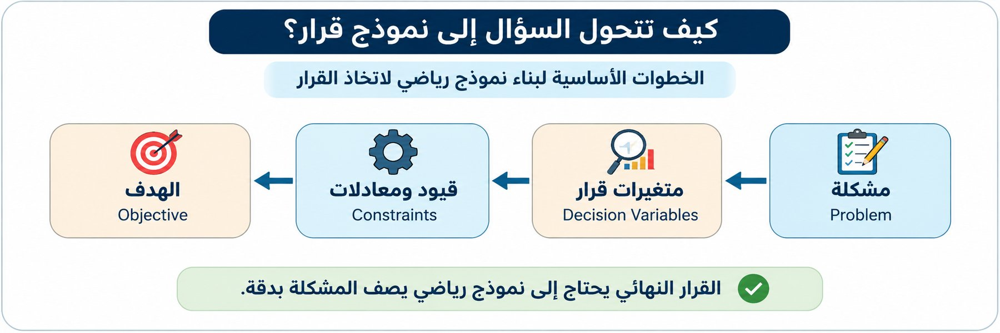
شكل 18: من مشكلة واقعية إلى قرار واختبار النتائج
7.2 مثال تطبيقي: ورشة خزائن وطاولات
تنتج الورشة في المثال التالي خزائن وطاولات. تعطي الخزانة هامش مساهمة قدره 60 دينارًا، وتعطي الطاولة 40 دينارًا. تحتاج الخزانة إلى ساعتين من القص وساعة من التجميع، بينما تحتاج الطاولة إلى ساعة قص وساعتين تجميع. المتاح يوميًا ثماني ساعات قص وثماني ساعات تجميع.
جدول 16: بيانات نموذج الخزائن والطاولات
|
المنتج |
هامش المساهمة |
ساعات القص |
ساعات التجميع |
|---|---|---|---|
|
خزانة |
60 دينارًا |
2 |
1 |
|
طاولة |
40 دينارًا |
1 |
2 |
|
المتاح |
8 |
8 |
إذا رمزنا إلى عدد الخزائن بالمتغير x وإلى عدد الطاولات بالمتغير y، فيمكن كتابة نموذج البرمجة الخطية (Linear Programming – LP) كما يلي:
Z قيمة الهدف، وxj كمية القرار j، وcj مساهمتها، وaij استهلاك المورد i، وbi المتاح منه؛ وn عدد المتغيرات وm عدد القيود.
تأتي معاملات النموذج العددي من بيانات الجدول.
هذه صياغة تعليمية تفترض أن هامش المساهمة والأزمنة ثابتة لكل وحدة. وفي التطبيق العملي لا يمكن إنتاج كسور من الخزائن، ولذلك يمكن أن نحتاج إلى شرط الأعداد الصحيحة (Integer Decisions) إذا أردنا خطة فعلية بوحدات كاملة.
7.2.1 الحل بالرسم والفحص
يمكن رسم القيد الأول بمروره بالنقطتين (4، 0) و(0، 8)، والقيد الثاني بالنقطتين (8، 0) و(0، 4). منطقة الحل الممكن (Feasible Region) تقع في الربع الأول وتحت الخطين.
نقاط الزوايا هي: (0،0)، (4،0)، (0،4)، وتقاطع القيدين. بحل المعادلتين:
x وy كميتا القرار، وa11 وa12 معاملا القيد الأول، وa21 وa22 معاملا الثاني، وb1 وb2 حدا الموردين.
نحسب قيمة الهدف عند الزوايا:
جدول 17: قيم الهدف عند زوايا المنطقة الممكنة
|
إحداثيات القرار |
قيمة Z بالدينار |
|---|---|
|
؛ |
0 |
|
؛ |
240 |
|
؛ |
160 |
|
؛ |
266.67 تقريبًا |
ymax أكبر مقدار صحيح مسموح للمتغير y عند قيمة x محددة. تستخدم معاملات القيدين a وحدودهما b؛ ويعني القوس التقريب إلى أسفل، مع معاملي y موجبين.
يكفي فحص قيم x الصحيحة التي تحقق القيود.
يحقق الحل المستمر عند (8/3، 8/3) قيمة تقارب 266.67 دينار. للحل الصحيح نفحص x من صفر إلى أربعة، ونختار لكل قيمة أكبر y مسموح به لأن معاملها في دالة الهدف موجب. القيم الممكنة لـ y هي 4، 3، 3، 2، 0، وتقابلها قيم هدف 160، 180، 240، 260، 240 دينارًا. إذن الحل الصحيح الأمثل (3، 2).
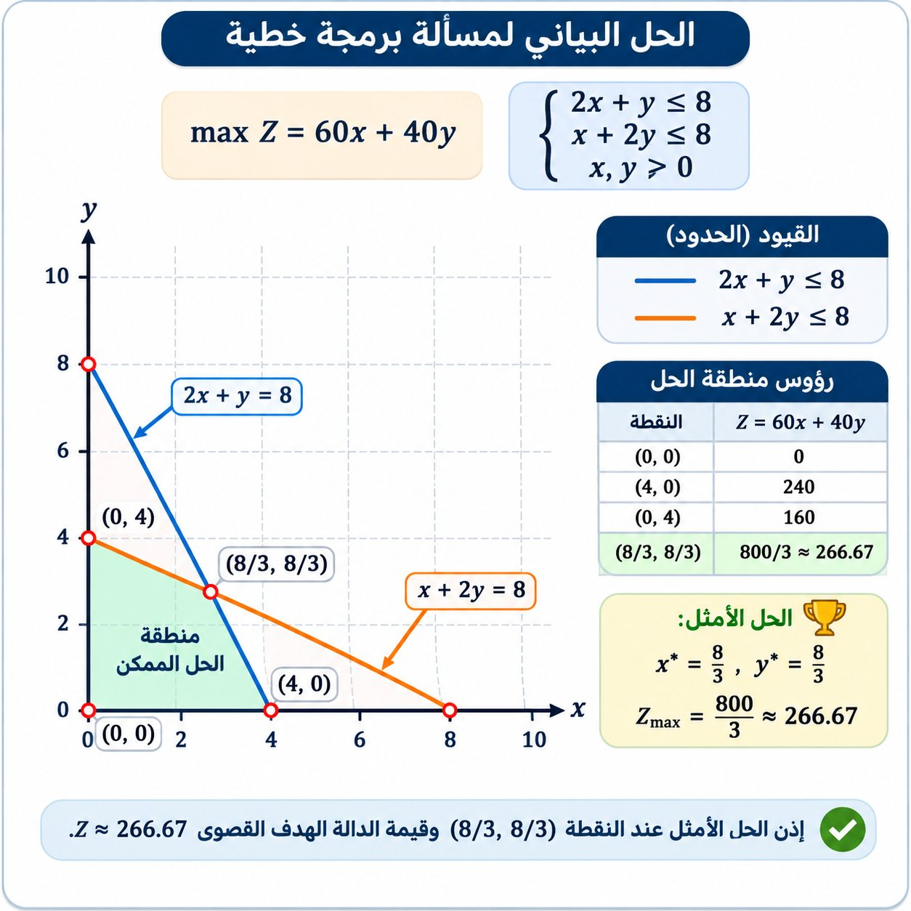
شكل 19: منطقة الحل الممكن للنموذج التعليمي ذي المتغيرين
لماذا لا يكفي أن تكون الحسابات صحيحة. يجب قبل استخدام النتيجة التأكد من الطلب الفعلي، ومدى توافر المواد، ووجود شروط خاصة بتسليم كل طلب، وإمكان العمل الجزئي، وتكلفة التأخير. فالنموذج يجيب فقط عن السؤال الذي صغناه بالافتراضات التي وضعناها.
7.3 الممكن ليس بالضرورة الأفضل
الحل الممكن (Feasible Solution) هو قرار يحقق جميع قيود النموذج. أما الحل الأمثل (Optimal Solution) فهو أفضل حل ممكن وفق دالة الهدف المختارة. فإذا خالف قرار قيدًا أساسيًا، فلا يصبح صالحًا لمجرد أنه يحقق ربحًا مرتفعًا على الورق.
وتعتمد «الأفضلية» على الهدف. لو استبدلنا تعظيم الربح بتقليل التأخير أو بتعظيم عدد المستفيدين، فربما تتغير النتيجة. لهذا يجب أن تكون أهداف المشروع واضحة، وتعرض القيم الاجتماعية المؤثرة صراحة إلى جانب الهدف المالي.
ما أثر المورد الإضافي؟ (Sensitivity). إذا زادت ساعات القص المتاحة، قد يتحسن الحل، لكن أثر الزيادة يعتمد على القيود الأخرى. تسمى دراسة تأثير تغير البيانات والموارد تحليل الحساسية (Sensitivity Analysis). وهو موضوع أعمق سيتعلمه الطالب لاحقًا؛ يكفي هنا فهم أن نتائج النموذج ليست مستقلة عن البيانات المستخدمة فيه.
7.4 القرارات متعددة المعايير
ربما لا يكون القرار قابلًا للاختزال في رقم واحد. فاختيار موقع مستشفى أو محطة معالجة يحتاج إلى مراعاة القرب من السكان وتكلفة الأرض وسهولة الوصول والأثر البيئي. وتسمى هذه الفئة القرارات متعددة المعايير (Multi-Criteria Decision-Making – MCDM).
في مثال مبسط، نريد اختيار أحد موقعين لمركز توزيع. نفترض أن لكل معيار وزنًا وأن الدرجة الأكبر تعني وضعًا أفضل.
جدول 18: المعايير والأوزان في مفاضلة المواقع
|
المعيار |
الوزن |
الموقع أ |
الموقع ب |
|---|---|---|---|
|
الوصول إلى الزبائن |
0.50 |
8 |
6 |
|
التكلفة |
0.30 |
5 |
9 |
|
أثر البيئة والسلامة |
0.20 |
7 |
8 |
Si الدرجة الموزونة للبديل i، وwj وزن المعيار j، وrij درجة البديل عليه، وm عدد المعايير. مجموع الأوزان يساوي واحدًا.
وفق الأوزان والدرجات المفترضة يتقدم الموقع ب. يُختبر ترتيب الموقعين إذا تغيرت الأوزان. وتُستبعد المواقع التي تخالف متطلبات السلامة الإلزامية قبل إجراء المفاضلة.
7.5 المحاكاة: ماذا يحدث إذا تغير الواقع؟
قد يختلف زمن وصول الشاحنات من يوم إلى آخر، وتتغير أوقات خدمة الزبائن. عندئذ يمكن أن تكون النماذج ذات القيم الثابتة غير كافية. تسمح المحاكاة (Simulation) ببناء نموذج يحاكي سير عملية أو نظام وتكرار التجربة تحت شروط مختلفة.
فعند دراسة صف انتظار، يمكن أن نسأل: ما متوسط الانتظار إذا وصل 30 طالبًا في الساعة؟ وما الذي يحدث إذا وصل معظمهم في عشر دقائق؟ وما أثر إضافة نقطة خدمة؟ لا تجيب المحاكاة تلقائيًا عن أفضل قرار؛ بل تعرض نتائج السيناريوهات في ضوء الافتراضات والبيانات.
7.6 القرار العادل: عندما لا يكفي معيار الربح
يمكن للنموذج أن يقلل تكلفة التوزيع، لكنه ربما يفضل المناطق القريبة إن لم نضع احتياجات المناطق البعيدة في الحسبان. ولذلك يجب أن نحدد متطلبات العدالة (Equity Requirements) والمتطلبات الإنسانية أو البيئية كقيود أو أهداف واضحة عندما تكون ذات صلة.
في مسألة التوزيع التالية، لدى مؤسسة 100 طرد غذائي تريد توزيعها على قريتين. إذا كانت حاجة القرية الأولى 70 طردًا وحاجة الثانية 60، فلن تكفي الكمية لتلبية الجميع. يمكن وضع سياسة توزيع تتضمن حدًا أدنى لكل قرية، أو تخصيصًا وفق حجم الحاجة، لكن الاختيار يحتاج إلى معايير معلنة ومعلومات موثوقة ومشاركة الأطراف المسؤولة.
هنا نرى حدود الرياضيات: يستطيع النموذج حساب نتائج خيارات مختلفة، لكنه لا يحدد وحده ما الذي نعتبره عادلًا. تلك مسألة أخلاقية ومؤسسية يجب توضيحها قبل الحساب.
7.7 متى لا نستخدم النموذج؟
قد يكون القرار بسيطًا بما يكفي لحله مباشرة، وربما تكون البيانات ضعيفة جدًا بحيث يعطي النموذج شعورًا زائفًا بالدقة. ويمكن أن يتجاهل النموذج عوامل إنسانية لا يسهل قياسها. من علامات الاستخدام الجيد أن نعلن الافتراضات والقيود، ونجري تحليل سيناريوهات عند الضرورة، ونراجع النتائج مع أصحاب الخبرة قبل تنفيذها.
وفي مؤسسات تواجه اضطراب التوريد وتغير المواعيد، من المهم ألا ننقل خطة «مثلى» من نموذج يعتمد ثبات الزمن إلى الواقع دون اختبارها أمام التأخيرات المحتملة.
7.8 الصفوف من معدل الوصول إلى الانتظار
يفترض نموذج M/M/1 وصولًا بواسونيًا وخدمة أسية مستقلة وأولوية الوصول وسعة انتظار غير محدودة. هنا يصل في المتوسط 8 طلبات في الساعة ويبلغ معدل الخدمة 10 طلبات في الساعة. يرتبط العدد المتوسط بالزمن المتوسط وفق المعادلة (4.9) [2، 3].
λ معدل الوصول، وμ معدل الخدمة، وρ الاستغلال. يمثل L وLq العدد في النظام والصف، وW وWq الزمن فيهما؛ مع خادم واحد وλ أصغر من μ.
يدرس مهندس صناعي نقطة خدمة يصلها 8 أشخاص/ساعة وتخدم في المتوسط 10/ساعة. الاستخدام 80%؛ ومتوسط الزمن الكلي ساعة = دقيقة، ومتوسط الانتظار ساعة = دقيقة؛ ومتوسط العدد في النظام 4 وفي الصف 3.2. متوسط الخدمة وحده 6 دقائق، ولذلك لا تعني قدرة 10/ساعة انتظارًا قصيرًا.
إذا ارتفع الوصول إلى 9/ساعة مع بقاء الخدمة، يزيد الانتظار إلى 54 دقيقة. وإذا بلغ الوصول 10/ساعة فلا يوجد متوسط مستقر محدود في هذا النموذج. تُراجع افتراضات التوزيع والتكتل والأولويات؛ فالفرز الطبي ليس صفًا بأولوية الوصول، وإضافة خادم تحتاج إلى نموذج متعدد الخوادم أو محاكاة.
7.9 تخطيط المشروع والمسار الحرج
طريقة المسار الحرج (CPM) تحسب أقرب موعد لإنجاز مشروع من أنشطة مترابطة.
ES وEF البداية والنهاية المبكرتان، وLS وLF المتأخرتان، وTF السماح الكلي، وtj مدة النشاط j، وPred(j) مجموعة أسلافه المباشرين.
المشروع مجموعة أنشطة لها بداية ونهاية وعلاقات أسبقية. بخلاف خط الإنتاج المتكرر، يهتم CPM بأطول مسار زمني يحدد أقرب إنجاز عند ثبات المدد وعدم وجود قيود موارد إضافية. يبدأ الحساب الأمامي من الصفر: البداية المبكرة للنشاط هي أكبر نهاية مبكرة لأسلافه؛ ونهايته المبكرة = البداية + المدة. ثم نعود من موعد انتهاء المشروع لحساب النهايات والبدايات المتأخرة. السماح الكلي يساوي البداية المتأخرة ناقص المبكرة، أو النهاية المتأخرة ناقص المبكرة [4].
يخطط مهندس صناعي لتجهيز مرفق تدريبي: A مسح احتياجات ومدته يومان، B إعداد الموقع ومدته 3 بعد A، C تجهيز المواد ومدته 4 بعد A، D تركيب ومدته يومان بعد B وC، E اختبار ومدته يوم بعد D. يوضح الجدول نتائج المرورين. المسار A–C–D–E طوله 9 أيام؛ وB له سماح كلي يوم واحد، وليس كل نشاط متأخر يومًا يؤخر المشروع.
جدول 19: حساب المسار الحرج لمشروع تعليمي
|
النشاط |
المدة |
السابق |
ES–EF |
LS–LF |
السماح |
|---|---|---|---|---|---|
|
A |
2 |
0–2 |
0–2 |
0 |
|
|
B |
3 |
A |
2–5 |
3–6 |
1 |
|
C |
4 |
A |
2–6 |
2–6 |
0 |
|
D |
2 |
B، C |
6–8 |
6–8 |
0 |
|
E |
1 |
D |
8–9 |
8–9 |
0 |
7.9.1 تقدير المدة غير المؤكدة
تقنية تقييم ومراجعة البرامج (PERT) تقدّر مدة النشاط عندما تكون غير مؤكدة.
te المدة المتوقعة، وa التقدير المتفائل، وm الأرجح، وb المتشائم، وσ_t² تباين المدة. تتحد وحدات المدد ويقاس التباين بمربعها.
تقديرات النشاط C هي 2 و4 و8 أيام. مع ثبات مدد بقية الأنشطة، تبلغ مدة المسار المتوقعة 9.333 يوم. قد يتغير المسار الحرج إذا تغيرت المدد [5].
جمع تباينات مسار يفترض استقلال المدد، وتقدير احتمال موعد نهائي يحتاج إلى مزيد من الفروض. كما لا يضمن جدول CPM توافر الفريق أو المعدات: إذا احتاج B وC المورد نفسه فلن ينفذا متزامنين كما في الجدول. نضيف قيود الموارد ونراجع الخطة قبل الالتزام.
7.10 مثالان تطبيقيان من بحوث العمليات
ليست بحوث العمليات سلسلة معادلات معزولة؛ إنها طريقة لعرض القرار بصورة نستطيع شرحها ومراجعتها. يبدأ الطالب بتحديد البدائل والهدف والقيود، ثم يفحص المعنى الواقعي لأي نتيجة رقمية.
7.10.1 مشكلة التخصيص
لدينا ثلاثة عاملين «أ، ب، ج» وثلاث مهام، وتكاليف تنفيذها المفترضة بالدينار:
جدول 20: تكاليف تخصيص الأفراد للمهام
|
العامل |
المهمة 1 |
المهمة 2 |
المهمة 3 |
|---|---|---|---|
|
أ |
9 |
2 |
7 |
|
ب |
6 |
4 |
3 |
|
ج |
5 |
8 |
1 |
بتجربة التوزيعات الستة الممكنة، نجد أن تكليف «أ» بالمهمة 2، و«ب» بالمهمة 1، و«ج» بالمهمة 3 يعطي تكلفة . وهو الحل الأقل تكلفة في هذا المثال الصغير. أما في المؤسسات الحقيقية فتضاف شروط الخبرة والأمان والتوفر، ولا يكفي السعر وحده.
7.10.2 شجرة القرار
أمام الإدارة في هذا المثال بديلان لتقديم خدمة جديدة، ونتيجتان محتملتان: طلب مرتفع باحتمال 40% وطلب منخفض باحتمال 60%. صافي العائد للبديل الأول 80 ألفًا عند الطلب المرتفع و20 ألفًا عند المنخفض، وللثاني 65 ألفًا و35 ألفًا على الترتيب.
القيمة النقدية المتوقعة للأول = ألفًا. وللثاني = ألفًا. وفق معيار القيمة المتوقعة فقط، يُفضّل البديل الثاني بفارق 3 آلاف. لكن القرار يتغير إذا اختلفت الاحتمالات أو كان تحمل الخسارة محدودًا؛ لذلك نراجع حساسية النتيجة.
إلى الفصل التالي: خذ المورد المقيِّد الذي كشفه النموذج إلى الفصل الثامن، وقارن الاستثمار فيه بالتدفقات النقدية.
7.11 خلاصة الفصل
يحوّل النموذج السؤال إلى هدف ومتغيرات وقيود قابلة للفحص. تُختبر إمكانية الحل وصحة الفروض وحساسيته قبل تنفيذه، ولا تُتجاوز شروط السلامة بدرجة مالية أفضل.
7.12 أسئلة المراجعة
1. كيف تختار متغيرات القرار والقيود ودالة الهدف؟
2. متى يجب فرض الأعداد الصحيحة على نموذج إنتاج؟
3. ما شروط نموذج صف انتظار بمحطة خدمة واحدة، ومتى يفشل؟
4. كيف يختلف المسار الحرج عن النشاط الأطول، وماذا تضيف تقديرات PERT؟
7.13 مسائل حسابية مختارة
حل المسائل مع توضيح الوحدات والفروض، ثم قارن خطواتك بحلول ملحق أ.
ح 7.1: عظّم مع القيود و و. افترض إمكان التجزئة. افحص رؤوس المنطقة الممكنة وحدد الحل وقيمة الهدف.
ح 7.2: لصف M/M/1 معدل وصول 6/ساعة وخدمة 10/ساعة. احسب الاستخدام ومتوسط العدد الكلي والمنتظر والزمن الكلي والانتظار. حوّل الزمن إلى دقائق.
ح 7.3: أنشطة مشروع: A مدته 3 بلا سابق، B مدته 4 بعد A، C مدته 2 بعد A، D مدته 5 بعد B، E مدته 6 بعد C، F مدته 2 بعد D و E. احسب مدة المشروع ومساره الحرج والسماح الكلي لكل من C و E.
ح 7.4: تقديرات PERT لنشاط: المتفائل 2 والأرجح 5 والمتشائم 14 يومًا. احسب المتوسط والتباين. في مسار ثابت مستقل الأنشطة، متوسط المدة 20 وتباينها 9؛ قدّر احتمال الإنجاز خلال 23 يومًا بالتقريب الطبيعي.
7.14 مراجع الفصل 7
[1] Institute of Industrial and Systems Engineers, Industrial and Systems Engineering Body of Knowledge (ISE BoK), rev. ed., 2026. [Online]. Available: https://www.iise.org/uploadedFiles/IIE/Technical_Resources/Publications/ISE-BoK-Full-v1.pdf. area 2.
[2] J. D. C. Little, “A proof for the queuing formula: L = λW,” Operations Research, vol. 9, no. 3, pp. 383–387, 1961, doi: 10.1287/opre.9.3.383.
[3] D. Gross, J. F. Shortle, J. M. Thompson, and C. M. Harris, Fundamentals of Queueing Theory, 4th ed. Hoboken, NJ, USA: Wiley, 2008, doi: 10.1002/9781118625651.
[4] J. E. Kelley, Jr., and M. R. Walker, “Critical-path planning and scheduling,” in Proc. Eastern Joint IRE-AIEE-ACM Computer Conf., 1959, pp. 160–173, doi: 10.1145/1460299.1460318.
[5] D. G. Malcolm, J. H. Roseboom, C. E. Clark, and W. Fazar, “Application of a technique for research and development program evaluation,” Operations Research, vol. 7, no. 5, pp. 646–669, 1959, doi: 10.1287/opre.7.5.646.
[6] W. C. Turner, J. H. Mize, K. E. Case, and J. W. Nazemetz, Introduction to Industrial and Systems Engineering, 3rd ed. Englewood Cliffs, NJ, USA: Prentice Hall, 1993. Further reading: 14–17.
الفصل الثامن
التحليل الاقتصادي الهندسي
بنهاية الفصل، يميز القارئ التكاليف والتدفقات المرتبطة بالقرار، ويحسب التعادل والقيمة الحالية، ويقارن البدائل ويختبر حساسية النتيجة.
كشف نموذج القرار أن ساعات القص تحد بعض الطلبات، فوصل عرض آلة أسرع إلى طاولة الفريق بجوار البطاقة الحمراء القديمة. أبرز العرض زيادة الإنتاج وفترة استرداد قصيرة. سألت المهندسة الصناعية عن تكلفة الصيانة والتدريب، وعن عدد الوحدات الإضافية التي سيشتريها الزبائن فعلًا.
قارن الفريق شراء الآلة بتحسين تشغيل الموجودة، وربط السرعة بتدفقات نقدية وتوقيتات محددة. وبدل أن ينهي الحساب النقاش، كشف الفروض التي تحتاج إلى اختبار. في الفصل الأخير سنعود إلى الورشة لننفذ تغييرًا محدودًا، ونقيس أثره على العمل والموارد، ثم نختبر استمراره عند الاضطراب.
8.1 التكلفة ليست رقمًا واحدًا
تحتاج القرارات الهندسية إلى فهم أنواع التكاليف. التكلفة الثابتة (Fixed Cost) لا تتغير مباشرة مع عدد الوحدات ضمن نطاق تشغيل معين وفترة محددة، مثل إيجار مساحة صناعية. أما التكلفة المتغيرة (Variable Cost) فتتغير عادة مع عدد الوحدات، مثل تكلفة المواد المباشرة لكل منتج.
ويمكن أن تكون التكلفة مباشرة (Direct Cost) يسهل ربطها بالمنتج، أو غير مباشرة (Indirect Cost) تتوزع على منتجات أو أنشطة عدة. وهناك تكلفة غارقة (Sunk Cost) دُفعت بالفعل ولا تتغير بقرار مستقبلي؛ ينبغي عادة ألا تُستخدم لتبرير الاستمرار في مشروع غير مجدٍ لمجرد أننا دفعنا فيه سابقًا.
جدول 21: أنواع التكاليف وأمثلتها
|
نوع التكلفة |
English Term |
مثال تعليمي |
|---|---|---|
|
ثابتة |
Fixed Cost |
إيجار الورشة الشهري |
|
متغيرة |
Variable Cost |
خشب ومسامير لكل خزانة |
|
مباشرة |
Direct Cost |
تكلفة ألواح خزانة بعينها |
|
غير مباشرة |
Indirect Cost |
إضاءة ومراقبة عامة |
|
غارقة |
Sunk Cost |
ثمن دراسة سابقة لا يمكن استرداده |
مثال 8.1: تكلفة الوحدة
يحسب مهندس صناعي متوسط تكلفة الوحدة.
TC التكلفة الكلية، وFC التكلفة الثابتة، وv المتغيرة للوحدة، وQ كمية الإنتاج، وc متوسط تكلفة الوحدة؛ وتحدد الفترة قبل الحساب.
تبلغ التكاليف الثابتة الشهرية 8,000 دينار، وتبلغ التكلفة المتغيرة 30 دينارًا لكل وحدة. نحسب متوسط تكلفة الوحدة عند إنتاج 400 وحدة.
إذا أنتجت 500 وحدة، وأبقينا التكاليف الثابتة والمتغيرة كما هي، تصبح التكلفة الكلية 23,000 دينار ومتوسط الوحدة 46 دينارًا. لكن انخفاض المتوسط لا يضمن ارتفاع الربح؛ إذ ينبغي أن تُباع الوحدات وأن تُحافظ المنشأة على جودتها وتتحمل كل التكاليف ذات الصلة.
8.2 نقطة التعادل: متى يغطي الدخل التكلفة؟
تمثل نقطة التعادل (Break-Even Point) حجم المبيعات الذي تتساوى عنده الإيرادات والتكاليف الكلية في نموذج مبسط. نرمز لسعر بيع الوحدة بـ p، وللتكلفة المتغيرة للوحدة بـ v، وللتكلفة الثابتة بـ FC.
مثال 8.2: مصنع عبوات
تراجع مهندسة صناعية حجم المبيعات اللازم لتغطية التكاليف.
QBE كمية التعادل، وFC التكلفة الثابتة، وp سعر بيع الوحدة، وv تكلفتها المتغيرة. يجب أن يكون هامش المساهمة p−v موجبًا.
سعر البيع 60 دينارًا والتكلفة المتغيرة 35 دينارًا للوحدة. الفرق بينهما هامش المساهمة (Contribution Margin)، وهو 25 دينارًا للوحدة. وتبلغ التكلفة الثابتة الشهرية 10,000 دينار.
يفترض نموذج التعادل ثبات سعر البيع والتكلفة المتغيرة للوحدة في نطاق الدراسة.
عند بيع 500 وحدة يكون هامش المساهمة الإجمالي = دينار، والنتيجة التشغيلية المبسطة بعد التكاليف الثابتة = دينار. لم نُدخل في المثال الضرائب أو التمويل أو تغير الأسعار أو المنتجات المتعددة.
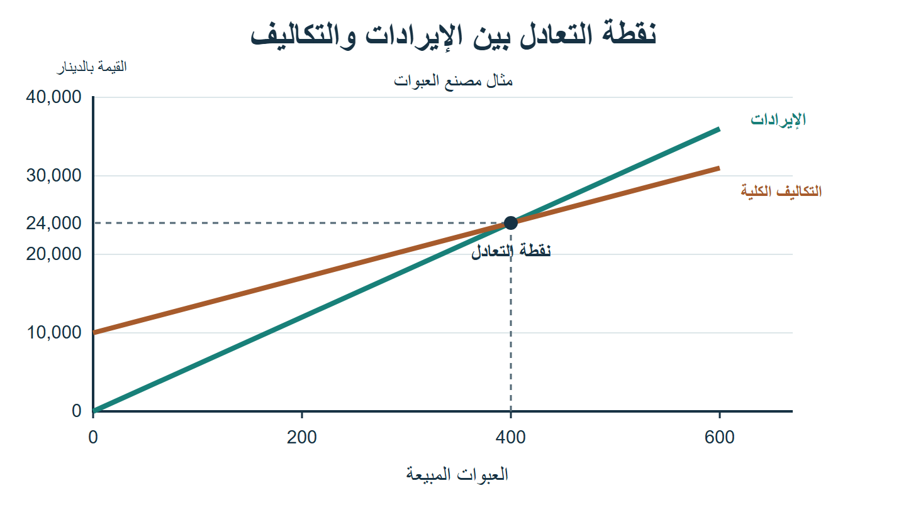
شكل 20: نقطة التعادل بين الإيرادات والتكاليف في مثال توضيحي
8.3 لماذا لا تساوي مئة دينار اليوم مئة دينار بعد عام؟
للزمن قيمة في القرارات الاقتصادية. فالنقود المتاحة اليوم يمكن استثمارها، وربما تتغير الأسعار والمخاطر خلال السنوات. ويُعبّر عن ذلك بمفهوم القيمة الزمنية للنقود (Time Value of Money) [3].
نحسب القيمة المستقبلية لمبلغ حالي وفق نموذج العائد المركب.
FV القيمة المستقبلية، وP المبلغ الحالي، وi العائد لكل فترة ككسر عشري، وn عدد الفترات؛ مع تطابق وحدة الفترة ومعدلها.
نفترض إيداع مبلغ حالي قدره 10,000 دينار لمدة سنة واحدة بعائد سنوي 10%.
أما القيمة الحالية لمبلغ مستقبلي واحد F فتحسبها المعادلة (8.4).
مثال 8.3: مبلغ مستقبلي
يحسب مهندس صناعي القيمة المكافئة اليوم.
PV القيمة الحالية، وF مبلغ مستقبلي واحد، وi معدل الخصم لكل فترة ككسر عشري، وn عدد الفترات حتى استلامه.
بعد سنة واحدة يُستلم مبلغ 11,000 دينار. نستخدم معدل خصم مفترضًا قدره 10% لحساب المبلغ المكافئ اليوم.
ويجب التمييز بين معدل الخصم (Discount Rate) والتضخم (Inflation) ومخاطر المشروع. ففي دراسة حقيقية قد تختلف هذه المكونات وتحتاج إلى تبرير مستقل.
8.4 التدفق النقدي: عندما يكون الربح على الورق غير كافٍ
التدفق النقدي (Cash Flow) هو حركة النقد الداخل إلى المشروع والخارج منه خلال فترات زمنية محددة. وربما تحقق المؤسسة مبيعات لكنها لا تحصل على قيمتها فورًا، ويمكن أن تشتري معدات اليوم بينما تظهر فائدتها على سنوات لاحقة.
لهذا يعد رسم خط زمني للتدفقات النقدية (Cash Flow Timeline) خطوة أساسية قبل مقارنة الاستثمار بالبدائل. فثمن الشراء عند البداية ليس مثل الوفر السنوي المتوقع، وتحوّل التدفقات الممتدة عبر سنوات إلى تاريخ مرجعي واحد قبل جمعها.
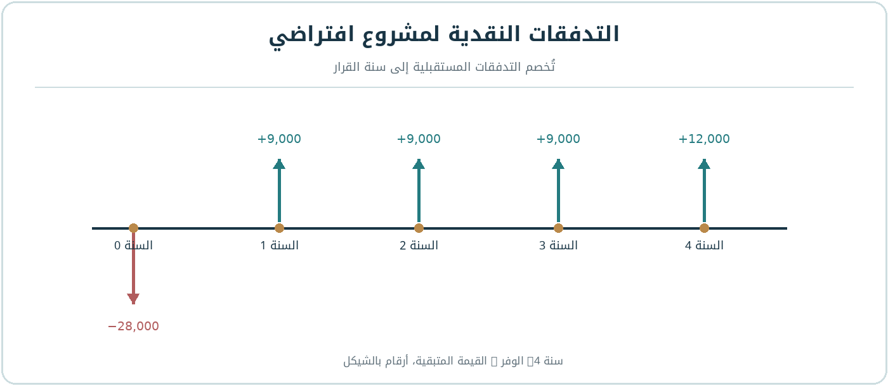
شكل 21: خط زمني لتدفقات استثمارية سنوية بالدينار
8.5 القيمة الحالية الصافية
تجمع القيمة الحالية الصافية (NPV) التدفقات النقدية بعد تحويلها إلى قيم في التاريخ نفسه. تدخل القيمة المتبقية أو قيمة الخردة (Salvage Value) ضمن التدفق عند توقع تحصيلها.
مثال 8.4: آلة لتقليل استهلاك الطاقة
تقيّم مهندسة صناعية استثمارًا في معدات توفر الطاقة.
NPV القيمة الحالية الصافية، وI₀ الاستثمار المبدئي، وCFt التدفق الصافي بنهاية الفترة t، وi معدل الخصم، وn عدد الفترات. تضاف القيمة المتبقية إلى تدفق فترتها.
يدرس مصنعٌ في المثال التالي استثمارًا قدره 28,000 دينار في آلة محسنة تحقق وفرًا نقديًا صافيًا متوقعًا قدره 9,000 دينار نهاية كل سنة لمدة أربع سنوات، ولها قيمة متبقية قدرها 3,000 دينار في نهاية السنة الرابعة. ومعدل الخصم المفترض 10%.
نحسب القيمة الحالية للتدفقات السنوية الأربع:
السنة 1: .
السنة 2: .
السنة 3: .
السنة 4: .
القيمة الحالية للقيمة المتبقية: .
المجموع = دينار تقريبًا، و دينار تقريبًا.
في نموذج الاختيار المبسط، تشير القيمة الحالية الصافية الموجبة إلى أن التدفقات المقدرة تغطي الاستثمار والعائد المطلوب عند معدل الخصم المختار. ويُفحص كذلك أثر المخاطر والتمويل والسيولة.
وفق هذه الفرضيات فقط، تبدو القيمة الحالية الصافية موجبة. لكن ينبغي اختبار انخفاض الوفر السنوي أو ارتفاع تكلفة الصيانة أو تعطل الآلة، وعدم خلط القيم بالعملات أو السنوات المختلفة دون تصحيح.
8.6 فترة الاسترداد
فترة الاسترداد البسيطة (Simple Payback Period) تقدّر الزمن اللازم لتعويض الاستثمار المبدئي من التدفقات النقدية، دون خصم الزمن في صورتها الأساسية.
PB فترة الاسترداد البسيطة، وI₀ الاستثمار المبدئي، وAannual التدفق السنوي الصافي الثابت؛ وتكون النتيجة بالسنوات.
نحسب الفترة لاستثمار 28,000 دينار ووفر نقدي سنوي صافٍ قدره 9,000 دينار، من دون الاعتماد على القيمة المتبقية.
عند تقييم الاسترداد ميدانيًا تُراجع مواعيد تحقق الوفر وتكاليف التشغيل المتكررة.
لكن هذه الطريقة لا تراعي القيمة الزمنية للنقود ولا ما يحدث بعد تاريخ الاسترداد. ولذلك لا يُنصح باستخدامها وحدها لاختيار الاستثمارات الكبرى. وقد يكون مشروع سريع الاسترداد أقل نفعًا على مدى عمره من مشروع آخر يعود بفوائد أكبر بعد سنوات.
8.7 تحليل الحساسية
تقوم دراسة الجدوى على توقعات يمكن ألا تتحقق. ربما يتغير سعر الطاقة أو عدد ساعات التشغيل أو تكلفة قطع الغيار. لذلك نسأل كيف تتغير نتيجة القرار عندما تتغير المدخلات الرئيسية. ويسمى هذا تحليل الحساسية (Sensitivity Analysis).
مثال 8.5: ثلاثة سيناريوهات
يختبر مهندس صناعي أثر الوفر السنوي في قرار الاستثمار.
في تحليل الحساسية التالي، الاستثمار المبدئي 28,000 دينار، والعمر أربع سنوات، والقيمة المتبقية 3,000 دينار، ومعدل الخصم 10%. نقارن ثلاث قيم للوفر السنوي الصافي:
جدول 22: سيناريوهات القيمة الحالية الصافية
|
السيناريو |
الوفر السنوي |
NPV التقريبية |
|---|---|---|
|
متحفظ |
7,000 دينار |
-3,762 دينار |
|
أساسي |
9,000 دينار |
2,578 دينار |
|
متفائل |
11,000 دينار |
8,918 دينار |
يتغير الحكم على الاستثمار إذا انخفض الوفر المتوقع. ولا يعني ذلك بالضرورة رفض المشروع؛ فقد تكون له فوائد في السلامة أو الاعتمادية أو البيئة لم تدخل الحساب، لكن ينبغي التصريح بها وتقييمها بصورة مستقلة.
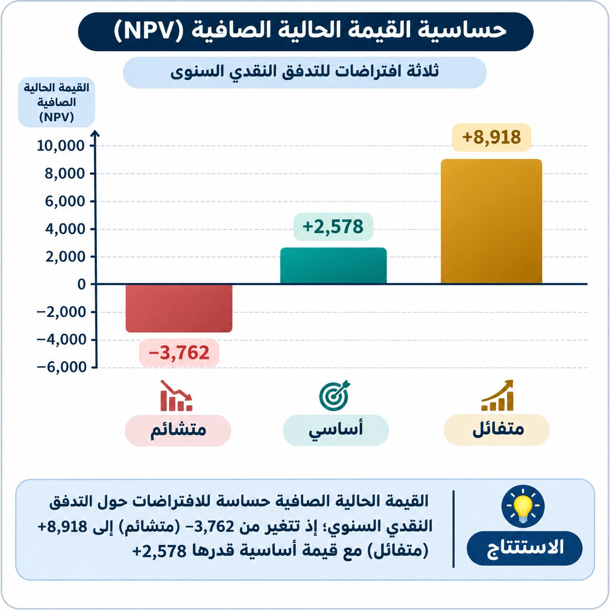
شكل 22: حساسية القيمة الحالية الصافية بالدينار للتوفير السنوي
العملة والضرائب والتضخم. تتفق العملة والأسعار والفترة في الحساب. تحدد الدراسة الفعلية الضرائب والتضخم والتمويل والصيانة والقيمة المتبقية ورأس المال العامل؛ ولا تكفي نتيجة صفية لاتخاذ استثمار.
8.7.1 مثال متكامل: نقطة التعادل وقرار الاستثمار
تريد منشأة ناشئة معرفة عدد الوحدات اللازم لعدم تحقيق خسارة تشغيلية. التكلفة الثابتة السنوية 120,000 دينار، وسعر البيع 40 دينارًا، والتكلفة المتغيرة للوحدة 25 دينارًا.
هامش المساهمة = دينارًا للوحدة. ونقطة التعادل = وحدة. إذا باعت المنشأة 10,000 وحدة، فالربح التشغيلي وفق النموذج = دينار، قبل البنود التي لم يتضمنها الافتراض.
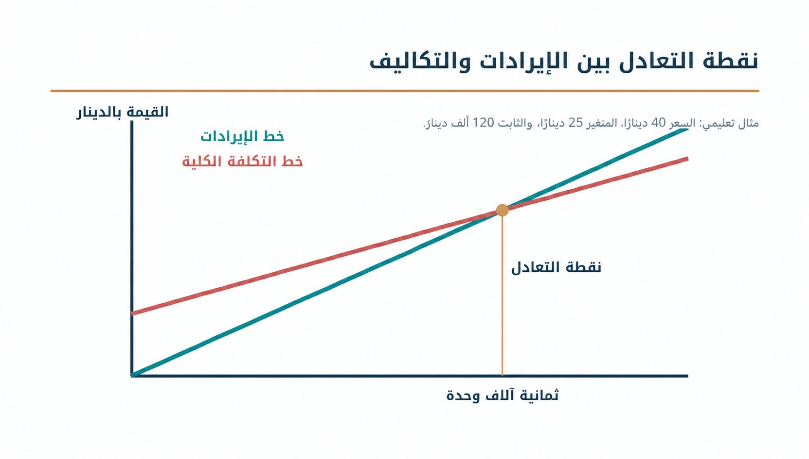
شكل 23: رسم توضيحي لنقطة التعادل عند إنتاج 8,000 وحدة في نموذج مبسط
8.7.2 هل ننظر إلى الربح السنوي وحده؟
نحلل هنا استثمارًا أوليًا قدره 50,000 دينار، وتدفقات نقدية صافية تبلغ 20,000 دينار في نهاية كل سنة من ثلاث سنوات، ومعدل خصم مفترض 10%. القيمة الحالية الصافية:
NPV القيمة الحالية الصافية، وI₀ الاستثمار المبدئي، وCFt التدفق بنهاية السنة t، وi معدل الخصم السنوي، وn عدد السنوات.
تساوي نحو −263 دينارًا؛ لذا فإن المشروع غير مجدٍ بالكاد وفق معيار NPV وهذه الفروض المحدودة. لا يصلح هذا المثال لاتخاذ قرار حقيقي دون حساب المخاطر والضرائب والصيانة والقيمة المتبقية والحاجة إلى رأس المال العامل.
إلى الفصل التالي: احتفظ بالفروض التي اختبرتها الحساسية؛ ثم نفّذ تحسينًا محدودًا وقِس أثره في الفصل التاسع.
8.8 خلاصة الفصل
يقارن التحليل الاقتصادي التدفقات في أزمنة مختلفة. التعادل والاسترداد وNPV أدوات متكاملة؛ ويتغير الحكم بتغير الفروض والمخاطر والموارد.
8.9 أسئلة المراجعة
1. ما الفرق بين التكلفة الثابتة والمتغيرة والغارقة عند اتخاذ قرار؟
2. لماذا قد يختلف الربح المحاسبي عن التدفق النقدي؟
3. كيف تتغير نتيجة الاستثمار مع الوفر السنوي ومعدل الخصم؟
4. ما الذي يجب التحقق منه قبل تفضيل بديل ذي قيمة حالية أفضل؟
8.10 مسائل حسابية مختارة
حل المسائل مع توضيح الوحدات والفروض، ثم قارن خطواتك بحلول ملحق أ.
ح 8.1: تكلفة ثابتة 60,000 دينار سنويًا وسعر الوحدة 50 دينارًا وتكلفتها المتغيرة 30 دينارًا. احسب حجم التعادل وربح بيع 3,500 وحدة، بافتراض بيع كل الإنتاج.
ح 8.2: استثمار أولي 30,000 دينار يوفر 10,000 دينار في نهاية كل سنة لأربع سنوات، دون قيمة متبقية. عند خصم 10%، احسب NPV واتخذ قرارًا وفق هذا المعيار وحده.
ح 8.3: للاستثمار السابق، احسب NPV إذا انخفض الوفر السنوي إلى 8,000 دينار. واحسب الوفر السنوي الذي يجعل NPV صفرًا.
ح 8.4: بديلان يؤديان الخدمة نفسها لأربع سنوات، بلا قيمة متبقية. المبالغ الآتية بالدينار: أ ثمنه 18,000 وتشغيله السنوي 2,000؛ ب ثمنه 24,000 وتشغيله 500. عند خصم 8%، قارن القيمة الحالية للتكلفة.
8.11 مراجع الفصل 8
[1] Institute of Industrial and Systems Engineers, Industrial and Systems Engineering Body of Knowledge (ISE BoK), rev. ed., 2026. [Online]. Available: https://www.iise.org/uploadedFiles/IIE/Technical_Resources/Publications/ISE-BoK-Full-v1.pdf. area 3.
[2] W. C. Turner, J. H. Mize, K. E. Case, and J. W. Nazemetz, Introduction to Industrial and Systems Engineering, 3rd ed. Englewood Cliffs, NJ, USA: Prentice Hall, 1993. Further reading: 13.
[3] L. Blank and A. Tarquin, Engineering Economy, 9th ed. New York, NY, USA: McGraw Hill, 2024.
الفصل التاسع
التحسين والاستدامة واستمرارية العمل
المرحلة الرابعة التحسين والتحقق
بنهاية الفصل، يصمم القارئ تجربة تحسين صغيرة، ويقيس أثرها على الوقت والموارد، ويقارن بدائل الاستدامة ويبني خطة أولية لاستمرارية خدمة حرجة.
اختار الفريق تجربة ترتيب الأدوات وتحسين إطلاق العمل قبل التزام استثماري أكبر. نُزعت البطاقة الحمراء عن الطلب الذي بدأ الحكاية، لكن المهندس الصناعي والمهندسة الصناعية احتفظا بها بجوار خط الأساس: انخفض الانتظار، فهل بقيت الجودة والسلامة؟ وهل تحقق الوفر الذي توقعه الحساب؟
عاد السؤال عندما تأخرت شحنة أخرى، وظهرت قراءة مرتفعة لاستهلاك الماء. صار نجاح التجربة مرتبطًا بتثبيت طريقة العمل، ومراقبة الموارد، وتجهيز بديل يحافظ على الخدمة. يجمع هذا الفصل أدوات الرحلة السابقة في تحسين قابل للقياس والمراجعة، ثم يهيئ القارئ للمشروع التطبيقي الختامي.
9.1 ما التصنيع الرشيق؟
ينظم التصنيع الرشيق (Lean Manufacturing) العمل انطلاقًا من قيمة يحتاجها الزبون، ثم يعالج ما يعطل تدفقها بمشاركة العاملين. تُختبر النتيجة على الجودة والسلامة والموارد، لا سرعة التشغيل وحدها [2].
القيمة والهدر (Value and Waste). نميز نشاطًا يغيّر المنتج كما يريده الزبون، وإجراءً لازمًا للسلامة أو الامتثال، وهدرًا يمكن منعه. لا يتحول الفحص الإلزامي إلى هدر لمجرد أنه لا يغير شكل المنتج؛ بل نعمل على منع العيب وتحقيق المتطلب بأقل موارد مناسبة.
9.2 تنظيم مكان العمل
تجمع 5S خمس ممارسات لتنظيم بيئة العمل؛ يلخصها الجدول والشكل، وتُطبّق مع العاملين على مساحة محددة قبل التوسع.
جدول 23: خطوات تنظيم مكان العمل 5S
|
الخطوة |
Japanese / English |
المعنى التطبيقي |
|---|---|---|
|
الفرز |
Seiri / Sort |
فصل الضروري عن غير الضروري |
|
الترتيب |
Seiton / Set in Order |
وضع الأشياء الضرورية في مواقع واضحة |
|
التنظيف والفحص |
Seiso / Shine |
تنظيف المكان واكتشاف المشكلات |
|
التوحيد |
Seiketsu / Standardize |
توحيد الطريقة ووضع تعليمات واضحة |
|
الاستدامة والانضباط |
Shitsuke / Sustain |
المحافظة على الممارسات ومراجعتها |
شكل 24: خطوات 5S بصورة دورية
في الفرز (Sort) نفصل اللازم عن غيره مع حماية قطع الغيار الحرجة. وفي الترتيب (Set in Order) نخصص مواقع آمنة يسهل الوصول إليها، وفق تكرار الاستخدام والوزن والارتفاع.
يكشف التنظيف والفحص (Shine) التسرب والتلف، ثم توثق طريقة الإرجاع والفحص والمسؤولية في التوحيد (Standardize). وتحتاج الاستدامة (Sustain) إلى تدريب ووقت للمراجعة وقياس استمرار النتيجة.
لا يكفي تصوير مكان مرتب؛ يُقاس زمن البحث، وتُراجع سلامة الرفع والوصول، ويُعالج سبب عودة الأدوات إلى غير مواقعها.
يُثبت الفريق الترتيب الذي نجح في التجربة بإجراء بسيط وصورة مرجعية ومسؤولية واضحة عن المراجعة.
يبقى التحسن قائمًا عندما تصبح المراجعة جزءًا من العمل، ويستطيع العاملون تصحيح الانحراف دون انتظار حملة ترتيب جديدة.
9.2.1 مثال تطبيقي: ست دقائق تتكرر كل يوم
تضم الورشة ثمانية عاملين، ويضيع كل منهم ست دقائق يوميًا في البحث عن الأدوات، خلال 22 يوم عمل شهريًا.
إجمالي الزمن المفقود شهريًا = دقيقة، أي 17.6 ساعة عمل.
بعد تنظيم الرفوف، انخفض المتوسط إلى دقيقتين يوميًا للعامل. يصبح الزمن = دقيقة، أي 5.87 ساعة تقريبًا. والوفر الزمني = دقائق = ساعة.
r نسبة خفض الزمن، وtbefore الزمن قبل التحسين، وtafter بعده؛ مع وحدة وحدود قياس متماثلة وزمن أساس موجب.
ينخفض وقت البحث عن الأداة من ست دقائق إلى دقيقتين في المشاهدة التعليمية.
يمثل الوفر طاقة عمل محررة؛ ولا يساوي ربحًا نقديًا تلقائيًا. يُتحقق من كيفية استخدام الوقت ومن تكلفة التنفيذ والصيانة قبل تقدير العائد.
9.3 كايزن: التحسين الذي لا ينتظر المشروع الكبير
كايزن (Kaizen) تغييرات صغيرة ومدروسة تستمر بمشاركة العاملين ومتابعة النتائج، لا بحملة مؤقتة أو جمع مقترحات دون تنفيذ [3].
تبدأ التجربة بسؤال ومؤشر وخط أساس ومسؤولية متابعة. تعديل تسمية الأدوات أو تسجيل الأعطال مفيد إذا عالج سببًا محددًا وحافظ على شروط السلامة.
9.3.1 دورة خطط–نفذ–تحقق–صحح
تنظم دورة PDCA التعلم في أربع مراحل متكررة: خطط، ونفذ تجربة محدودة، وتحقق من نتائجها، ثم اعتمد التغيير أو صححه.
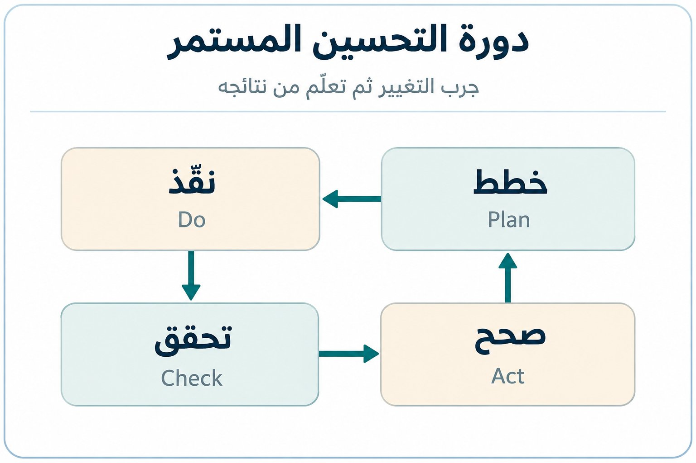
شكل 25: دورة PDCA للتحسين المستمر
في التخطيط (Plan) نحدد المشكلة وفرضية السبب. وفي التجربة (Do) نطبق تغييرًا محدودًا. وفي التحقق (Check) نقارن قبل التغيير وبعده مع فحص اختلاف الطلب والظروف. وفي التصحيح (Act) نثبت ما نجح أو نعدله ونبدأ دورة أخرى.
9.3.2 أدوات بسيطة تساعد على رؤية المشكلة
تجمع أدوات التحسين الملاحظة في موقع العمل (Gemba)، والسؤال المتتابع عن الأسباب (Five Whys)، وتوثيق طريقة آمنة مجربة (Standard Work). لا تثبت سلسلة أسئلة وحدها السبب؛ نطلب دليلًا ونختبر التفسير.
تُظهر الإدارة البصرية الحالة الطبيعية والانحراف بعلامات قليلة مفهومة. وتساعد خريطة تدفق القيمة، التي درسناها في الفصل الرابع، على اختيار موضع التجربة.
تظل الطريقة المعيارية قابلة للمراجعة عندما تظهر بيانات أفضل؛ فالتوحيد وسيلة لحفظ التعلم، لا لمنع الاقتراحات.
9.3.3 تجربة تحسين في مقصف الجامعة
في مقصف الجامعة، بلغ متوسط تسليم الوجبة 12 دقيقة. اختار فريق الطلاب منطقة تجهيز واحدة لتجربة ترتيب المواد بعد موافقة الإدارة، مع ثبات شروط سلامة الغذاء.
سجل الفريق أزمنة 20 طلبًا قبل التغيير و20 بعده خلال فترات متشابهة، وراجع الأخطاء وشكاوى العاملين إلى جانب الزمن.
إذا انخفض المتوسط من 12 إلى 9 دقائق، فإن نسبة الانخفاض الحسابية =. تُفحص فروق الذروة والطلبات والعاملين قبل نسبة التحسن إلى 5S وحدها.
تفشل التجربة عندما تغيب مشاركة العاملين أو مسؤولية المتابعة، حتى إن بدت الفكرة مناسبة عند عرضها.
وثّق نتيجة التجربة وخطة تثبيتها؛ ثم اختبر أثرها في الموارد والبيئة في الأقسام التالية من هذا الفصل.
9.4 ماذا تعني الاستدامة؟
توازن الاستدامة الصناعية القيمة الاقتصادية مع سلامة الإنسان والبيئة وحماية الموارد. لا تكفي منفعة مالية أو مبادرة بيئية منفردة للحكم على الأداء كله.
تُقرأ ثلاثة أبعاد مترابطة في الخط الأساسي الثلاثي (Triple Bottom Line):
• البعد الاقتصادي (Economic Dimension): بقاء المنشأة قادرة على تمويل عملياتها والاستثمار والعمل بكفاءة.
• البعد الاجتماعي (Social Dimension): الاهتمام بالسلامة والعمال والمجتمع والعدالة في توزيع الآثار.
• البعد البيئي (Environmental Dimension): الحد من استنزاف المواد والمياه والطاقة والتلوث.
شكل 26: الأبعاد الثلاثة للاستدامة الصناعية
9.4.1 من الاقتصاد الخطي إلى الاقتصاد الدائري
ينقل الاقتصاد الخطي المواد من الاستخراج إلى الاستخدام ثم المخلفات. ويبحث الاقتصاد الدائري عن خفض الاستهلاك وإطالة عمر المنتج وإصلاحه واسترداد مكوناته. تُحسب أعباء الجمع والنقل والمعالجة، وتُفحص قابلية الاستخدام والسلامة قبل وصف الحل بأنه دائري.
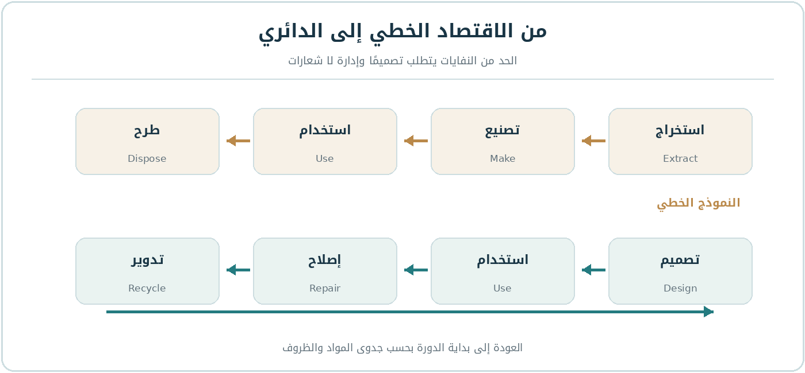
شكل 27: التدفق الخطي والتدفق الدائري للمواد
9.5 الماء والطاقة في المصنع
9.5.1 مؤشر استهلاك الماء النوعي
SWC استهلاك الماء النوعي، وVwater حجم الماء المستهلك، وQgood كمية المنتج الجيد في الفترة نفسها؛ وتذكر وحدتا البسط والمقام.
استخدم المصنع 25 مترًا مكعبًا من الماء لإنتاج 5,000 لتر من منتج متجانس. نحول الاستهلاك إلى 25,000 لتر، فيصبح المؤشر باللتر من الماء لكل لتر منتج.
إذا خفضت المؤسسة الاستهلاك إلى 21 مترًا مكعبًا مع ثبات الإنتاج والجودة، يصبح المؤشر = لتر/لتر، ونسبة الانخفاض =.
هذه أرقام تعليمية لا تصف مصنعًا محددًا، ولا تعني أن المقياس يشمل كل المياه المستخدمة في سلسلة الموردين قبل وصول المواد إلى المصنع.
9.5.2 مؤشر استهلاك الطاقة النوعي
SEC استهلاك الطاقة النوعي، وE الطاقة المستهلكة، وQgood كمية المنتج الجيد خلال الفترة نفسها؛ مثل كيلوواط-ساعة لكل عبوة جيدة.
استهلك المصنع 2,400 كيلوواط-ساعة لإنتاج 8,000 عبوة جيدة. يُتابع المؤشر مع جودة المنتج وسلامة العملية ومزيج المنتجات.
في منشأة الألبان، نراجع الماء والطاقة لكل وحدة جيدة، وعدم المطابقة والإصابات وتكلفة التشغيل. تُثبت تعريفات المؤشرات وحدودها والفترات المقارنة قبل الحكم على تحسن الاستدامة.
9.6 إدارة المخلفات
تختلف مخلفات الصناعة في نوعها وطريقة التعامل معها. فهناك مخلفات صلبة (Solid Waste)، ومياه عادمة (Wastewater)، وانبعاثات غازية (Air Emissions). ويحتاج كل نوع إلى مسار معالجة ملائم لطبيعته.
9.6.1 التسلسل المنطقي لإدارة المخلفات
من المفيد البدء بمنع تولد المخلفات أو تقليلها في المصدر، ثم دراسة إعادة الاستخدام والتدوير والاسترداد، وأخيرًا معالجة المتبقي والتخلص الآمن منه. لكن التطبيق يعتمد على نوع المادة والمخاطر والمعايير الفنية والقانونية.
شكل 28: خيارات التعامل مع المخلفات وفق منطق تقليل الفاقد
9.6.2 تقييم دورة الحياة
قد تقلل المؤسسة الطاقة المستهلكة أثناء التصنيع، لكن مادة جديدة يمكن أن تحتاج إلى طاقة أكبر بكثير لاستخراجها ونقلها. لذلك يضلل الحكم على المنتج من مرحلة واحدة فقط.
يحلل تقييم دورة الحياة (LCA) الآثار البيئية عبر الاستخراج والتصنيع والنقل والاستخدام ونهاية العمر، ضمن حدود وبيانات معلنة.
عند مقارنة عبوة ثقيلة يعاد استخدامها بأخرى خفيفة أحادية الاستخدام، نراجع عدد دورات الاستخدام وماء الغسل والنقل والاسترداد. وزن البلاستيك وحده لا يحسم النتيجة.
9.6.3 مقارنة البدائل وحدود القرار
نقارن استعادة الحرارة بإعادة استخدام الماء من حيث الاستثمار والتشغيل والصيانة والوفر والجودة والسلامة. يلخص الجدول بيانات المقارنة الضرورية.
تسبق الشروط الفنية والبيئية الإلزامية الأوزان المالية في المفاضلة:
جدول 24: معايير مقارنة بدائل التحسين والاستدامة
|
المعيار |
ماذا نحتاج أن نعرف؟ |
|---|---|
|
الجدوى المالية |
الاستثمار والتشغيل والوفر عبر الزمن |
|
الأداء الفني |
أثره في المنتج واستقرار العملية |
|
السلامة |
المخاطر والاشتراطات الضرورية |
|
الموارد |
كمية الماء أو الطاقة التي يمكن توفيرها |
|
الأثر البيئي |
المخلفات والانبعاثات خلال دورة الحياة |
|
قابلية التنفيذ |
مهارات الصيانة والتوريد وقطع الغيار |
لا تجمع المعايير في درجة واحدة قبل إعلان الأوزان وفحص حساسية النتيجة؛ وتبقى شروط السلامة قيودًا واجبة.
9.6.4 حالة متعددة الأبعاد: كفاءة الماء لا تعني إهمال سلامة الغذاء
تستخدم منشأة ألبان في هذا المثال 20 مترًا مكعبًا من المياه لمعالجة 10 أطنان من المنتج. الاستهلاك النوعي = متر مكعب/طن. بعد معالجة بعض التسربات وتنظيم التنظيف، صار الاستهلاك 15 مترًا مكعبًا للكمية نفسها: 1.5 متر مكعب/طن، أي انخفاض بنسبة 25%.
تُثبت صلاحية الماء للاستخدام ومتطلبات سلامة الغذاء قبل خفض استهلاكه؛ فتحسين المؤشر لا يبرر نقل الضرر إلى المنتج أو العاملين.
9.7 المرونة والصمود: مصطلحان متقاربان لا متطابقان
المرونة التشغيلية (Operational Flexibility) قدرة تعديل طريقة العمل أو كميته. والصمود التشغيلي (Operational Resilience) الاستعداد للاضطراب والاستجابة له والتعافي منه مع الحفاظ على الوظائف الأساسية. تنطلق الخطة من خدمة محددة وموارد حرجة، وتوضح ما تستطيع المؤسسة التحكم فيه.
9.7.1 الخطوات الخمس لخطة استمرارية مبسطة
تحدد خطة استمرارية الأعمال (Business Continuity) الحد الأدنى الآمن للخدمة، ثم تربط الموارد والبدائل بالمسؤوليات ومواعيد الاختبار:
1. تحديد الخدمة الحرجة (Critical Service): مثل تبريد دواء، أو توفير مياه آمنة، أو تسليم طلب غذائي أساسي.
2. تحديد نقطة الفشل (Failure Point): آلة واحدة، مصدر كهرباء، مورد، نظام معلومات أو طريق.
3. تقدير الأثر (Impact Assessment): ماذا يحدث إذا توقف المورد ساعة أو يومًا أو أسبوعًا؟
4. تجهيز البدائل (Contingency Options): مورد بديل، مخزون مناسب، خطة نقل أو إجراء يدوي مصرح به.
5. التدريب والمراجعة (Testing and Review): هل يعرف العاملون الخطة؟ وهل جُربت في ظروف آمنة؟
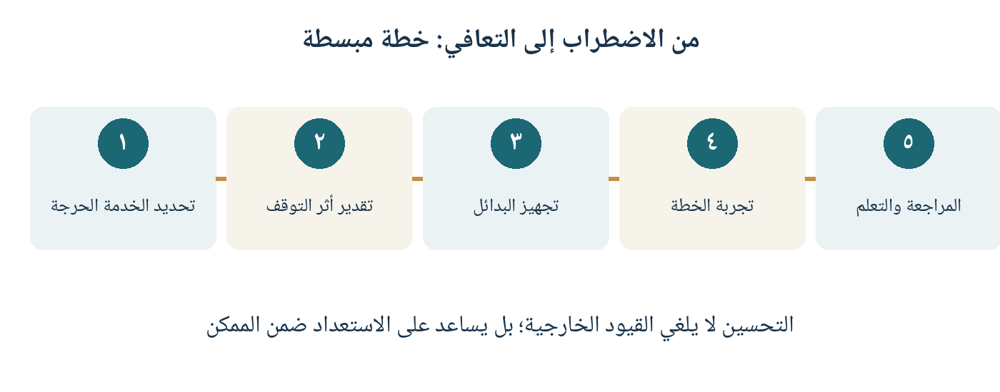
شكل 29: تسلسل مبسط للتعامل مع الاضطرابات
9.7.2 مثال تطبيقي: كم تستمر الخدمة؟
DoC مدة غطاء المخزون، وI الكمية المتاحة الصالحة، وd الاستخدام اليومي الثابت؛ وتكون النتيجة بالأيام.
يستخدم مركز خدمة افتراضي 18 وحدة من مادة طبية يوميًا، ولديه 90 وحدة صالحة. نحسب مدة غطاء المخزون (Days of Cover) بافتراض ثبات الاستهلاك وتوقف الإمداد.
إذا قرر المركز الاحتفاظ بحد أدنى قدره 18 وحدة للطوارئ، فإن كمية المخزون التي يمكن استهلاكها قبل بلوغ الحد الأدنى هي 72 وحدة، وتساوي 4 أيام عند المعدل نفسه.
هذا تقدير لتغطية المخزون في نموذج ثابت؛ يتغير إذا اختلف الاستهلاك أو الصلاحية أو الاحتياج الطبي. لا يستخدم وحده لاتخاذ قرار علاجي.
تُستخدم أدوات الصفوف والنقل والمخزون في الخدمات الحيوية أيضًا. تتقدم فيها سلامة المستفيدين والأولوية والإنصاف على اختزال القرار إلى أقل تكلفة.
9.8 استعادة الخدمة بعد الاضطراب
يبدأ التعافي بتحديد المنفعة التي يجب استعادتها، لا إصلاح المعدة وحده. تُفحص صلاحية الموقع والمواد والخدمات المكملة قبل إعلان عودة التشغيل.
يربط الفريق الفحص والإصلاح والتجربة والتشغيل في شبكة أنشطة، ويحدد السعة المؤقتة والمخزون الحرج وصاحب قرار التحويل إلى البديل.
في مثال تعليمي، تتطلب الخدمة فحصًا يومًا واحدًا، ثم إصلاحًا ثلاثة أيام بالتوازي مع تجهيز مادة يومين، ثم اختبارًا يومًا. أقصر مدة بلا قيود إضافية خمسة أيام. إذا لم تصل المادة إلا في اليوم الخامس، يتأخر الاختبار إلى اليوم السادس؛ لذا تحتاج شبكة الزمن إلى معلومات موارد وتوريد فعلية.
9.9 خلاصة الفصل
يثبت التحسين عندما يُقاس أثره، وتُوثق طريقته وتراجع موارده ومخاطره. تجمع الاستدامة بين النتيجة الحالية وآثارها الأوسع، وتختبر الاستمرارية قدرة الخدمة على مواجهة الاضطراب. يطبق المشروع الختامي هذه الروابط على نظام واحد.
9.10 أسئلة المراجعة
1. كيف تتحول ملاحظة يومية إلى تجربة تحسين قابلة للقياس؟
2. لماذا لا يساوي توفير الوقت وفرًا نقديًا تلقائيًا؟
3. كيف تقارن بديلين بيئيين دون إغفال حدود دورة الحياة؟
4. كيف تختبر خطة استمرارية تراعي الاعتماد المشترك للموارد وسلامة التشغيل؟
9.11 مسائل حسابية مختارة
حل المسائل مع توضيح الوحدات والفروض، ثم قارن خطواتك بحلول ملحق أ.
ح 9.1: يجري البحث عن أداة 100 مرة يوميًا؛ انخفض الزمن من دقيقتين إلى نصف دقيقة. على 220 يومًا وبقيمة 12 دينارًا للساعة، احسب قيمة الوقت السنوية. إذا كلف التغيير 1,800 دينار فاحسب الفرق البسيط وفترة الاسترداد.
ح 9.2: عملية تحتاج 100 م³دوريًا. يسترد نظام 60 م³، لكن 10 منها لا تستوفي شروط الاستخدام المحدد. احسب الماء الصالح المسترد والحاجة للماء الجديد ونسبة خفض السحب، بافتراض تحقق السلامة فنيًا.
ح 9.3: مضختان على التوازي، توافر كل منهما 90% واستقلال تعطلهما. تكفي واحدة للخدمة. احسب التوافر. ثم احسبه إذا كانت إتاحة مصدر كهربائهما المشترك 95% ومستقلة عن المضختين. إرشاد: تفشل الخدمة بسبب المضختين فقط عندما تتعطلان معًا.
9.12 مراجع الفصل 9
[1] Institute of Industrial and Systems Engineers, Industrial and Systems Engineering Body of Knowledge (ISE BoK), rev. ed., 2026. [Online]. Available: https://www.iise.org/uploadedFiles/IIE/Technical_Resources/Publications/ISE-BoK-Full-v1.pdf. areas 1, 5, 7, 9.
[2] A. J. Naeemah and K. Wong, “Positive impacts of lean manufacturing tools on sustainability aspects: A systematic review,” Journal of Industrial and Production Engineering, vol. 39, no. 7, pp. 552–571, 2022, doi: 10.1080/21681015.2022.2041742.
[3] Z. Sahmi and L. El Abbadi, “The evolution of Kaizen in the industry: Systematic literature review,” International Journal of Production Management and Engineering, vol. 12, no. 2, pp. 169–179, 2024, doi: 10.4995/ijpme.2024.21143.
[4] W. C. Turner, J. H. Mize, K. E. Case, and J. W. Nazemetz, Introduction to Industrial and Systems Engineering, 3rd ed. Englewood Cliffs, NJ, USA: Prentice Hall, 1993. Further reading: 6, 19.
المشروع التطبيقي الختامي: من الملاحظة إلى قرار قابل للدفاع
م.1 حالة افتراضية لمصنع عبوات يخدم عدة مدن
تخدم ورشة عبوات عدة زبائن، وتريد رفع المنتج الجيد وخفض استهلاك الطاقة. حلل بيانات الأسبوع ثم اختر مشكلة وبديلًا قابلًا للاختبار.
البيانات أدناه للتعليم؛ لا تمثل مصنعًا قائمًا، ولا تُعرض بوصفها قياسات ميدانية.
جدول 25: بيانات المشروع التطبيقي الختامي
|
اليوم |
الوحدات المنتجة |
المعيبة |
ساعات العمل الإجمالية |
كهرباء (ك.و.س) |
|---|---|---|---|---|
|
الأحد |
520 |
26 |
40 |
310 |
|
الاثنين |
560 |
28 |
40 |
335 |
|
الثلاثاء |
490 |
35 |
40 |
305 |
|
الأربعاء |
580 |
17 |
40 |
338 |
|
الخميس |
550 |
22 |
40 |
322 |
م.2 افهم النظام قبل استخدام برنامج
ارسم SIPOC بسيطًا، وحدد مراحل استقبال الطلب والمخزون والإنتاج والفحص والتسليم. اختر حدًا واضحًا لنظام الدراسة، واكتب طرفين يتأثران بالنتائج. حدّد ما يقع تحت سيطرة المنشأة وما قد يرتبط بالتوريد أو النقل.
م.3 الإنتاجية والجودة
احسب إجمالي الوحدات الجيدة = إجمالي الإنتاج - مجموع المعيب. من الجدول: الإنتاج الكلي 2,700 وحدة، والمُعيب 128 وحدة، والجيد 2,572 وحدة. وساعات العمل = ساعة؛ إذن إنتاجية ساعة العمل للمنتجات الجيدة = وحدة جيدة/ساعة.
احسب نسبة المطابقة = ≈ 95.26%. ثم افحص: أي يوم سجل أعلى نسبة عيوب، وليس أعلى عدد عيوب فقط؟ ولماذا يهم الفرق؟
م.4 أسباب العيوب
افترض أن العيوب الـ128 صُنفت إلى: أبعاد 45، خدوش 33، تغليف 24، طباعة 16، أخرى 10. أنشئ جدولًا ومخطط باريتو. المجموع التراكمي لأول فئتين = من 128 ≈ 60.94%. اختر فئة واحدة لبناء مخطط سبب وأثر، ولا تخلط فرضيات السبب بالحقائق.
م.5 المخزون والطلب
إذا كان استهلاك المادة 60 وحدة/يوم، وزمن التوريد المعتاد 4 أيام، ومخزون الأمان 90 وحدة، فنقطة إعادة الطلب = وحدة. ناقش كيف تتغير الخطة إذا أصبح زمن التوريد غير مضمون.
م.6 قرار اقتصادي بسيط
تستطيع المنشأة شراء أداة لتحسين الفحص بتكلفة 9,000 دينار، وتقدّر توفيرًا سنويًا قدره 4,000 دينار لمدة ثلاث سنوات، دون قيمة متبقية. عند معدل خصم مفترض 10%:
NPV القيمة الحالية الصافية، وI₀ تكلفة الأداة، وCFt وفرها النقدي الصافي بنهاية السنة t، وi معدل الخصم، وn عدد سنوات التقييم.
القيمة الحالية الصافية ≈ 947 دينارًا. ينبغي التحقق من واقعية الوفورات قبل أي قرار استثماري. ناقش أثر انخفاض الوفورات 20% على القرار.
م.7 الماء والطاقة والسلامة
احسب استهلاك الكهرباء للوحدة الجيدة باستخدام مجموع 1,610 كيلوواط-ساعة: ≈ 0.626 كيلوواط-ساعة/وحدة جيدة. اقترح إجراء تحسين واحدًا لا يتعارض مع السلامة أو الجودة، وحدد بيانات التحقق منه.
م.8 عرض النتائج باستخدام أداة رقمية
يمكن تنفيذ الحسابات في Excel أو Python، وإعداد لوحة مبسطة في Power BI. استخدم Excel Solver فقط إذا أضفت نموذجًا حقيقيًا لمتغيرات قرار وقيود. لا تستخدم برنامج محاكاة لمجرد إظهار صورة جميلة؛ حدد أولًا مشكلة وصول أو خدمة واكتب افتراضات النموذج.
م.9 تفسير النتائج ومقارنة الأدلة
قارن تفسيرك للمشكلة بما تدعمه البيانات، ثم اختر أداة من مرجع الفصل المناسب. أرقام الحالة للتوضيح وليست نتائج دراسة منشأة حقيقية.
م.10 تسليم المشروع وتقييمه
جدول 26: مصفوفة تقييم المشروع التطبيقي
|
المكوّن |
الوزن |
|---|---|
|
تعريف المشكلة وحدود النظام |
15% |
|
صحة البيانات والحسابات ووحدات القياس |
25% |
|
تحليل المخاطر والجودة وأسباب الهدر |
20% |
|
بدائل التحسين والجدوى والاستدامة |
20% |
|
الرسم والتوثيق والعرض الواضح |
20% |
يسلم الفريق تقريرًا من 6–8 صفحات، ومخططين على الأقل، وملف حسابات قابلًا للفحص، وعرضًا شفهيًا لخمس دقائق. يحصل الفريق على تقدير أفضل إذا كشف حدود نتائجه بصراحة، حتى لو كان حلّه أقل تعقيدًا. المطلوب قرار مفهوم، لا زخرفة تقنية.
ملحق أ حلول المسائل الحسابية
تتبع أرقام الحلول أرقام المسائل في نهاية الفصول. تعرض الحلول طريقة الحساب وتفسير النتيجة؛ وتُناقش أسئلة المراجعة وفق سلامة التعليل والدليل، لأنها ليست جميعًا ذات إجابة واحدة.
أ.1 حلول الفصل 1
ح 1.1: ساعات العمل 30 ساعة عمل؛ الإنتاجية الإجمالية 30 وحدة/ساعة عمل، والجيدة . الجودة تمنع عدّ المنتج المرفوض منفعة نهائية.
ح 1.2: الإنتاجية قبل التحسين 6 وبعده نحو 6.273 وحدة/ساعة عمل؛ تحسنها 4.55%، بينما زاد الإنتاج 15%. تغير المقام يمنع مساواة النسبتين.
ح 1.3: زمن الإنجاز 60 دقيقة، والمعالجة 20 دقيقة، فنسبتها 33.33%. يصبح الإنجاز 40 دقيقة والنسبة 50%؛ لا يُعد النقل قيمة مضافة لمجرد أنه ضروري حاليًا.
ح 1.4: القيد أولًا 40 فيكون الحد 280 وحدة/يوم. بعد التغيير يصبح القيد 48 ويكون الحد 336؛ ينتقل الاختناق ولا تختفي القيود.
أ.2 حلول الفصل 2
ح 2.1: الكتلة التراكمية قبل التغيير 1,200 كغ وبعده 480 كغ؛ الخفض 60%. لا تكفي الكتلة وحدها لتقييم الخطر دون الوضعية والمسافة والتكرار والراحة.
ح 2.2: الدرجات 6،3،4؛ الترتيب أ ثم ج ثم ب. شدة ب المرتفعة ربما تفرض ضوابط إلزامية؛ حاصل الضرب أداة ترتيب وليس ترخيصًا لقبول الضرر الجسيم.
أ.3 حلول الفصل 3
ح 3.1: المتوسط 12 ثانية، ومجموع مربعات الانحراف 10؛ ثانية مربعة، و ثانية.
ح 3.2: التصحيح −0.120 مم؛ النتيجة 19.730 مم؛ والمجال 19.690–19.770 مم. هذا التعبير عن عدم اليقين لا يغني عن قاعدة قرار المطابقة.
ح 3.3: النسبة 0.08؛ . الفترة التقريبية 5.34%–10.66%؛ ويمكن أن تُفضل طريقة ويلسون أو فترة دقيقة بحسب الغرض وشروط العينة.
ح 3.4: تباين القياس 0.25 وانحرافه 0.5 مم. الكلي مم؛ حصة انحراف القياس نحو 31.62%. القرار يحتاج متطلبات الاستخدام وتحليل الدراسة، لا هذه النسبة وحدها.
أ.4 حلول الفصل 4
ح 4.1: التكت 3 دقائق؛ مجموع المهام 8؛ الحد الأدنى 3 محطات. التجميع(1،2)،(2،1)،(2) يحقق الأسبقية؛ والكفاءة %.
ح 4.2: %. يصبح 86.436%؛ الزيادة 2.646 نقطة مئوية، وليست 3 نقاط في OEE.
ح 4.3: التوافر %؛ وبعد التحسين 96.774%. يفترض النموذج اتساق تعريف أزمنة التشغيل والإصلاح.
ح 4.4: المتوسط 40 ثانية؛ الطبيعي 44؛ والمعياري ثانية. اختلاف تعريف السماح إلى نسبة من الطبيعي يغيّر الصيغة.
أ.5 حلول الفصل 5
ح 5.1: مردود المرور الأول 96%؛ والنهائي 98.5%. النتيجة النهائية تخفي إعادة العمل ومواردها؛ فلا تستبدل المؤشرين بواحد.
ح 5.2: الحد الأدنى نحو 0.00377 والأعلى 0.09623. النسبتان 0.09 و 0.11؛ الثانية تتجاوز الأعلى. وجود الأولى داخل الحدود لا يثبت غياب جميع الأنماط غير العشوائية.
ح 5.3: . البعد الأقرب 0.35، لذلك . انخفاض الثاني يبين أثر عدم تمركز العملية.
ح 5.4: أثر أ=10، وب=6، والتفاعل=2. هي تقديرات من القيم المعطاة؛ دون تكرار وتقدير خطأ لا تختبر دلالة هذه الفروق.
أ.6 حلول الفصل 6
ح 6.1: وحدة. الطلب والاحتفاظ كل منهما نحو 1,897.37؛ المجموع 3,794.73 دينارًا، دون تكلفة الشراء.
ح 6.2: نقطة الطلب 780 وحدة، ثم 1,020. الإبقاء على مخزون الأمان فرض حسابي؛ ينبغي إعادة تقديره إذا تغير تباين التوريد.
ح 6.3: تكلفة أ 242,800 دينار، وتكلفة ب 238,060 دينارًا. الوفر السنوي 4,740 دينارًا لصالح ب ضمن الفروض. راجع السيولة والتلف والمساحة قبل اعتماد الخصم.
أ.7 حلول الفصل 7
ح 7.1: الرؤوس . قيم الهدف، بالترتيب، 0 و 1,500 و 1,600 و 800. الحل الأمثل .
ح 7.2: الاستخدام 0.6؛ العدد الكلي 1.5 والمنتظر 0.9. الزمن الكلي 15 دقيقة والانتظار 9 دقائق؛ الفرق 6 دقائق هو متوسط الخدمة. تشترط الاستقرارية وفروض النموذج.
ح 7.3: المسار A–B–D–F حرج ومدته 14 يومًا. طول المسار A–C–E–F هو 13 يومًا؛ لكل من C و E سماح كلي يوم واحد. يبدأ F عند اليوم 12 بعد اكتمال النشاطين السابقين.
ح 7.4: المتوسط 6 أيام والتباين 4 أيام². انحراف المسار 3 أيام ودرجة Z=1؛ الاحتمال التقريبي 84.13%. يتغير التقدير مع ترابط الأنشطة أو تغير المسار الحرج.
أ.8 حلول الفصل 8
ح 8.1: حجم التعادل 3,000 وحدة؛ والربح التشغيلي 10,000 دينار. لا يشمل الحساب ضرائب أو تكاليف غير مدرجة.
ح 8.2: القيمة الحالية للوفورات 31,698.65 دينارًا، و NPV=1,698.65. يقبل وفق معيار القيمة الحالية ضمن الفروض المحددة، لا بوصفه دراسة جدوى مكتملة.
ح 8.3: NPV نحو−4,641.08؛ والوفر السنوي الحرج نحو 9,464.12 دينارًا. ينبغي اختبار حساسية القرار لأن هامش البديل الأساسي ليس كبيرًا.
ح 8.4: القيمة الحالية للتكلفة بالدينار للبديل أ نحو 24,624.25 وللبديل ب 25,656.06؛ أ أقل تكلفة بنحو 1,031.81. التساوي في جودة الخدمة والعمر فرض أساسي للمقارنة.
أ.9 حلول الفصل 9
ح 9.1: يُحرر التغيير 550 ساعة سنويًا تُقدّر قيمتها بـ 6,600 دينار. الفرق التقديري في السنة الأولى 4,800 دينار بعد تكلفة التغيير. الاسترداد المكافئ 0.273 سنة تقريبًا إذا تحولت قيمة الوقت إلى وفر نقدي منتظم.
ح 9.2: الصالح 50 م³؛ والماء الجديد 50 م³؛ خفض السحب 50%. لا تُحتسب الكمية غير المطابقة استردادًا نافعًا ولا تُعاد دون معالجة مصرح بها.
ح 9.3: إتاحة الخدمة بمضخة واحدة على الأقل 99%، لأن احتمال تعطلهما معًا 1%. ومع اعتماد الخدمة على المصدر الكهربائي المشترك، تصبح الإتاحة 94.05%.
أ.10 المشروع التطبيقي الختامي
الإنتاج الجيد 2572، والمطابقة 95.26%، والإنتاجية 12.86 وحدة جيدة/ساعة؛ وأول فئتين من العيوب . أعلى معدل عيوب يوم الثلاثاء: ، وأدناه الأربعاء: . نقطة الطلب 330. NPV للأداة = دينار؛ وبخفض الوفر 20% تصبح −1042.07 دينار. الطاقة النوعية ك.و.س/وحدة جيدة.
ملحق ب مرجع المعادلات
ب.1 المعادلات المرقمة. تراجع تعريفات الرموز وشروط الاستخدام في مواضعها من الكتاب، ويجمع القسم ب.3 الرموز التي تحمل أكثر من معنى.
الإنتاجية
درجة المخاطرة
تصحيح القياس
عدم يقين القياس
المتوسط والتباين والانحراف المعياري
نسبة العينة وفترة الثقة
الفاعلية الكلية للمعدات
زمن التكت
كفاءة دورة العملية
الحد الأدنى للمحطات
كفاءة موازنة الخط
الحمولة والمسافة
الاعتمادية والتوافر
الزمن المعياري
قانون ليتل
نسبة المطابقة
نسبة عدم المطابقة
تكاليف الجودة
حدود مخطط النسبة
دوران المخزون
نقطة إعادة الطلب
معدل تلبية الطلب
كمية الطلب الاقتصادية
البرمجة الخطية
تقاطع قيدين
أكبر قيمة صحيحة للمتغير
التقييم متعدد المعايير
نموذج الصف M/M/1
المسار الحرج
تقديرات PERT
التكلفة الكلية والمتوسطة
كمية التعادل
القيمة المستقبلية
القيمة الحالية
القيمة الحالية الصافية
فترة الاسترداد البسيطة
القيمة الحالية الصافية (مثال 8.7.2)
نسبة خفض الزمن
استهلاك الماء النوعي
استهلاك الطاقة النوعي
مدة غطاء المخزون
القيمة الحالية الصافية للمشروع الختامي
ب.2 صيغ مساعدة. وردت هذه الصيغ في الأمثلة والحلول دون رقم مستقل.
ب.م1 قدرة العملية (ح 5.3)
ب.م2 مخزون الأمان التوضيحي (6.4)
ب.م3 مركز المخزون (6.4.1)
ب.م4 تكلفة الطلب والاحتفاظ السنوية (ح 6.1)
ب.م5 القيمة المتوقعة (7.10.2)
ب.م6 الإيراد والنتيجة التشغيلية (8.2)
ب.م7 توافر بديلين مستقلين على التوازي (ح 9.3)
ب.3 رموز بأكثر من معنى. يحدد السياق المعنى المقصود، ويذكر الجدول موضع كل معنى.
|
الرمز |
المعنى وموضعه |
|---|---|
|
P |
الإنتاجية (1.1)، والأداء في OEE (4.1)، والمبلغ الحالي (8.3) |
|
p |
نسبة عدم المطابقة ككسر (3.4، 5.2، 5.4)، وسعر بيع الوحدة (8.2)، واحتمال النتيجة (ب.م5) |
|
A |
التوافر (4.1، 4.7) |
|
C |
زمن الدورة المستهدف (4.4، 4.5) |
|
L |
درجة الاحتمال (2.1)، ومتوسط العدد في النظام (4.9، 7.5)، وزمن التوريد (6.2) |
|
d |
عدد الوحدات غير المطابقة (5.1، 5.2)، والطلب اليومي (6.2، 9.4) |
|
S |
درجة الشدة (2.1)، وتكلفة إصدار الطلبية (6.4) |
|
I |
كمية المدخلات (1.1)، والكمية المتاحة الصالحة (9.4) |
|
Q |
المخرجات (1.1)، وحصة المنتج الجيد في OEE (4.1)، وكمية الإنتاج أو الطلبية (8.1، ب.م4) |
|
F |
المبلغ المستقبلي (8.4) |
|
FC |
التكلفة الثابتة (8.1، 8.2) |
|
n |
حجم العينة (3.3، 3.4، 5.1)، وعدد الفترات (8.3 إلى 8.5) |
المسرد العربي الإنجليزي الموحد
جدول 27: المسرد العربي الإنجليزي
|
المصطلح العربي |
English |
|---|---|
|
أثر السوط |
Bullwhip Effect |
|
احتمال الحدوث |
Likelihood |
|
الإدارة البصرية |
Visual Management |
|
إدارة الجودة الشاملة |
Total Quality Management (TQM) |
|
إدارة العمليات |
Operations Management |
|
إدارة المخزون |
Inventory Management |
|
إدارة سلاسل التوريد |
Supply Chain Management |
|
الأسئلة الخمسة لماذا |
Five Whys |
|
الاستدامة |
Sustainability |
|
استمرارية الأعمال |
Business Continuity |
|
استهلاك الطاقة النوعي |
Specific Energy Consumption |
|
استهلاك الماء النوعي |
Specific Water Consumption |
|
إصابة مهنية |
Occupational Injury |
|
الأطراف المعنية |
Stakeholders |
|
إعادة الاستخدام |
Reuse |
|
إعادة التدوير |
Recycling |
|
إعادة العمل |
Rework |
|
الاقتصاد الخطي |
Linear Economy |
|
الاقتصاد الدائري |
Circular Economy |
|
الإنتاج الزائد |
Overproduction |
|
الإنتاج المتكرر |
Repetitive Production |
|
الإنتاج المستمر |
Continuous Production |
|
الإنتاج بالدفعات |
Batch Production |
|
الإنتاج حسب الطلب |
Job Production |
|
الإنتاجية |
Productivity |
|
إنتاجية الطاقة |
Energy Productivity |
|
إنتاجية العمل |
Labor Productivity |
|
إنتاجية المواد |
Material Productivity |
|
إنترنت الأشياء الصناعي |
Industrial Internet of Things |
|
الانحراف المعياري |
Standard deviation |
|
الانحياز |
Bias |
|
الأنظمة الفرعية |
Subsystems |
|
بحوث العمليات |
Operations Research |
|
برمجة خطية |
Linear Programming |
|
برمجة صحيحة |
Integer Programming |
|
بيئة العمل |
Ergonomics |
|
البيانات |
Data |
|
التباين |
Variance |
|
التتبع المترولوجي |
Metrological traceability |
|
التجربة العاملية |
Factorial Design |
|
التحسين الشامل |
System-Wide Optimization |
|
التحسين المحلي |
Local Optimization |
|
التحسين المستمر |
Continuous Improvement |
|
تحليل ABC |
ABC Analysis |
|
تحليل البيانات |
Data Analytics |
|
تحليل الحساسية |
Sensitivity Analysis |
|
التحول الرقمي |
Digital Transformation |
|
تخطيط المنشآت |
Facility layout |
|
تدفق العمليات |
Process Flow |
|
تدفق المعلومات |
Information Flow |
|
تدفق المواد |
Material Flow |
|
تدفق نقدي |
Cash Flow |
|
الترتيب |
Set in Order / Seiton |
|
تصميم التجارب |
Design of experiments |
|
التصنيع الرشيق |
Lean Manufacturing |
|
التغذية الراجعة |
Feedback |
|
التفاعل |
Interaction |
|
التفكير النظمي |
Systems Thinking |
|
تقنية تقييم ومراجعة البرامج |
PERT |
|
تقييم الأثر |
Impact Assessment |
|
تقييم المخاطر |
Risk Assessment |
|
تقييم دورة الحياة |
Life Cycle Assessment |
|
تكاليف التقييم |
Appraisal Costs |
|
تكاليف الجودة |
Cost of Quality (COQ) |
|
تكاليف الفشل الخارجي |
External Failure Costs |
|
تكاليف الفشل الداخلي |
Internal Failure Costs |
|
تكاليف الوقاية |
Prevention Costs |
|
التكرارية وقابلية إعادة القياس |
Repeatability and reproducibility |
|
تكلفة الاحتفاظ |
Holding Cost |
|
التكلفة الكلية |
Total Cost |
|
تكلفة ثابتة |
Fixed Cost |
|
تكلفة غارقة |
Sunk Cost |
|
تكلفة متغيرة |
Variable Cost |
|
التنبؤ بالطلب |
Demand Forecasting |
|
التنظيف والفحص |
Shine / Seiso |
|
التوحيد |
Standardize / Seiketsu |
|
ثقافة السلامة |
Safety Culture |
|
الجوانب المعرفية للعمل |
Cognitive Ergonomics |
|
الجودة |
Quality |
|
جودة البيانات |
Data Quality |
|
جودة التصميم |
Design Quality |
|
جودة المطابقة |
Conformance Quality |
|
حادث |
Incident |
|
حادث وشيك |
Near Miss |
|
حدود الضبط |
Control Limits |
|
حدود المواصفة |
Specification Limits |
|
حدود النظام |
System Boundaries |
|
حل أمثل |
Optimal Solution |
|
حل ممكن |
Feasible Solution |
|
الخدمة الحرجة |
Critical Service |
|
خريطة تدفق القيمة |
Value Stream Mapping |
|
خصوصية البيانات |
Data Privacy |
|
الخط الأساسي الثلاثي |
Triple Bottom Line |
|
الخطأ المعياري |
Standard Error |
|
خطر |
Hazard |
|
خطة الطوارئ |
Contingency Plan |
|
خطوات التنظيم الخمس |
5S |
|
دالة الهدف |
Objective Function |
|
دراسة الزمن |
Time Study |
|
دراسة الطريقة |
Method Study |
|
دراسة العمل |
Work Study |
|
دراسة نظام القياس |
Gauge R&R |
|
دوران المخزون |
Inventory Turnover |
|
دورة خطط نفذ تحقق صحح |
PDCA Cycle |
|
الذكاء الاصطناعي |
Artificial Intelligence |
|
زمن الانتظار |
Waiting Time |
|
زمن الإنجاز |
Lead Time |
|
زمن التشغيل |
Processing Time |
|
زمن التكت |
Takt Time |
|
زمن الدورة |
Cycle Time |
|
الزمن الطبيعي |
Normal Time |
|
الزمن المعياري |
Standard Time |
|
زمن النقل |
Transportation Time |
|
السلامة والصحة المهنية |
Occupational Safety and Health |
|
سلسلة التوريد |
Supply Chain |
|
سلسلة القيمة |
Value Chain |
|
السماحات |
Allowances |
|
سيجما ستة |
Six Sigma |
|
سيناريو |
Scenario |
|
شجرة القرار |
Decision Tree |
|
شدة العواقب |
Severity |
|
الصمود التشغيلي |
Operational Resilience |
|
الصناعات التحويلية |
Manufacturing Industries |
|
الصناعة 4.0 |
Industry 4.0 |
|
الصيانة التنبؤية |
Predictive Maintenance |
|
الصيانة الوقائية |
Preventive Maintenance |
|
ضبط الجودة |
Quality Control (QC) |
|
ضبط العملية الإحصائي |
Statistical process control |
|
ضمان الجودة |
Quality Assurance (QA) |
|
الضوابط الإدارية |
Administrative Controls |
|
الضوابط الهندسية |
Engineering Controls |
|
الطاقة الإنتاجية |
Capacity |
|
عدم المطابقة |
Nonconformity |
|
عدم اليقين |
Uncertainty |
|
عدم يقين القياس |
Measurement uncertainty |
|
العمل المعياري |
Standard Work |
|
العمل تحت التشغيل |
Work in Process |
|
العمليات |
Processes |
|
عملية الإنتاج |
Production Process |
|
العملية التشغيلية |
Operation |
|
عيب |
Defect |
|
الفاعلية |
Effectiveness |
|
الفاعلية الكلية للمعدات |
Overall Equipment Effectiveness |
|
فترة الاسترداد |
Payback Period |
|
فترة الثقة |
Confidence Interval |
|
الفرز |
Sort / Seiri |
|
قانون ليتل |
Little's Law |
|
قدرة العملية |
Process Capability |
|
قرار متعدد المعايير |
Multi-Criteria Decision-Making |
|
القطاع الصناعي |
Industrial Sector |
|
قيد |
Constraint |
|
القيمة الزمنية للنقود |
Time Value of Money |
|
القيمة المستقبلية |
Future Value |
|
القيمة المضافة |
Value Added |
|
قيمة حالية صافية |
Net Present Value |
|
قيمة متبقية |
Salvage Value |
|
كايزن |
Kaizen |
|
الكفاءة |
Efficiency |
|
كفاءة دورة العملية |
Process Cycle Efficiency |
|
كمية الطلب الاقتصادية |
Economic Order Quantity (EOQ) |
|
اللوجستيات |
Logistics |
|
اللوجستيات الإنسانية |
Humanitarian Logistics |
|
لوحة المؤشرات |
Dashboard |
|
مؤشر الأداء الرئيسي |
Key Performance Indicator (KPI) |
|
متغير القرار |
Decision Variable |
|
متوسط الزمن بين الأعطال |
MTBF |
|
متوسط زمن الإصلاح |
MTTR |
|
المحاكاة |
Simulation |
|
المخاطرة |
Risk |
|
المخرجات |
Outputs |
|
المخزون |
Inventory |
|
مخزون الأمان |
Safety Stock |
|
مخطط السبب والنتيجة |
Cause-and-Effect Diagram |
|
مخطط الضبط |
Control Chart |
|
مخطط باريتو |
Pareto Chart |
|
مخطط تدفق العمليات |
Process Flowchart |
|
مخطط عظم السمكة |
Fishbone Diagram |
|
مخلفات صلبة |
Solid Waste |
|
المدخلات |
Inputs |
|
مدة تغطية المخزون |
Days of Cover |
|
مركز المخزون |
Inventory Position |
|
المرونة التشغيلية |
Operational Flexibility |
|
المسار الحرج |
Critical path |
|
المشتريات |
Procurement |
|
مشكلة التخصيص |
Assignment Problem |
|
المعايرة |
Calibration |
|
المعاينة |
Sampling |
|
معاينة العمل |
Work Sampling |
|
معدات الوقاية الشخصية |
Personal Protective Equipment (PPE) |
|
معدل الاستغلال |
Utilization |
|
معدل الإنتاج الفعلي |
Throughput |
|
معدل الخصم |
Discount Rate |
|
معدل تلبية الطلب |
Fill Rate |
|
المعلومات |
Information |
|
الملاحظة في موقع العمل |
Gemba Observation |
|
المنشآت الصغيرة والمتوسطة |
SMEs |
|
منهجية DMAIC |
Define, Measure, Analyze, Improve, Control |
|
المهندس الصناعي |
Industrial Engineer |
|
المواد الخام |
Raw Materials |
|
موازنة الخط |
Line balancing |
|
الموردون والمدخلات والعملية والمخرجات والعملاء |
Suppliers Inputs Process Outputs Customers (SIPOC) |
|
المياه العادمة |
Wastewater |
|
النتائج |
Outcomes |
|
نسبة المطابقة |
Yield |
|
النسخ الاحتياطي |
Backup |
|
النظام |
System |
|
نظام الإنتاج |
Production System |
|
النظام المغلق |
Closed System |
|
النظام المفتوح |
Open System |
|
نظرية الصفوف |
Queueing theory |
|
نفاد المخزون |
Stockout |
|
نقطة إعادة الطلب |
Reorder Point |
|
نقطة الاختناق |
Bottleneck |
|
نقطة التعادل |
Break-Even Point |
|
نموذج رياضي |
Mathematical Model |
|
هامش المساهمة |
Contribution Margin |
|
الهدر |
Waste |
|
هندسة الجودة |
Quality Engineering |
|
الهندسة الصناعية |
Industrial Engineering |
|
هندسة العوامل البشرية |
Human Factors Engineering |
|
الوسيط |
Median |
فهرس الموضوعات
عن الكتاب
يفتح هذا الكتاب باب الهندسة الصناعية من موقف يومي إلى سؤال يمكن قياسه. يجمع السرد التعليمي مع أمثلة حسابية ومسائل للتدريب، ويربط فهم النظام بالقياس والقرار والتحسين.
تغطي الفصول العوامل البشرية والقياس والعمليات والجودة والمخزون وبحوث العمليات والاقتصاد الهندسي والاستدامة واستمرارية العمل. وتضم الملاحق حلول المسائل ومرجع المعادلات.
د. رامز عساف